-
Super Tenant DeviceOperationandAudit Module
0h 38m 35s+154ms
15:45:36 pmSuper Tenant DeviceOperationandAudit Module
04.17.2023 15:45:36 04.17.2023 16:24:11 0h 38m 35s+154ms@CirrusDCSVerify whether User is able to view the Device operation & Audit modulecom.zkteco.cirrusdcs.stepDefinitions.CirrusDCS.i_initialize_drivers_for_DCS_automation()Driver InitializedGiven I visit CirrusDCS TenantLogin pageGiven I am in SuperTenant host view home pageThen I verify the Device operation & Audit module is displayedVerify whether User is able to view the all sub modules in the Device operation &Audit modulecom.zkteco.cirrusdcs.stepDefinitions.CirrusDCS.i_initialize_drivers_for_DCS_automation()Driver InitializedGiven I visit CirrusDCS TenantLogin pageGiven I am in SuperTenant host view home pageWhen I perform mousehower on Device operation & AuditThen verify the all sub modules in the Device operation &Audit module is presentVerify whether User is able to access the Device info sub module Device info page is displayedcom.zkteco.cirrusdcs.stepDefinitions.CirrusDCS.i_initialize_drivers_for_DCS_automation()Driver InitializedGiven I visit CirrusDCS TenantLogin pageGiven I am in SuperTenant host view home pageWhen I perform mousehower on Device operation & AuditAnd I click on tenant Device Info sub moduleThen I verify the page navigation to device info pageVerify whether the User is able to view the all section in the Device info pagecom.zkteco.cirrusdcs.stepDefinitions.CirrusDCS.i_initialize_drivers_for_DCS_automation()Driver InitializedGiven I visit CirrusDCS TenantLogin pageGiven I am in SuperTenant host view home pageWhen I perform mousehower on Device operation & AuditAnd I click on tenant Device Info sub moduleThen I validate the sections present in the device info pageVerify whether the User is able to view all the components in the Device list sectioncom.zkteco.cirrusdcs.stepDefinitions.CirrusDCS.i_initialize_drivers_for_DCS_automation()Driver InitializedGiven I visit CirrusDCS TenantLogin pageGiven I am in SuperTenant host view home pageWhen I perform mousehower on Device operation & AuditAnd I click on tenant Device Info sub moduleThen I validate the components present in the device list sectionVerify whether the User is able to view all the tabs in the Device Detailscom.zkteco.cirrusdcs.stepDefinitions.CirrusDCS.i_initialize_drivers_for_DCS_automation()Driver InitializedGiven I visit CirrusDCS TenantLogin pageGiven I am in SuperTenant host view home pageWhen I perform mousehower on Device operation & AuditAnd I click on tenant Device Info sub moduleThen I verify all the tabs in the Device DetailsVerify whether the User is able to view all the fields in below mentioned tabscom.zkteco.cirrusdcs.stepDefinitions.CirrusDCS.i_initialize_drivers_for_DCS_automation()Driver InitializedGiven I visit CirrusDCS TenantLogin pageGiven I am in SuperTenant host view home pageWhen I perform mousehower on Device operation & AuditAnd I click on tenant Device Info sub moduleThen I verify all the fields in device info pageVerify whether User is able to maximize or minimize the tabs by access the plus or minus buttoncom.zkteco.cirrusdcs.stepDefinitions.CirrusDCS.i_initialize_drivers_for_DCS_automation()Driver InitializedGiven I visit CirrusDCS TenantLogin pageGiven I am in SuperTenant host view home pageWhen I perform mousehower on Device operation & AuditAnd I click on tenant Device Info sub moduleThen I verify whether the device details tabs are getting minimized in device info pageVerify whether the User is able to search the device by using tenant/ device name /Device sncom.zkteco.cirrusdcs.stepDefinitions.CirrusDCS.i_initialize_drivers_for_DCS_automation()Driver InitializedGiven I visit CirrusDCS TenantLogin pageGiven I am in SuperTenant host view home pageWhen I perform mousehower on Device operation & AuditAnd I click on tenant Device Info sub moduleThen I verify whether the device details tabs are getting maximized in device info pageTC_10: Verify whether user is able to view the below mentioned columns, after searching the devicecom.zkteco.cirrusdcs.stepDefinitions.CirrusDCS.i_initialize_drivers_for_DCS_automation()Driver InitializedGiven I visit CirrusDCS TenantLogin pageGiven I am in SuperTenant host view home pageWhen I perform mousehower on Device operation & AuditAnd I click on tenant Device Info sub moduleThen I enter devicename into search fieldThen I click on Search IconThen I validate columns after search resultsVerify whether the User is able to select the device the device detail information is displayedcom.zkteco.cirrusdcs.stepDefinitions.CirrusDCS.i_initialize_drivers_for_DCS_automation()Driver InitializedGiven I visit CirrusDCS TenantLogin pageGiven I am in SuperTenant customer view home pageWhen I perform mousehower on Device managerAnd I click on Device Setup sub moduleThen I click on new device buttonThen I enter the details and add the deviceThen I click on Yes buttonThen I click on switch accountWhen I perform mousehower on Device operation & AuditAnd I click on tenant Device Info sub moduleThen I enter devicesn into search field in hostThen I click on Search IconThen I validate data auto autopopulation based on the selected device in device live log tabVerify whether User is able to view the below mentioned components in device details pagecom.zkteco.cirrusdcs.stepDefinitions.CirrusDCS.i_initialize_drivers_for_DCS_automation()Driver InitializedGiven I visit CirrusDCS TenantLogin pageGiven I am in SuperTenant customer view home pageWhen I perform mousehower on Device managerAnd I click on Device Setup sub moduleThen I click on new device buttonThen I enter the details and add the deviceThen I click on Yes buttonThen I click on switch accountWhen I perform mousehower on Device operation & AuditAnd I click on tenant Device Info sub moduleThen I enter devicesn into search field in hostThen I click on Search IconThen I validate the components in device details section of device info pageTC_13: Verify whether user is able to search the device based on tenant name search criteriacom.zkteco.cirrusdcs.stepDefinitions.CirrusDCS.i_initialize_drivers_for_DCS_automation()Driver InitializedGiven I visit CirrusDCS TenantLogin pageGiven I am in SuperTenant customer view home pageWhen I perform mousehower on Device managerAnd I click on Device Setup sub moduleThen I click on new device buttonThen I enter the details and add the deviceThen I click on Yes buttonThen I click on switch accountWhen I perform mousehower on Device operation & AuditAnd I click on tenant Device Info sub moduleThen I enter tenant name into search fieldThen I click on Search IconThen I validate the search resultsTC_14: Verify whether user is able to search the device based on device sn search criteriacom.zkteco.cirrusdcs.stepDefinitions.CirrusDCS.i_initialize_drivers_for_DCS_automation()Driver InitializedGiven I visit CirrusDCS TenantLogin pageGiven I am in SuperTenant customer view home pageWhen I perform mousehower on Device managerAnd I click on Device Setup sub moduleThen I click on new device buttonThen I enter the details and add the deviceThen I click on Yes buttonThen I click on switch accountWhen I perform mousehower on Device operation & AuditAnd I click on tenant Device Info sub moduleThen I enter devicesn into search field in hostThen I click on Search IconThen I validate the search resultsTC_15: Verify whether user is able to search the device based on device name search criteriacom.zkteco.cirrusdcs.stepDefinitions.CirrusDCS.i_initialize_drivers_for_DCS_automation()Driver InitializedGiven I visit CirrusDCS TenantLogin pageGiven I am in SuperTenant customer view home pageWhen I perform mousehower on Device managerAnd I click on Device Setup sub moduleThen I click on new device buttonThen I enter the details and add the deviceThen I click on Yes buttonThen I click on switch accountWhen I perform mousehower on Device operation & AuditAnd I click on tenant Device Info sub moduleThen I enter devicename into search fieldThen I click on Search IconThen I validate the search resultsVerify whether the User is able to access the refresh button the page will be refreshcom.zkteco.cirrusdcs.stepDefinitions.CirrusDCS.i_initialize_drivers_for_DCS_automation()Driver InitializedGiven I visit CirrusDCS TenantLogin pageGiven I am in SuperTenant customer view home pageWhen I perform mousehower on Device managerAnd I click on Device Setup sub moduleThen I click on new device buttonThen I enter the details and add the deviceThen I click on Yes buttonThen I click on switch accountWhen I perform mousehower on Device operation & AuditAnd I click on tenant Device Info sub moduleThen I enter devicesn into search field in hostThen I click on Search IconThen I select the deviceThen I click on Refresh button and I validate the page refreshVerify the User is able to access the view options button Device options popup page is displayedcom.zkteco.cirrusdcs.stepDefinitions.CirrusDCS.i_initialize_drivers_for_DCS_automation()Driver InitializedGiven I visit CirrusDCS TenantLogin pageGiven I am in SuperTenant customer view home pageWhen I perform mousehower on Device managerAnd I click on Device Setup sub moduleThen I click on new device buttonThen I enter the details and add the deviceThen I click on Yes buttonThen I click on switch accountWhen I perform mousehower on Device operation & AuditAnd I click on tenant Device Info sub moduleThen I enter devicesn into search field in hostThen I click on Search IconThen I select the deviceThen I click on view options button in device info pageThen I verify view options popup is displayed on click of view options buttoncom.zkteco.cirrusdcs.stepDefinitions.CirrusDCS.teardown(io.cucumber.java.Scenario) Verify whether User is able to access the view bell schedule button Bell schedule popup page is displayedcom.zkteco.cirrusdcs.stepDefinitions.CirrusDCS.i_initialize_drivers_for_DCS_automation()Driver InitializedGiven I visit CirrusDCS TenantLogin pageGiven I am in SuperTenant customer view home pageWhen I perform mousehower on Device managerAnd I click on Device Setup sub moduleThen I click on new device buttonThen I enter the details and add the deviceThen I click on Yes buttonThen I click on switch accountWhen I perform mousehower on Device operation & AuditAnd I click on tenant Device Info sub moduleThen I enter devicesn into search field in hostThen I click on Search IconThen I select the deviceThen I click on View Bell Schedule buttonThen I verify view bell schedule popup is displayed on click of view Bell Schedule buttoncom.zkteco.cirrusdcs.stepDefinitions.CirrusDCS.teardown(io.cucumber.java.Scenario)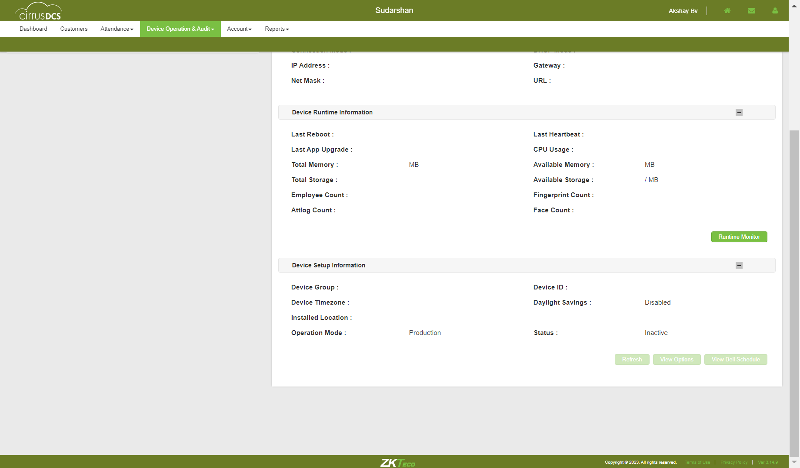Verify whether in the bell schedule popup page below mentioned table is displayedcom.zkteco.cirrusdcs.stepDefinitions.CirrusDCS.i_initialize_drivers_for_DCS_automation()Driver InitializedGiven I visit CirrusDCS TenantLogin pageGiven I am in SuperTenant customer view home pageWhen I perform mousehower on Device managerAnd I click on Device Setup sub moduleThen I click on new device buttonThen I enter the details and add the deviceThen I click on Yes buttonThen I click on switch accountWhen I perform mousehower on Device operation & AuditAnd I click on tenant Device Info sub moduleThen I enter devicesn into search field in hostThen I click on Search IconThen I select the deviceThen I click on View Bell Schedule buttonThen I validate the columns in view bell schedule popupTC_20: Verify whether user is able to Filter the data for online device statuscom.zkteco.cirrusdcs.stepDefinitions.CirrusDCS.i_initialize_drivers_for_DCS_automation()Driver InitializedGiven I visit CirrusDCS TenantLogin pageGiven I am in SuperTenant host view home pageWhen I perform mousehower on Device operation & AuditAnd I click on tenant Device Info sub moduleThen I click on online status check boxThen I click on Search IconThen I validate whether all the devices present based on the device statusTC_21: Verify whether user is able to Filter the data for offline device statuscom.zkteco.cirrusdcs.stepDefinitions.CirrusDCS.i_initialize_drivers_for_DCS_automation()Driver InitializedGiven I visit CirrusDCS TenantLogin pageGiven I am in SuperTenant host view home pageWhen I perform mousehower on Device operation & AuditAnd I click on tenant Device Info sub moduleThen I click on pending status check boxThen I click on Search IconThen I validate whether all the devices present based on the device statusTC_22: Verify whether user is able to Filter the data for offline device statuscom.zkteco.cirrusdcs.stepDefinitions.CirrusDCS.i_initialize_drivers_for_DCS_automation()Driver InitializedGiven I visit CirrusDCS TenantLogin pageGiven I am in SuperTenant host view home pageWhen I perform mousehower on Device operation & AuditAnd I click on tenant Device Info sub moduleThen I click on offline status check boxThen I click on Search IconThen I validate whether all the devices present based on the device statusTC_23: Verify whether user is able to Filter the data for deleted device statuscom.zkteco.cirrusdcs.stepDefinitions.CirrusDCS.i_initialize_drivers_for_DCS_automation()Driver InitializedGiven I visit CirrusDCS TenantLogin pageGiven I am in SuperTenant host view home pageWhen I perform mousehower on Device operation & AuditAnd I click on tenant Device Info sub moduleThen I click on deleted status check boxThen I click on Search IconThen I validate whether all the devices present based on the device statusTC_24: Verify whether user is able to Filter the data for all device statuscom.zkteco.cirrusdcs.stepDefinitions.CirrusDCS.i_initialize_drivers_for_DCS_automation()Driver InitializedGiven I visit CirrusDCS TenantLogin pageGiven I am in SuperTenant host view home pageWhen I perform mousehower on Device operation & AuditAnd I click on tenant Device Info sub moduleThen I click on all status check boxThen I click on Search IconThen I validate whether all the devices present based on all the device statusTC_25: Verify whether user is able to navigate to device monitor page on click of Runtime monitor buttoncom.zkteco.cirrusdcs.stepDefinitions.CirrusDCS.i_initialize_drivers_for_DCS_automation()Driver InitializedGiven I visit CirrusDCS TenantLogin pageGiven I am in SuperTenant customer view home pageWhen I perform mousehower on Device managerAnd I click on Device Setup sub moduleThen I click on new device buttonThen I enter the details and add the deviceThen I click on Yes buttonThen I click on switch accountWhen I perform mousehower on Device operation & AuditAnd I click on tenant Device Info sub moduleThen I enter devicesn into search field in hostThen I click on Search IconThen I select the deviceThen I click on Runtime monitor button in device info pageThen I validate user navigation to device monitor pageTC_01: Verify whether user is able to navigate to "Device Operations" submodulecom.zkteco.cirrusdcs.stepDefinitions.CirrusDCS.i_initialize_drivers_for_DCS_automation()Driver InitializedGiven I visit CirrusDCS TenantLogin pageGiven I am in SuperTenant host view home pageWhen I perform mousehower on Device operation & AuditAnd I click on Device Operations sub moduleThen I validate user navigation to device operations pageTC_02: Verify whether user is able to view below mentioned sections in device operations pagecom.zkteco.cirrusdcs.stepDefinitions.CirrusDCS.i_initialize_drivers_for_DCS_automation()Driver InitializedGiven I visit CirrusDCS TenantLogin pageGiven I am in SuperTenant host view home pageWhen I perform mousehower on Device operation & AuditAnd I click on Device Operations sub moduleThen I validate the sections present in the device operations pageTC_03: Verify whether user is able to view below mentioned components and table in Device List Sectioncom.zkteco.cirrusdcs.stepDefinitions.CirrusDCS.i_initialize_drivers_for_DCS_automation()Driver InitializedGiven I visit CirrusDCS TenantLogin pageGiven I am in SuperTenant host view home pageWhen I perform mousehower on Device operation & AuditAnd I click on Device Operations sub moduleThen I validate the components present in the device list sectionTC_04: Verify whether user is able to view the List of all devices, that are added irrespective of tenants in Device List Sectioncom.zkteco.cirrusdcs.stepDefinitions.CirrusDCS.i_initialize_drivers_for_DCS_automation()Driver InitializedGiven I visit CirrusDCS TenantLogin pageGiven I am in SuperTenant host view home pageWhen I perform mousehower on Device operation & AuditAnd I click on Device Operations sub moduleThen I validate whether all the devices are presentTC_05: Verify whether user is able to view the below mentioned Components and Table in Device Remote Operation Advanced Sectioncom.zkteco.cirrusdcs.stepDefinitions.CirrusDCS.i_initialize_drivers_for_DCS_automation()Driver InitializedGiven I visit CirrusDCS TenantLogin pageGiven I am in SuperTenant host view home pageWhen I perform mousehower on Device operation & AuditAnd I click on Device Operations sub moduleThen I validate whether all the components are present in device remote operation advanced sectionTC_07: Verify whether user is able to search the device based on device sn search criteriacom.zkteco.cirrusdcs.stepDefinitions.CirrusDCS.i_initialize_drivers_for_DCS_automation()Driver InitializedGiven I visit CirrusDCS TenantLogin pageGiven I am in SuperTenant customer view home pageWhen I perform mousehower on Device managerAnd I click on Device Setup sub moduleThen I click on new device buttonThen I enter the details and add the deviceThen I click on Yes buttonThen I click on switch accountWhen I perform mousehower on Device operation & AuditAnd I click on Device Operations sub moduleThen I enter devicesn into search field in hostThen I click on Search IconThen I validate the search resultsTC_08: Verify whether user is able to search the device based on device name search criteriacom.zkteco.cirrusdcs.stepDefinitions.CirrusDCS.i_initialize_drivers_for_DCS_automation()Driver InitializedGiven I visit CirrusDCS TenantLogin pageGiven I am in SuperTenant customer view home pageWhen I perform mousehower on Device managerAnd I click on Device Setup sub moduleThen I click on new device buttonThen I enter the details and add the deviceThen I click on Yes buttonThen I click on switch accountWhen I perform mousehower on Device operation & AuditAnd I click on Device Operations sub moduleThen I enter devicename into search fieldThen I click on Search IconThen I validate the search resultsTC_09: Verify whether user is able to view the below mentioned columns, after searching the devicecom.zkteco.cirrusdcs.stepDefinitions.CirrusDCS.i_initialize_drivers_for_DCS_automation()Driver InitializedGiven I visit CirrusDCS TenantLogin pageGiven I am in SuperTenant customer view home pageWhen I perform mousehower on Device managerAnd I click on Device Setup sub moduleThen I click on new device buttonThen I enter the details and add the deviceThen I click on Yes buttonThen I click on switch accountWhen I perform mousehower on Device operation & AuditAnd I click on Device Operations sub moduleThen I enter devicename into search fieldThen I click on Search IconThen I validate columns after search resultsTC_10: Verify whether user is able to Filter the data for online device statuscom.zkteco.cirrusdcs.stepDefinitions.CirrusDCS.i_initialize_drivers_for_DCS_automation()Driver InitializedGiven I visit CirrusDCS TenantLogin pageGiven I am in SuperTenant host view home pageWhen I perform mousehower on Device operation & AuditAnd I click on Device Operations sub moduleThen I click on online status check boxThen I click on Search IconThen I validate whether all the devices present based on the device statusTC_11: Verify whether user is able to Filter the data for offline device statuscom.zkteco.cirrusdcs.stepDefinitions.CirrusDCS.i_initialize_drivers_for_DCS_automation()Driver InitializedGiven I visit CirrusDCS TenantLogin pageGiven I am in SuperTenant host view home pageWhen I perform mousehower on Device operation & AuditAnd I click on Device Operations sub moduleThen I click on pending status check boxThen I click on Search IconThen I validate whether all the devices present based on the device statusTC_12: Verify whether user is able to Filter the data for offline device statuscom.zkteco.cirrusdcs.stepDefinitions.CirrusDCS.i_initialize_drivers_for_DCS_automation()Driver InitializedGiven I visit CirrusDCS TenantLogin pageGiven I am in SuperTenant host view home pageWhen I perform mousehower on Device operation & AuditAnd I click on Device Operations sub moduleThen I click on offline status check boxThen I click on Search IconThen I validate whether all the devices present based on the device statusTC_13: Verify whether user is able to Filter the data for deleted device statuscom.zkteco.cirrusdcs.stepDefinitions.CirrusDCS.i_initialize_drivers_for_DCS_automation()Driver InitializedGiven I visit CirrusDCS TenantLogin pageGiven I am in SuperTenant host view home pageWhen I perform mousehower on Device operation & AuditAnd I click on Device Operations sub moduleThen I click on deleted status check boxThen I click on Search IconThen I validate whether all the devices present based on the device statusTC_14: Verify whether user is able to Filter the data for all device statuscom.zkteco.cirrusdcs.stepDefinitions.CirrusDCS.i_initialize_drivers_for_DCS_automation()Driver InitializedGiven I visit CirrusDCS TenantLogin pageGiven I am in SuperTenant host view home pageWhen I perform mousehower on Device operation & AuditAnd I click on Device Operations sub moduleThen I click on all status check boxThen I click on Search IconThen I validate whether all the devices present based on all the device statusTC_15: Verify whether Respective device details are getting auto populated, when device is selectedcom.zkteco.cirrusdcs.stepDefinitions.CirrusDCS.i_initialize_drivers_for_DCS_automation()Driver InitializedGiven I visit CirrusDCS TenantLogin pageGiven I am in SuperTenant customer view home pageWhen I perform mousehower on Device managerAnd I click on Device Setup sub moduleThen I click on new device buttonThen I enter the details and add the deviceThen I click on Yes buttonThen I click on switch accountWhen I perform mousehower on Device operation & AuditAnd I click on Device Operations sub moduleThen I enter devicesn into search field in hostThen I click on Search IconThen I validate data auto autopopulation based on the selected devicecom.zkteco.cirrusdcs.stepDefinitions.CirrusDCS.teardown(io.cucumber.java.Scenario)
Verify whether User is able to access the view bell schedule button Bell schedule popup page is displayedcom.zkteco.cirrusdcs.stepDefinitions.CirrusDCS.i_initialize_drivers_for_DCS_automation()Driver InitializedGiven I visit CirrusDCS TenantLogin pageGiven I am in SuperTenant customer view home pageWhen I perform mousehower on Device managerAnd I click on Device Setup sub moduleThen I click on new device buttonThen I enter the details and add the deviceThen I click on Yes buttonThen I click on switch accountWhen I perform mousehower on Device operation & AuditAnd I click on tenant Device Info sub moduleThen I enter devicesn into search field in hostThen I click on Search IconThen I select the deviceThen I click on View Bell Schedule buttonThen I verify view bell schedule popup is displayed on click of view Bell Schedule buttoncom.zkteco.cirrusdcs.stepDefinitions.CirrusDCS.teardown(io.cucumber.java.Scenario)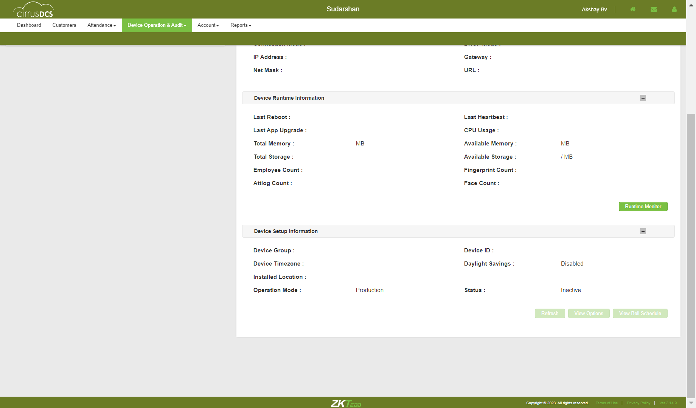Verify whether in the bell schedule popup page below mentioned table is displayedcom.zkteco.cirrusdcs.stepDefinitions.CirrusDCS.i_initialize_drivers_for_DCS_automation()Driver InitializedGiven I visit CirrusDCS TenantLogin pageGiven I am in SuperTenant customer view home pageWhen I perform mousehower on Device managerAnd I click on Device Setup sub moduleThen I click on new device buttonThen I enter the details and add the deviceThen I click on Yes buttonThen I click on switch accountWhen I perform mousehower on Device operation & AuditAnd I click on tenant Device Info sub moduleThen I enter devicesn into search field in hostThen I click on Search IconThen I select the deviceThen I click on View Bell Schedule buttonThen I validate the columns in view bell schedule popupTC_20: Verify whether user is able to Filter the data for online device statuscom.zkteco.cirrusdcs.stepDefinitions.CirrusDCS.i_initialize_drivers_for_DCS_automation()Driver InitializedGiven I visit CirrusDCS TenantLogin pageGiven I am in SuperTenant host view home pageWhen I perform mousehower on Device operation & AuditAnd I click on tenant Device Info sub moduleThen I click on online status check boxThen I click on Search IconThen I validate whether all the devices present based on the device statusTC_21: Verify whether user is able to Filter the data for offline device statuscom.zkteco.cirrusdcs.stepDefinitions.CirrusDCS.i_initialize_drivers_for_DCS_automation()Driver InitializedGiven I visit CirrusDCS TenantLogin pageGiven I am in SuperTenant host view home pageWhen I perform mousehower on Device operation & AuditAnd I click on tenant Device Info sub moduleThen I click on pending status check boxThen I click on Search IconThen I validate whether all the devices present based on the device statusTC_22: Verify whether user is able to Filter the data for offline device statuscom.zkteco.cirrusdcs.stepDefinitions.CirrusDCS.i_initialize_drivers_for_DCS_automation()Driver InitializedGiven I visit CirrusDCS TenantLogin pageGiven I am in SuperTenant host view home pageWhen I perform mousehower on Device operation & AuditAnd I click on tenant Device Info sub moduleThen I click on offline status check boxThen I click on Search IconThen I validate whether all the devices present based on the device statusTC_23: Verify whether user is able to Filter the data for deleted device statuscom.zkteco.cirrusdcs.stepDefinitions.CirrusDCS.i_initialize_drivers_for_DCS_automation()Driver InitializedGiven I visit CirrusDCS TenantLogin pageGiven I am in SuperTenant host view home pageWhen I perform mousehower on Device operation & AuditAnd I click on tenant Device Info sub moduleThen I click on deleted status check boxThen I click on Search IconThen I validate whether all the devices present based on the device statusTC_24: Verify whether user is able to Filter the data for all device statuscom.zkteco.cirrusdcs.stepDefinitions.CirrusDCS.i_initialize_drivers_for_DCS_automation()Driver InitializedGiven I visit CirrusDCS TenantLogin pageGiven I am in SuperTenant host view home pageWhen I perform mousehower on Device operation & AuditAnd I click on tenant Device Info sub moduleThen I click on all status check boxThen I click on Search IconThen I validate whether all the devices present based on all the device statusTC_25: Verify whether user is able to navigate to device monitor page on click of Runtime monitor buttoncom.zkteco.cirrusdcs.stepDefinitions.CirrusDCS.i_initialize_drivers_for_DCS_automation()Driver InitializedGiven I visit CirrusDCS TenantLogin pageGiven I am in SuperTenant customer view home pageWhen I perform mousehower on Device managerAnd I click on Device Setup sub moduleThen I click on new device buttonThen I enter the details and add the deviceThen I click on Yes buttonThen I click on switch accountWhen I perform mousehower on Device operation & AuditAnd I click on tenant Device Info sub moduleThen I enter devicesn into search field in hostThen I click on Search IconThen I select the deviceThen I click on Runtime monitor button in device info pageThen I validate user navigation to device monitor pageTC_01: Verify whether user is able to navigate to "Device Operations" submodulecom.zkteco.cirrusdcs.stepDefinitions.CirrusDCS.i_initialize_drivers_for_DCS_automation()Driver InitializedGiven I visit CirrusDCS TenantLogin pageGiven I am in SuperTenant host view home pageWhen I perform mousehower on Device operation & AuditAnd I click on Device Operations sub moduleThen I validate user navigation to device operations pageTC_02: Verify whether user is able to view below mentioned sections in device operations pagecom.zkteco.cirrusdcs.stepDefinitions.CirrusDCS.i_initialize_drivers_for_DCS_automation()Driver InitializedGiven I visit CirrusDCS TenantLogin pageGiven I am in SuperTenant host view home pageWhen I perform mousehower on Device operation & AuditAnd I click on Device Operations sub moduleThen I validate the sections present in the device operations pageTC_03: Verify whether user is able to view below mentioned components and table in Device List Sectioncom.zkteco.cirrusdcs.stepDefinitions.CirrusDCS.i_initialize_drivers_for_DCS_automation()Driver InitializedGiven I visit CirrusDCS TenantLogin pageGiven I am in SuperTenant host view home pageWhen I perform mousehower on Device operation & AuditAnd I click on Device Operations sub moduleThen I validate the components present in the device list sectionTC_04: Verify whether user is able to view the List of all devices, that are added irrespective of tenants in Device List Sectioncom.zkteco.cirrusdcs.stepDefinitions.CirrusDCS.i_initialize_drivers_for_DCS_automation()Driver InitializedGiven I visit CirrusDCS TenantLogin pageGiven I am in SuperTenant host view home pageWhen I perform mousehower on Device operation & AuditAnd I click on Device Operations sub moduleThen I validate whether all the devices are presentTC_05: Verify whether user is able to view the below mentioned Components and Table in Device Remote Operation Advanced Sectioncom.zkteco.cirrusdcs.stepDefinitions.CirrusDCS.i_initialize_drivers_for_DCS_automation()Driver InitializedGiven I visit CirrusDCS TenantLogin pageGiven I am in SuperTenant host view home pageWhen I perform mousehower on Device operation & AuditAnd I click on Device Operations sub moduleThen I validate whether all the components are present in device remote operation advanced sectionTC_07: Verify whether user is able to search the device based on device sn search criteriacom.zkteco.cirrusdcs.stepDefinitions.CirrusDCS.i_initialize_drivers_for_DCS_automation()Driver InitializedGiven I visit CirrusDCS TenantLogin pageGiven I am in SuperTenant customer view home pageWhen I perform mousehower on Device managerAnd I click on Device Setup sub moduleThen I click on new device buttonThen I enter the details and add the deviceThen I click on Yes buttonThen I click on switch accountWhen I perform mousehower on Device operation & AuditAnd I click on Device Operations sub moduleThen I enter devicesn into search field in hostThen I click on Search IconThen I validate the search resultsTC_08: Verify whether user is able to search the device based on device name search criteriacom.zkteco.cirrusdcs.stepDefinitions.CirrusDCS.i_initialize_drivers_for_DCS_automation()Driver InitializedGiven I visit CirrusDCS TenantLogin pageGiven I am in SuperTenant customer view home pageWhen I perform mousehower on Device managerAnd I click on Device Setup sub moduleThen I click on new device buttonThen I enter the details and add the deviceThen I click on Yes buttonThen I click on switch accountWhen I perform mousehower on Device operation & AuditAnd I click on Device Operations sub moduleThen I enter devicename into search fieldThen I click on Search IconThen I validate the search resultsTC_09: Verify whether user is able to view the below mentioned columns, after searching the devicecom.zkteco.cirrusdcs.stepDefinitions.CirrusDCS.i_initialize_drivers_for_DCS_automation()Driver InitializedGiven I visit CirrusDCS TenantLogin pageGiven I am in SuperTenant customer view home pageWhen I perform mousehower on Device managerAnd I click on Device Setup sub moduleThen I click on new device buttonThen I enter the details and add the deviceThen I click on Yes buttonThen I click on switch accountWhen I perform mousehower on Device operation & AuditAnd I click on Device Operations sub moduleThen I enter devicename into search fieldThen I click on Search IconThen I validate columns after search resultsTC_10: Verify whether user is able to Filter the data for online device statuscom.zkteco.cirrusdcs.stepDefinitions.CirrusDCS.i_initialize_drivers_for_DCS_automation()Driver InitializedGiven I visit CirrusDCS TenantLogin pageGiven I am in SuperTenant host view home pageWhen I perform mousehower on Device operation & AuditAnd I click on Device Operations sub moduleThen I click on online status check boxThen I click on Search IconThen I validate whether all the devices present based on the device statusTC_11: Verify whether user is able to Filter the data for offline device statuscom.zkteco.cirrusdcs.stepDefinitions.CirrusDCS.i_initialize_drivers_for_DCS_automation()Driver InitializedGiven I visit CirrusDCS TenantLogin pageGiven I am in SuperTenant host view home pageWhen I perform mousehower on Device operation & AuditAnd I click on Device Operations sub moduleThen I click on pending status check boxThen I click on Search IconThen I validate whether all the devices present based on the device statusTC_12: Verify whether user is able to Filter the data for offline device statuscom.zkteco.cirrusdcs.stepDefinitions.CirrusDCS.i_initialize_drivers_for_DCS_automation()Driver InitializedGiven I visit CirrusDCS TenantLogin pageGiven I am in SuperTenant host view home pageWhen I perform mousehower on Device operation & AuditAnd I click on Device Operations sub moduleThen I click on offline status check boxThen I click on Search IconThen I validate whether all the devices present based on the device statusTC_13: Verify whether user is able to Filter the data for deleted device statuscom.zkteco.cirrusdcs.stepDefinitions.CirrusDCS.i_initialize_drivers_for_DCS_automation()Driver InitializedGiven I visit CirrusDCS TenantLogin pageGiven I am in SuperTenant host view home pageWhen I perform mousehower on Device operation & AuditAnd I click on Device Operations sub moduleThen I click on deleted status check boxThen I click on Search IconThen I validate whether all the devices present based on the device statusTC_14: Verify whether user is able to Filter the data for all device statuscom.zkteco.cirrusdcs.stepDefinitions.CirrusDCS.i_initialize_drivers_for_DCS_automation()Driver InitializedGiven I visit CirrusDCS TenantLogin pageGiven I am in SuperTenant host view home pageWhen I perform mousehower on Device operation & AuditAnd I click on Device Operations sub moduleThen I click on all status check boxThen I click on Search IconThen I validate whether all the devices present based on all the device statusTC_15: Verify whether Respective device details are getting auto populated, when device is selectedcom.zkteco.cirrusdcs.stepDefinitions.CirrusDCS.i_initialize_drivers_for_DCS_automation()Driver InitializedGiven I visit CirrusDCS TenantLogin pageGiven I am in SuperTenant customer view home pageWhen I perform mousehower on Device managerAnd I click on Device Setup sub moduleThen I click on new device buttonThen I enter the details and add the deviceThen I click on Yes buttonThen I click on switch accountWhen I perform mousehower on Device operation & AuditAnd I click on Device Operations sub moduleThen I enter devicesn into search field in hostThen I click on Search IconThen I validate data auto autopopulation based on the selected devicecom.zkteco.cirrusdcs.stepDefinitions.CirrusDCS.teardown(io.cucumber.java.Scenario) TC_16: Verify whether user is able to send command to devicecom.zkteco.cirrusdcs.stepDefinitions.CirrusDCS.i_initialize_drivers_for_DCS_automation()Driver InitializedGiven I visit CirrusDCS TenantLogin pageGiven I am in SuperTenant customer view home pageWhen I perform mousehower on Device managerAnd I click on Device Setup sub moduleThen I click on new device buttonThen I enter the details and add the deviceThen I click on Yes buttonThen I click on switch accountWhen I perform mousehower on Device operation & AuditAnd I click on Device Operations sub moduleThen I enter devicesn into search field in hostThen I click on Search IconThen I select the deviceThen I enter command into fieldThen I click on submit buttonThen I validate the success messagecom.zkteco.cirrusdcs.stepDefinitions.CirrusDCS.teardown(io.cucumber.java.Scenario)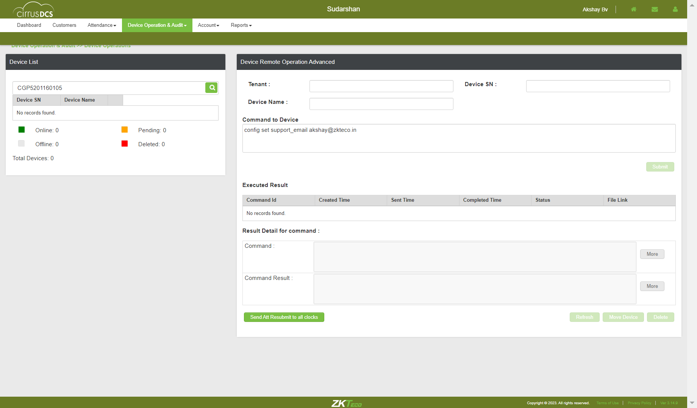TC_17: Verify whether user is able to view the Sent device command in Executed Result Tablecom.zkteco.cirrusdcs.stepDefinitions.CirrusDCS.i_initialize_drivers_for_DCS_automation()Driver InitializedGiven I visit CirrusDCS TenantLogin pageGiven I am in SuperTenant customer view home pageWhen I perform mousehower on Device managerAnd I click on Device Setup sub moduleThen I click on new device buttonThen I enter the details and add the deviceThen I click on Yes buttonThen I click on switch accountWhen I perform mousehower on Device operation & AuditAnd I click on Device Operations sub moduleThen I enter devicesn into search field in hostThen I click on Search IconThen I select the deviceThen I enter command into fieldThen I click on submit buttonThen I validate sent command is displayed in executed result tableTC_18: Verify whether user is able to view the Command Results , based on the Selected Record in the Executed Results tablecom.zkteco.cirrusdcs.stepDefinitions.CirrusDCS.i_initialize_drivers_for_DCS_automation()Driver InitializedGiven I visit CirrusDCS TenantLogin pageGiven I am in SuperTenant customer view home pageWhen I perform mousehower on Device managerAnd I click on Device Setup sub moduleThen I click on new device buttonThen I enter the details and add the deviceThen I click on Yes buttonThen I click on switch accountWhen I perform mousehower on Device operation & AuditAnd I click on Device Operations sub moduleThen I enter devicesn into search field in hostThen I click on Search IconThen I select the deviceThen I enter command into fieldThen I click on submit buttonThen I validate the command results section after selecting the executed commandcom.zkteco.cirrusdcs.stepDefinitions.CirrusDCS.teardown(io.cucumber.java.Scenario)
TC_16: Verify whether user is able to send command to devicecom.zkteco.cirrusdcs.stepDefinitions.CirrusDCS.i_initialize_drivers_for_DCS_automation()Driver InitializedGiven I visit CirrusDCS TenantLogin pageGiven I am in SuperTenant customer view home pageWhen I perform mousehower on Device managerAnd I click on Device Setup sub moduleThen I click on new device buttonThen I enter the details and add the deviceThen I click on Yes buttonThen I click on switch accountWhen I perform mousehower on Device operation & AuditAnd I click on Device Operations sub moduleThen I enter devicesn into search field in hostThen I click on Search IconThen I select the deviceThen I enter command into fieldThen I click on submit buttonThen I validate the success messagecom.zkteco.cirrusdcs.stepDefinitions.CirrusDCS.teardown(io.cucumber.java.Scenario)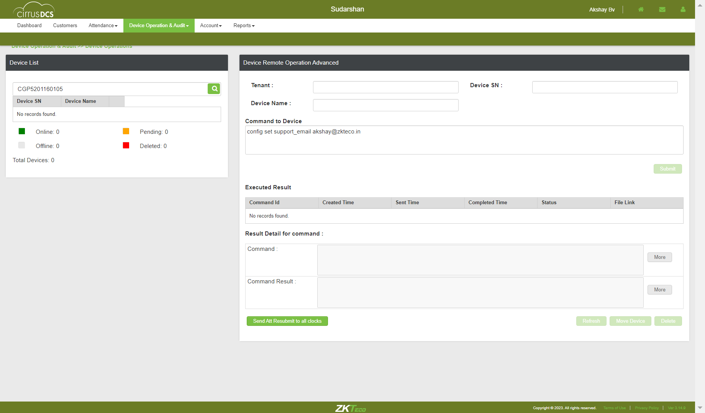TC_17: Verify whether user is able to view the Sent device command in Executed Result Tablecom.zkteco.cirrusdcs.stepDefinitions.CirrusDCS.i_initialize_drivers_for_DCS_automation()Driver InitializedGiven I visit CirrusDCS TenantLogin pageGiven I am in SuperTenant customer view home pageWhen I perform mousehower on Device managerAnd I click on Device Setup sub moduleThen I click on new device buttonThen I enter the details and add the deviceThen I click on Yes buttonThen I click on switch accountWhen I perform mousehower on Device operation & AuditAnd I click on Device Operations sub moduleThen I enter devicesn into search field in hostThen I click on Search IconThen I select the deviceThen I enter command into fieldThen I click on submit buttonThen I validate sent command is displayed in executed result tableTC_18: Verify whether user is able to view the Command Results , based on the Selected Record in the Executed Results tablecom.zkteco.cirrusdcs.stepDefinitions.CirrusDCS.i_initialize_drivers_for_DCS_automation()Driver InitializedGiven I visit CirrusDCS TenantLogin pageGiven I am in SuperTenant customer view home pageWhen I perform mousehower on Device managerAnd I click on Device Setup sub moduleThen I click on new device buttonThen I enter the details and add the deviceThen I click on Yes buttonThen I click on switch accountWhen I perform mousehower on Device operation & AuditAnd I click on Device Operations sub moduleThen I enter devicesn into search field in hostThen I click on Search IconThen I select the deviceThen I enter command into fieldThen I click on submit buttonThen I validate the command results section after selecting the executed commandcom.zkteco.cirrusdcs.stepDefinitions.CirrusDCS.teardown(io.cucumber.java.Scenario) TC_19: Verify whether user is able to view the device command popup, when clicked on More buttoncom.zkteco.cirrusdcs.stepDefinitions.CirrusDCS.i_initialize_drivers_for_DCS_automation()Driver InitializedGiven I visit CirrusDCS TenantLogin pageGiven I am in SuperTenant customer view home pageWhen I perform mousehower on Device managerAnd I click on Device Setup sub moduleThen I click on new device buttonThen I enter the details and add the deviceThen I click on Yes buttonThen I click on switch accountWhen I perform mousehower on Device operation & AuditAnd I click on Device Operations sub moduleThen I enter devicesn into search field in hostThen I click on Search IconThen I select the deviceThen I enter command into fieldThen I click on submit buttonThen I validate the command results section after selecting the executed commandThen I validate device command popup is displayed for command field more buttonStep skippedcom.zkteco.cirrusdcs.stepDefinitions.CirrusDCS.teardown(io.cucumber.java.Scenario)
TC_19: Verify whether user is able to view the device command popup, when clicked on More buttoncom.zkteco.cirrusdcs.stepDefinitions.CirrusDCS.i_initialize_drivers_for_DCS_automation()Driver InitializedGiven I visit CirrusDCS TenantLogin pageGiven I am in SuperTenant customer view home pageWhen I perform mousehower on Device managerAnd I click on Device Setup sub moduleThen I click on new device buttonThen I enter the details and add the deviceThen I click on Yes buttonThen I click on switch accountWhen I perform mousehower on Device operation & AuditAnd I click on Device Operations sub moduleThen I enter devicesn into search field in hostThen I click on Search IconThen I select the deviceThen I enter command into fieldThen I click on submit buttonThen I validate the command results section after selecting the executed commandThen I validate device command popup is displayed for command field more buttonStep skippedcom.zkteco.cirrusdcs.stepDefinitions.CirrusDCS.teardown(io.cucumber.java.Scenario) TC_20: Verify whether user is able to view the Command Result popup, when clicked on More buttoncom.zkteco.cirrusdcs.stepDefinitions.CirrusDCS.i_initialize_drivers_for_DCS_automation()Driver InitializedGiven I visit CirrusDCS TenantLogin pageGiven I am in SuperTenant customer view home pageWhen I perform mousehower on Device managerAnd I click on Device Setup sub moduleThen I click on new device buttonThen I enter the details and add the deviceThen I click on Yes buttonThen I click on switch accountWhen I perform mousehower on Device operation & AuditAnd I click on Device Operations sub moduleThen I enter devicesn into search field in hostThen I click on Search IconThen I select the deviceThen I enter command into fieldThen I click on submit buttonThen I validate the command results section after selecting the executed commandThen I validate device command popup is displayed for command Result more buttonStep skippedcom.zkteco.cirrusdcs.stepDefinitions.CirrusDCS.teardown(io.cucumber.java.Scenario)
TC_20: Verify whether user is able to view the Command Result popup, when clicked on More buttoncom.zkteco.cirrusdcs.stepDefinitions.CirrusDCS.i_initialize_drivers_for_DCS_automation()Driver InitializedGiven I visit CirrusDCS TenantLogin pageGiven I am in SuperTenant customer view home pageWhen I perform mousehower on Device managerAnd I click on Device Setup sub moduleThen I click on new device buttonThen I enter the details and add the deviceThen I click on Yes buttonThen I click on switch accountWhen I perform mousehower on Device operation & AuditAnd I click on Device Operations sub moduleThen I enter devicesn into search field in hostThen I click on Search IconThen I select the deviceThen I enter command into fieldThen I click on submit buttonThen I validate the command results section after selecting the executed commandThen I validate device command popup is displayed for command Result more buttonStep skippedcom.zkteco.cirrusdcs.stepDefinitions.CirrusDCS.teardown(io.cucumber.java.Scenario) TC_21: Verify whether user is able to Refresh the Page, on Click of Refresh buttoncom.zkteco.cirrusdcs.stepDefinitions.CirrusDCS.i_initialize_drivers_for_DCS_automation()Driver InitializedGiven I visit CirrusDCS TenantLogin pageGiven I am in SuperTenant customer view home pageWhen I perform mousehower on Device managerAnd I click on Device Setup sub moduleThen I click on new device buttonThen I enter the details and add the deviceThen I click on Yes buttonThen I click on switch accountWhen I perform mousehower on Device operation & AuditAnd I click on Device Operations sub moduleThen I enter devicesn into search field in hostThen I click on Search IconThen I select the deviceThen I enter command into fieldThen I click on submit buttonThen I click on Refresh button and I validate the page refreshcom.zkteco.cirrusdcs.stepDefinitions.CirrusDCS.teardown(io.cucumber.java.Scenario)
TC_21: Verify whether user is able to Refresh the Page, on Click of Refresh buttoncom.zkteco.cirrusdcs.stepDefinitions.CirrusDCS.i_initialize_drivers_for_DCS_automation()Driver InitializedGiven I visit CirrusDCS TenantLogin pageGiven I am in SuperTenant customer view home pageWhen I perform mousehower on Device managerAnd I click on Device Setup sub moduleThen I click on new device buttonThen I enter the details and add the deviceThen I click on Yes buttonThen I click on switch accountWhen I perform mousehower on Device operation & AuditAnd I click on Device Operations sub moduleThen I enter devicesn into search field in hostThen I click on Search IconThen I select the deviceThen I enter command into fieldThen I click on submit buttonThen I click on Refresh button and I validate the page refreshcom.zkteco.cirrusdcs.stepDefinitions.CirrusDCS.teardown(io.cucumber.java.Scenario) TC_22: Verify whether user is able to view "Move Device" Pop up on click of Move buttoncom.zkteco.cirrusdcs.stepDefinitions.CirrusDCS.i_initialize_drivers_for_DCS_automation()Driver InitializedGiven I visit CirrusDCS TenantLogin pageGiven I am in SuperTenant customer view home pageWhen I perform mousehower on Device managerAnd I click on Device Setup sub moduleThen I click on new device buttonThen I enter the details and add the deviceThen I click on Yes buttonThen I click on switch accountWhen I perform mousehower on Device operation & AuditAnd I click on Device Operations sub moduleThen I enter devicesn into search field in hostThen I click on Search IconThen I select the deviceThen I click on move device buttonThen I verify move device popup window is displayedcom.zkteco.cirrusdcs.stepDefinitions.CirrusDCS.teardown(io.cucumber.java.Scenario)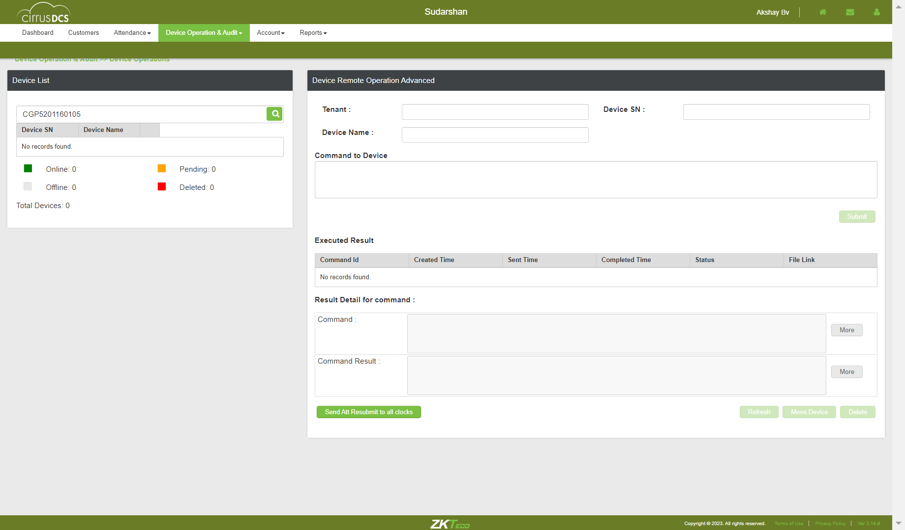TC_23: Verify whether user is able to view "Move Device" Pop up is displayed with below mentioned componentscom.zkteco.cirrusdcs.stepDefinitions.CirrusDCS.i_initialize_drivers_for_DCS_automation()Driver InitializedGiven I visit CirrusDCS TenantLogin pageGiven I am in SuperTenant customer view home pageWhen I perform mousehower on Device managerAnd I click on Device Setup sub moduleThen I click on new device buttonThen I enter the details and add the deviceThen I click on Yes buttonThen I click on switch accountWhen I perform mousehower on Device operation & AuditAnd I click on Device Operations sub moduleThen I enter devicesn into search field in hostThen I click on Search IconThen I select the deviceThen I click on move device buttonThen I verify move device popup window is displayedThen I verify the components in move device popupStep skippedcom.zkteco.cirrusdcs.stepDefinitions.CirrusDCS.teardown(io.cucumber.java.Scenario)
TC_22: Verify whether user is able to view "Move Device" Pop up on click of Move buttoncom.zkteco.cirrusdcs.stepDefinitions.CirrusDCS.i_initialize_drivers_for_DCS_automation()Driver InitializedGiven I visit CirrusDCS TenantLogin pageGiven I am in SuperTenant customer view home pageWhen I perform mousehower on Device managerAnd I click on Device Setup sub moduleThen I click on new device buttonThen I enter the details and add the deviceThen I click on Yes buttonThen I click on switch accountWhen I perform mousehower on Device operation & AuditAnd I click on Device Operations sub moduleThen I enter devicesn into search field in hostThen I click on Search IconThen I select the deviceThen I click on move device buttonThen I verify move device popup window is displayedcom.zkteco.cirrusdcs.stepDefinitions.CirrusDCS.teardown(io.cucumber.java.Scenario)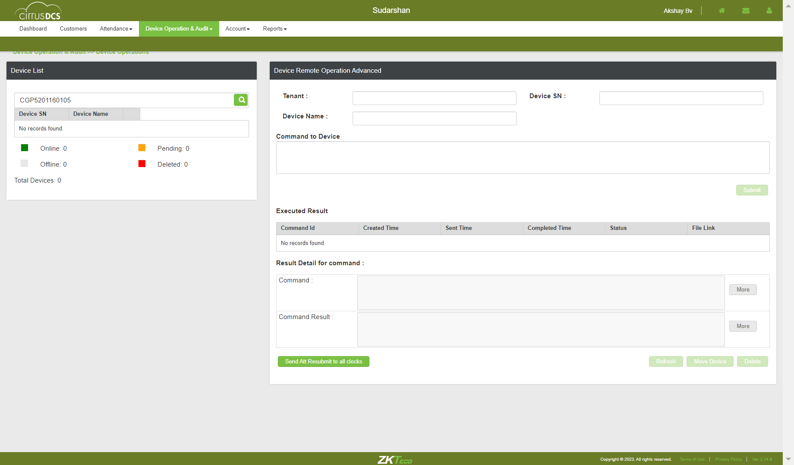TC_23: Verify whether user is able to view "Move Device" Pop up is displayed with below mentioned componentscom.zkteco.cirrusdcs.stepDefinitions.CirrusDCS.i_initialize_drivers_for_DCS_automation()Driver InitializedGiven I visit CirrusDCS TenantLogin pageGiven I am in SuperTenant customer view home pageWhen I perform mousehower on Device managerAnd I click on Device Setup sub moduleThen I click on new device buttonThen I enter the details and add the deviceThen I click on Yes buttonThen I click on switch accountWhen I perform mousehower on Device operation & AuditAnd I click on Device Operations sub moduleThen I enter devicesn into search field in hostThen I click on Search IconThen I select the deviceThen I click on move device buttonThen I verify move device popup window is displayedThen I verify the components in move device popupStep skippedcom.zkteco.cirrusdcs.stepDefinitions.CirrusDCS.teardown(io.cucumber.java.Scenario) TC_24: Verify whether user is able to Move the device to the respective selected clientcom.zkteco.cirrusdcs.stepDefinitions.CirrusDCS.i_initialize_drivers_for_DCS_automation()Driver InitializedGiven I visit CirrusDCS TenantLogin pageGiven I am in SuperTenant customer view home pageWhen I perform mousehower on Device managerAnd I click on Device Setup sub moduleThen I click on new device buttonThen I enter the details and add the deviceThen I click on Yes buttonThen I click on switch accountWhen I perform mousehower on Device operation & AuditAnd I click on Device Operations sub moduleThen I enter devicesn into search field in hostThen I click on Search IconThen I select the deviceThen I click on move device buttonThen I move the device to other tenantThen I login to tenant and verify whether device is movedTC_25: Verify whether error message is displayed, when user Move the device to same client againcom.zkteco.cirrusdcs.stepDefinitions.CirrusDCS.i_initialize_drivers_for_DCS_automation()Driver InitializedGiven I visit CirrusDCS TenantLogin pageGiven I am in SuperTenant customer view home pageWhen I perform mousehower on Device managerAnd I click on Device Setup sub moduleThen I click on new device buttonThen I enter the details and add the deviceThen I click on Yes buttonThen I click on switch accountWhen I perform mousehower on Device operation & AuditAnd I click on Device Operations sub moduleThen I enter devicesn into search field in hostThen I click on Search IconThen I select the deviceThen I click on move device buttonThen I move the device to other tenantTC_26: Verify whether error message is displayed, when user Move the device to same client againcom.zkteco.cirrusdcs.stepDefinitions.CirrusDCS.i_initialize_drivers_for_DCS_automation()Driver InitializedGiven I visit CirrusDCS TenantLogin pageGiven I am in SuperTenant customer view home pageWhen I perform mousehower on Device managerAnd I click on Device Setup sub moduleThen I click on new device buttonThen I enter the details and add the deviceThen I click on Yes buttonThen I click on switch accountWhen I perform mousehower on Device operation & AuditAnd I click on Device Operations sub moduleThen I enter devicesn into search field in hostThen I click on Search IconThen I select the deviceThen I click on move device buttonThen I move the device to other tenantThen I login to tenant and verify whether device is movedTC_27: Verify whether user is able to view "Delete Device" Pop up on click of delete buttoncom.zkteco.cirrusdcs.stepDefinitions.CirrusDCS.i_initialize_drivers_for_DCS_automation()Driver InitializedGiven I visit CirrusDCS TenantLogin pageGiven I am in SuperTenant customer view home pageWhen I perform mousehower on Device managerAnd I click on Device Setup sub moduleThen I click on new device buttonThen I enter the details and add the deviceThen I click on Yes buttonThen I click on switch accountWhen I perform mousehower on Device operation & AuditAnd I click on Device Operations sub moduleThen I enter devicesn into search field in hostThen I click on Search IconThen I select the deviceThen I click on Delete buttonThen I verify delete device popup window is displayedcom.zkteco.cirrusdcs.stepDefinitions.CirrusDCS.teardown(io.cucumber.java.Scenario)
TC_24: Verify whether user is able to Move the device to the respective selected clientcom.zkteco.cirrusdcs.stepDefinitions.CirrusDCS.i_initialize_drivers_for_DCS_automation()Driver InitializedGiven I visit CirrusDCS TenantLogin pageGiven I am in SuperTenant customer view home pageWhen I perform mousehower on Device managerAnd I click on Device Setup sub moduleThen I click on new device buttonThen I enter the details and add the deviceThen I click on Yes buttonThen I click on switch accountWhen I perform mousehower on Device operation & AuditAnd I click on Device Operations sub moduleThen I enter devicesn into search field in hostThen I click on Search IconThen I select the deviceThen I click on move device buttonThen I move the device to other tenantThen I login to tenant and verify whether device is movedTC_25: Verify whether error message is displayed, when user Move the device to same client againcom.zkteco.cirrusdcs.stepDefinitions.CirrusDCS.i_initialize_drivers_for_DCS_automation()Driver InitializedGiven I visit CirrusDCS TenantLogin pageGiven I am in SuperTenant customer view home pageWhen I perform mousehower on Device managerAnd I click on Device Setup sub moduleThen I click on new device buttonThen I enter the details and add the deviceThen I click on Yes buttonThen I click on switch accountWhen I perform mousehower on Device operation & AuditAnd I click on Device Operations sub moduleThen I enter devicesn into search field in hostThen I click on Search IconThen I select the deviceThen I click on move device buttonThen I move the device to other tenantTC_26: Verify whether error message is displayed, when user Move the device to same client againcom.zkteco.cirrusdcs.stepDefinitions.CirrusDCS.i_initialize_drivers_for_DCS_automation()Driver InitializedGiven I visit CirrusDCS TenantLogin pageGiven I am in SuperTenant customer view home pageWhen I perform mousehower on Device managerAnd I click on Device Setup sub moduleThen I click on new device buttonThen I enter the details and add the deviceThen I click on Yes buttonThen I click on switch accountWhen I perform mousehower on Device operation & AuditAnd I click on Device Operations sub moduleThen I enter devicesn into search field in hostThen I click on Search IconThen I select the deviceThen I click on move device buttonThen I move the device to other tenantThen I login to tenant and verify whether device is movedTC_27: Verify whether user is able to view "Delete Device" Pop up on click of delete buttoncom.zkteco.cirrusdcs.stepDefinitions.CirrusDCS.i_initialize_drivers_for_DCS_automation()Driver InitializedGiven I visit CirrusDCS TenantLogin pageGiven I am in SuperTenant customer view home pageWhen I perform mousehower on Device managerAnd I click on Device Setup sub moduleThen I click on new device buttonThen I enter the details and add the deviceThen I click on Yes buttonThen I click on switch accountWhen I perform mousehower on Device operation & AuditAnd I click on Device Operations sub moduleThen I enter devicesn into search field in hostThen I click on Search IconThen I select the deviceThen I click on Delete buttonThen I verify delete device popup window is displayedcom.zkteco.cirrusdcs.stepDefinitions.CirrusDCS.teardown(io.cucumber.java.Scenario) TC_27: Verify whether user is able to view "Delete Device" Pop up is displayed with below mentiioned componentscom.zkteco.cirrusdcs.stepDefinitions.CirrusDCS.i_initialize_drivers_for_DCS_automation()Driver InitializedGiven I visit CirrusDCS TenantLogin pageGiven I am in SuperTenant customer view home pageWhen I perform mousehower on Device managerAnd I click on Device Setup sub moduleThen I click on new device buttonThen I enter the details and add the deviceThen I click on Yes buttonThen I click on switch accountWhen I perform mousehower on Device operation & AuditAnd I click on Device Operations sub moduleThen I enter devicesn into search field in hostThen I click on Search IconThen I select the deviceThen I click on Delete buttonThen I verify delete device popup window is displayedThen I verify the components present in the delete device popupStep skippedcom.zkteco.cirrusdcs.stepDefinitions.CirrusDCS.teardown(io.cucumber.java.Scenario)
TC_27: Verify whether user is able to view "Delete Device" Pop up is displayed with below mentiioned componentscom.zkteco.cirrusdcs.stepDefinitions.CirrusDCS.i_initialize_drivers_for_DCS_automation()Driver InitializedGiven I visit CirrusDCS TenantLogin pageGiven I am in SuperTenant customer view home pageWhen I perform mousehower on Device managerAnd I click on Device Setup sub moduleThen I click on new device buttonThen I enter the details and add the deviceThen I click on Yes buttonThen I click on switch accountWhen I perform mousehower on Device operation & AuditAnd I click on Device Operations sub moduleThen I enter devicesn into search field in hostThen I click on Search IconThen I select the deviceThen I click on Delete buttonThen I verify delete device popup window is displayedThen I verify the components present in the delete device popupStep skippedcom.zkteco.cirrusdcs.stepDefinitions.CirrusDCS.teardown(io.cucumber.java.Scenario) TC_29: Verify whether user is able to Delete the devicecom.zkteco.cirrusdcs.stepDefinitions.CirrusDCS.i_initialize_drivers_for_DCS_automation()Driver InitializedGiven I visit CirrusDCS TenantLogin pageGiven I am in SuperTenant customer view home pageWhen I perform mousehower on Device managerAnd I click on Device Setup sub moduleThen I click on new device buttonThen I enter the details and add the deviceThen I click on Yes buttonThen I click on switch accountWhen I perform mousehower on Device operation & AuditAnd I click on Device Operations sub moduleThen I enter devicesn into search field in hostThen I click on Search IconThen I select the deviceThen I click on Delete buttonThen I verify delete device popup window is displayedThen I enter all the details and delete the deviceStep skippedThen I validate deleted device is presentStep skippedcom.zkteco.cirrusdcs.stepDefinitions.CirrusDCS.teardown(io.cucumber.java.Scenario)
TC_29: Verify whether user is able to Delete the devicecom.zkteco.cirrusdcs.stepDefinitions.CirrusDCS.i_initialize_drivers_for_DCS_automation()Driver InitializedGiven I visit CirrusDCS TenantLogin pageGiven I am in SuperTenant customer view home pageWhen I perform mousehower on Device managerAnd I click on Device Setup sub moduleThen I click on new device buttonThen I enter the details and add the deviceThen I click on Yes buttonThen I click on switch accountWhen I perform mousehower on Device operation & AuditAnd I click on Device Operations sub moduleThen I enter devicesn into search field in hostThen I click on Search IconThen I select the deviceThen I click on Delete buttonThen I verify delete device popup window is displayedThen I enter all the details and delete the deviceStep skippedThen I validate deleted device is presentStep skippedcom.zkteco.cirrusdcs.stepDefinitions.CirrusDCS.teardown(io.cucumber.java.Scenario) TC_30: Verify whether user is able to resubmit the attendance logs to all clockscom.zkteco.cirrusdcs.stepDefinitions.CirrusDCS.i_initialize_drivers_for_DCS_automation()Driver InitializedGiven I visit CirrusDCS TenantLogin pageGiven I am in SuperTenant customer view home pageWhen I perform mousehower on Device managerAnd I click on Device Setup sub moduleThen I click on new device buttonThen I enter the details and add the deviceThen I click on Yes buttonThen I click on switch accountWhen I perform mousehower on Device operation & AuditAnd I click on Device Operations sub moduleThen I enter devicesn into search field in hostThen I click on Search IconThen I select the deviceThen I click on Send Att Resubmit to all clocksThen I click on Yes buttonThen I validate the success messageWhen I perform mousehower on Device operation & AuditStep skippedThen I click on device monitor submoduleStep skippedThen I validate the command is sent to device or notStep skippedcom.zkteco.cirrusdcs.stepDefinitions.CirrusDCS.teardown(io.cucumber.java.Scenario)TC_31: Verify whether user is able to navigate to device monitor pagecom.zkteco.cirrusdcs.stepDefinitions.CirrusDCS.i_initialize_drivers_for_DCS_automation()Driver InitializedGiven I visit CirrusDCS TenantLogin pageGiven I am in SuperTenant host view home pageWhen I perform mousehower on Device operation & AuditAnd I click on Device Monitor sub moduleThen I validate user navigation to device monitor pageTC_32: Verify whether user is able to view below mentioned sections in device operations pagecom.zkteco.cirrusdcs.stepDefinitions.CirrusDCS.i_initialize_drivers_for_DCS_automation()Driver InitializedGiven I visit CirrusDCS TenantLogin pageGiven I am in SuperTenant host view home pageWhen I perform mousehower on Device operation & AuditAnd I click on Device Monitor sub moduleThen I validate the sections present in the device monitor pageTC_33: Verify whether user is able to view below mentioned components and table in Device List Sectioncom.zkteco.cirrusdcs.stepDefinitions.CirrusDCS.i_initialize_drivers_for_DCS_automation()Driver InitializedGiven I visit CirrusDCS TenantLogin pageGiven I am in SuperTenant host view home pageWhen I perform mousehower on Device operation & AuditAnd I click on Device Monitor sub moduleThen I validate the components present in the device list sectionTC_34: Verify whether user is able to view the List of all devices, that are added irrespective of tenants in Device List Sectioncom.zkteco.cirrusdcs.stepDefinitions.CirrusDCS.i_initialize_drivers_for_DCS_automation()Driver InitializedGiven I visit CirrusDCS TenantLogin pageGiven I am in SuperTenant host view home pageWhen I perform mousehower on Device operation & AuditAnd I click on Device Monitor sub moduleThen I validate whether all the devices are presentTC_35: Verify whether user is able to view the List of all devices, that are added irrespective of tenants in Device List Sectioncom.zkteco.cirrusdcs.stepDefinitions.CirrusDCS.i_initialize_drivers_for_DCS_automation()Driver InitializedGiven I visit CirrusDCS TenantLogin pageGiven I am in SuperTenant host view home pageWhen I perform mousehower on Device operation & AuditAnd I click on Device Monitor sub moduleThen I validate whether all the devices are presentTC_36: Verify whether user is able to search the device based on tenant name search criteriacom.zkteco.cirrusdcs.stepDefinitions.CirrusDCS.i_initialize_drivers_for_DCS_automation()Driver InitializedGiven I visit CirrusDCS TenantLogin pageGiven I am in SuperTenant host view home pageWhen I perform mousehower on Device operation & AuditAnd I click on Device Monitor sub moduleThen I enter tenant name into search field for supertenant customerThen I click on Search IconThen I validate the search resultsTC_37: Verify whether user is able to search the device based on device sn search criteriacom.zkteco.cirrusdcs.stepDefinitions.CirrusDCS.i_initialize_drivers_for_DCS_automation()Driver InitializedGiven I visit CirrusDCS TenantLogin pageGiven I am in SuperTenant customer view home pageWhen I perform mousehower on Device managerAnd I click on Device Setup sub moduleThen I click on new device buttonThen I enter the details and add the deviceThen I click on Yes buttonThen I click on switch accountWhen I perform mousehower on Device operation & AuditAnd I click on Device Monitor sub moduleThen I enter devicesn into search field in hostThen I click on Search IconThen I validate the search resultsTC_38: Verify whether user is able to search the device based on device name search criteriacom.zkteco.cirrusdcs.stepDefinitions.CirrusDCS.i_initialize_drivers_for_DCS_automation()Driver InitializedGiven I visit CirrusDCS TenantLogin pageGiven I am in SuperTenant customer view home pageWhen I perform mousehower on Device managerAnd I click on Device Setup sub moduleThen I click on new device buttonThen I enter the details and add the deviceThen I click on Yes buttonThen I click on switch accountWhen I perform mousehower on Device operation & AuditAnd I click on Device Monitor sub moduleThen I enter devicename into search fieldThen I click on Search IconThen I validate the search resultsTC_39: Verify whether user is able to view the below mentioned columns, after searching the devicecom.zkteco.cirrusdcs.stepDefinitions.CirrusDCS.i_initialize_drivers_for_DCS_automation()Driver InitializedGiven I visit CirrusDCS TenantLogin pageGiven I am in SuperTenant host view home pageWhen I perform mousehower on Device operation & AuditAnd I click on Device Monitor sub moduleThen I enter devicename into search fieldThen I click on Search IconThen I validate columns after search resultsTC_40: Verify whether user is able to Filter the data for online device statuscom.zkteco.cirrusdcs.stepDefinitions.CirrusDCS.i_initialize_drivers_for_DCS_automation()Driver InitializedGiven I visit CirrusDCS TenantLogin pageGiven I am in SuperTenant host view home pageWhen I perform mousehower on Device operation & AuditAnd I click on Device Monitor sub moduleThen I click on online status check boxThen I click on Search IconThen I validate whether all the devices present based on the device statusTC_41: Verify whether user is able to Filter the data for offline device statuscom.zkteco.cirrusdcs.stepDefinitions.CirrusDCS.i_initialize_drivers_for_DCS_automation()Driver InitializedGiven I visit CirrusDCS TenantLogin pageGiven I am in SuperTenant host view home pageWhen I perform mousehower on Device operation & AuditAnd I click on Device Monitor sub moduleThen I click on pending status check boxThen I click on Search IconThen I validate whether all the devices present based on the device statusTC_42: Verify whether user is able to Filter the data for offline device statuscom.zkteco.cirrusdcs.stepDefinitions.CirrusDCS.i_initialize_drivers_for_DCS_automation()Driver InitializedGiven I visit CirrusDCS TenantLogin pageGiven I am in SuperTenant host view home pageWhen I perform mousehower on Device operation & AuditAnd I click on Device Monitor sub moduleThen I click on offline status check boxThen I click on Search IconThen I validate whether all the devices present based on the device statusTC_43: Verify whether user is able to Filter the data for deleted device statuscom.zkteco.cirrusdcs.stepDefinitions.CirrusDCS.i_initialize_drivers_for_DCS_automation()Driver InitializedGiven I visit CirrusDCS TenantLogin pageGiven I am in SuperTenant host view home pageWhen I perform mousehower on Device operation & AuditAnd I click on Device Monitor sub moduleThen I click on deleted status check boxThen I click on Search IconThen I validate whether all the devices present based on the device statusTC_44: Verify whether user is able to Filter the data for all device statuscom.zkteco.cirrusdcs.stepDefinitions.CirrusDCS.i_initialize_drivers_for_DCS_automation()Driver InitializedGiven I visit CirrusDCS TenantLogin pageGiven I am in SuperTenant host view home pageWhen I perform mousehower on Device operation & AuditAnd I click on Device Monitor sub moduleThen I click on all status check boxThen I click on Search IconThen I validate whether all the devices present based on all the device statusTC_45: Verify whether user is able to view below mentioned components and table Componentscom.zkteco.cirrusdcs.stepDefinitions.CirrusDCS.i_initialize_drivers_for_DCS_automation()Driver InitializedGiven I visit CirrusDCS TenantLogin pageGiven I am in SuperTenant host view home pageWhen I perform mousehower on Device operation & AuditAnd I click on Device Monitor sub moduleThen I validate the sections present in the device monitor pageTC_46: Verify whether user is able to view below mentioned components and table in Device Live Log tab Componentscom.zkteco.cirrusdcs.stepDefinitions.CirrusDCS.i_initialize_drivers_for_DCS_automation()Driver InitializedGiven I visit CirrusDCS TenantLogin pageGiven I am in SuperTenant host view home pageWhen I perform mousehower on Device operation & AuditAnd I click on Device Monitor sub moduleThen I validate the components present in the device live log tabTC_47: Verify whether Respective device details are getting auto populated, when device is selectedcom.zkteco.cirrusdcs.stepDefinitions.CirrusDCS.i_initialize_drivers_for_DCS_automation()Driver InitializedGiven I visit CirrusDCS TenantLogin pageGiven I am in SuperTenant host view home pageWhen I perform mousehower on Device operation & AuditAnd I click on Device Monitor sub moduleThen I enter devicesn into search field in hostThen I click on Search IconThen I validate data auto autopopulation based on the selected device in device live log tabTC_48: Verify whether user is able to Auto Refresh the Page, when Auto Refresh switch is oncom.zkteco.cirrusdcs.stepDefinitions.CirrusDCS.i_initialize_drivers_for_DCS_automation()Driver InitializedGiven I visit CirrusDCS TenantLogin pageGiven I am in SuperTenant host view home pageWhen I perform mousehower on Device operation & AuditAnd I click on Device Monitor sub moduleThen I enter devicesn into search field in hostThen I click on Search IconThen I verify auto refresh functionality is workingTC_49: Verify whether user is able to Refresh the Page, on click of Refresh buttoncom.zkteco.cirrusdcs.stepDefinitions.CirrusDCS.i_initialize_drivers_for_DCS_automation()Driver InitializedGiven I visit CirrusDCS TenantLogin pageGiven I am in SuperTenant host view home pageWhen I perform mousehower on Device operation & AuditAnd I click on Device Monitor sub moduleThen I enter devicesn into search field in hostThen I click on Search IconThen I click on Refresh button and I validate the page refreshTC_50: Verify whether user is able to view below mentioned components and table in Message Queue tab Componentscom.zkteco.cirrusdcs.stepDefinitions.CirrusDCS.i_initialize_drivers_for_DCS_automation()Driver InitializedGiven I visit CirrusDCS TenantLogin pageGiven I am in SuperTenant host view home pageWhen I perform mousehower on Device operation & AuditAnd I click on Device Monitor sub moduleThen I click on Message Queue tabThen I enter devicesn into search field in hostThen I click on Search IconThen I validate the components & columns present in the message queue tabcom.zkteco.cirrusdcs.stepDefinitions.CirrusDCS.teardown(io.cucumber.java.Scenario)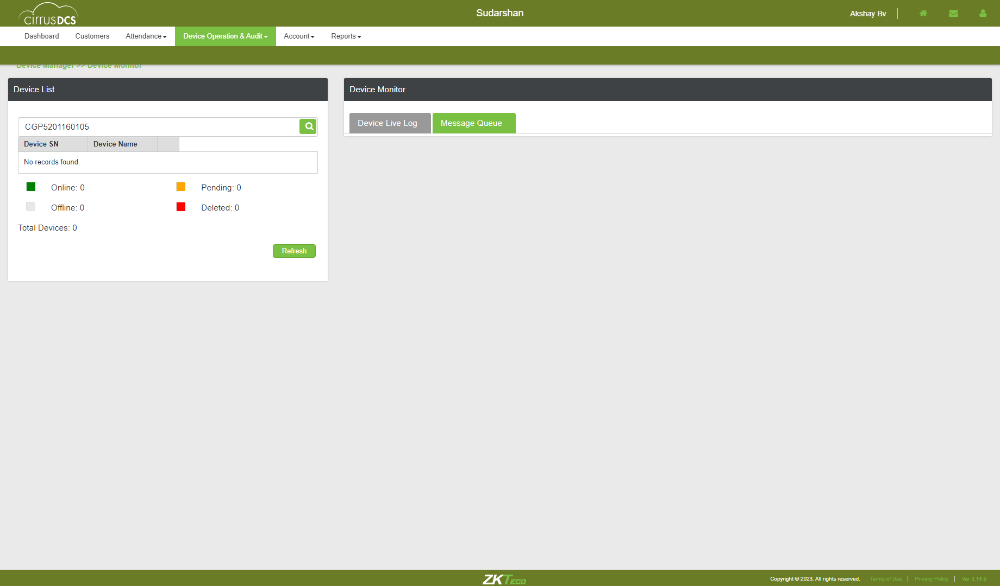TC_51: Verify whether Respective device details are getting auto populated, when device is selectedcom.zkteco.cirrusdcs.stepDefinitions.CirrusDCS.i_initialize_drivers_for_DCS_automation()Driver InitializedGiven I visit CirrusDCS TenantLogin pageGiven I am in SuperTenant host view home pageWhen I perform mousehower on Device operation & AuditAnd I click on Device Monitor sub moduleThen I enter devicesn into search field in hostThen I click on Search IconThen I select the searched deviceThen I click on Message Queue tabStep skippedThen I validate data auto autopopulation based on the selected device in device live log tabStep skippedcom.zkteco.cirrusdcs.stepDefinitions.CirrusDCS.teardown(io.cucumber.java.Scenario)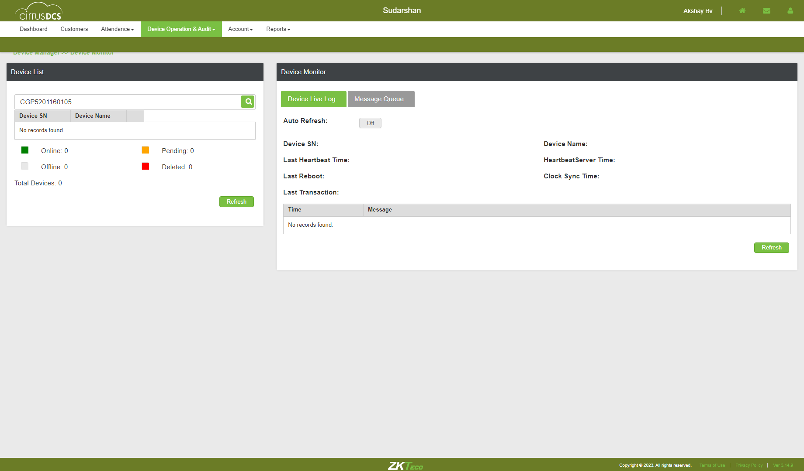TC_52: Verfiy whether user is able to access the Last forward button and verify that the list of the page is displaying accordinglycom.zkteco.cirrusdcs.stepDefinitions.CirrusDCS.i_initialize_drivers_for_DCS_automation()Driver InitializedGiven I visit CirrusDCS TenantLogin pageGiven I am in SuperTenant host view home pageWhen I perform mousehower on Device operation & AuditAnd I click on Device Monitor sub moduleThen I enter devicesn into search field in host for cleaning pending messages in queueStep undefinedThen I click on Search IconStep skippedThen I select the searched deviceStep skippedThen I click on Message Queue tabStep skippedThen I Click on the Last Forward Btn andLast Page is displayedStep skippedTC_53: Verfiy whether user is able to access the firstPage backward button and verify that the list of the page is displaying accordinglycom.zkteco.cirrusdcs.stepDefinitions.CirrusDCS.i_initialize_drivers_for_DCS_automation()Driver InitializedGiven I visit CirrusDCS TenantLogin pageGiven I am in SuperTenant host view home pageWhen I perform mousehower on Device operation & AuditAnd I click on Device Monitor sub moduleThen I enter devicesn into search field in hostThen I click on Search IconThen I select the searched deviceThen I click on Message Queue tabStep skippedThen I Click on the firstPage backward Btn and first Page is displayedStep skippedcom.zkteco.cirrusdcs.stepDefinitions.CirrusDCS.teardown(io.cucumber.java.Scenario)
TC_30: Verify whether user is able to resubmit the attendance logs to all clockscom.zkteco.cirrusdcs.stepDefinitions.CirrusDCS.i_initialize_drivers_for_DCS_automation()Driver InitializedGiven I visit CirrusDCS TenantLogin pageGiven I am in SuperTenant customer view home pageWhen I perform mousehower on Device managerAnd I click on Device Setup sub moduleThen I click on new device buttonThen I enter the details and add the deviceThen I click on Yes buttonThen I click on switch accountWhen I perform mousehower on Device operation & AuditAnd I click on Device Operations sub moduleThen I enter devicesn into search field in hostThen I click on Search IconThen I select the deviceThen I click on Send Att Resubmit to all clocksThen I click on Yes buttonThen I validate the success messageWhen I perform mousehower on Device operation & AuditStep skippedThen I click on device monitor submoduleStep skippedThen I validate the command is sent to device or notStep skippedcom.zkteco.cirrusdcs.stepDefinitions.CirrusDCS.teardown(io.cucumber.java.Scenario)TC_31: Verify whether user is able to navigate to device monitor pagecom.zkteco.cirrusdcs.stepDefinitions.CirrusDCS.i_initialize_drivers_for_DCS_automation()Driver InitializedGiven I visit CirrusDCS TenantLogin pageGiven I am in SuperTenant host view home pageWhen I perform mousehower on Device operation & AuditAnd I click on Device Monitor sub moduleThen I validate user navigation to device monitor pageTC_32: Verify whether user is able to view below mentioned sections in device operations pagecom.zkteco.cirrusdcs.stepDefinitions.CirrusDCS.i_initialize_drivers_for_DCS_automation()Driver InitializedGiven I visit CirrusDCS TenantLogin pageGiven I am in SuperTenant host view home pageWhen I perform mousehower on Device operation & AuditAnd I click on Device Monitor sub moduleThen I validate the sections present in the device monitor pageTC_33: Verify whether user is able to view below mentioned components and table in Device List Sectioncom.zkteco.cirrusdcs.stepDefinitions.CirrusDCS.i_initialize_drivers_for_DCS_automation()Driver InitializedGiven I visit CirrusDCS TenantLogin pageGiven I am in SuperTenant host view home pageWhen I perform mousehower on Device operation & AuditAnd I click on Device Monitor sub moduleThen I validate the components present in the device list sectionTC_34: Verify whether user is able to view the List of all devices, that are added irrespective of tenants in Device List Sectioncom.zkteco.cirrusdcs.stepDefinitions.CirrusDCS.i_initialize_drivers_for_DCS_automation()Driver InitializedGiven I visit CirrusDCS TenantLogin pageGiven I am in SuperTenant host view home pageWhen I perform mousehower on Device operation & AuditAnd I click on Device Monitor sub moduleThen I validate whether all the devices are presentTC_35: Verify whether user is able to view the List of all devices, that are added irrespective of tenants in Device List Sectioncom.zkteco.cirrusdcs.stepDefinitions.CirrusDCS.i_initialize_drivers_for_DCS_automation()Driver InitializedGiven I visit CirrusDCS TenantLogin pageGiven I am in SuperTenant host view home pageWhen I perform mousehower on Device operation & AuditAnd I click on Device Monitor sub moduleThen I validate whether all the devices are presentTC_36: Verify whether user is able to search the device based on tenant name search criteriacom.zkteco.cirrusdcs.stepDefinitions.CirrusDCS.i_initialize_drivers_for_DCS_automation()Driver InitializedGiven I visit CirrusDCS TenantLogin pageGiven I am in SuperTenant host view home pageWhen I perform mousehower on Device operation & AuditAnd I click on Device Monitor sub moduleThen I enter tenant name into search field for supertenant customerThen I click on Search IconThen I validate the search resultsTC_37: Verify whether user is able to search the device based on device sn search criteriacom.zkteco.cirrusdcs.stepDefinitions.CirrusDCS.i_initialize_drivers_for_DCS_automation()Driver InitializedGiven I visit CirrusDCS TenantLogin pageGiven I am in SuperTenant customer view home pageWhen I perform mousehower on Device managerAnd I click on Device Setup sub moduleThen I click on new device buttonThen I enter the details and add the deviceThen I click on Yes buttonThen I click on switch accountWhen I perform mousehower on Device operation & AuditAnd I click on Device Monitor sub moduleThen I enter devicesn into search field in hostThen I click on Search IconThen I validate the search resultsTC_38: Verify whether user is able to search the device based on device name search criteriacom.zkteco.cirrusdcs.stepDefinitions.CirrusDCS.i_initialize_drivers_for_DCS_automation()Driver InitializedGiven I visit CirrusDCS TenantLogin pageGiven I am in SuperTenant customer view home pageWhen I perform mousehower on Device managerAnd I click on Device Setup sub moduleThen I click on new device buttonThen I enter the details and add the deviceThen I click on Yes buttonThen I click on switch accountWhen I perform mousehower on Device operation & AuditAnd I click on Device Monitor sub moduleThen I enter devicename into search fieldThen I click on Search IconThen I validate the search resultsTC_39: Verify whether user is able to view the below mentioned columns, after searching the devicecom.zkteco.cirrusdcs.stepDefinitions.CirrusDCS.i_initialize_drivers_for_DCS_automation()Driver InitializedGiven I visit CirrusDCS TenantLogin pageGiven I am in SuperTenant host view home pageWhen I perform mousehower on Device operation & AuditAnd I click on Device Monitor sub moduleThen I enter devicename into search fieldThen I click on Search IconThen I validate columns after search resultsTC_40: Verify whether user is able to Filter the data for online device statuscom.zkteco.cirrusdcs.stepDefinitions.CirrusDCS.i_initialize_drivers_for_DCS_automation()Driver InitializedGiven I visit CirrusDCS TenantLogin pageGiven I am in SuperTenant host view home pageWhen I perform mousehower on Device operation & AuditAnd I click on Device Monitor sub moduleThen I click on online status check boxThen I click on Search IconThen I validate whether all the devices present based on the device statusTC_41: Verify whether user is able to Filter the data for offline device statuscom.zkteco.cirrusdcs.stepDefinitions.CirrusDCS.i_initialize_drivers_for_DCS_automation()Driver InitializedGiven I visit CirrusDCS TenantLogin pageGiven I am in SuperTenant host view home pageWhen I perform mousehower on Device operation & AuditAnd I click on Device Monitor sub moduleThen I click on pending status check boxThen I click on Search IconThen I validate whether all the devices present based on the device statusTC_42: Verify whether user is able to Filter the data for offline device statuscom.zkteco.cirrusdcs.stepDefinitions.CirrusDCS.i_initialize_drivers_for_DCS_automation()Driver InitializedGiven I visit CirrusDCS TenantLogin pageGiven I am in SuperTenant host view home pageWhen I perform mousehower on Device operation & AuditAnd I click on Device Monitor sub moduleThen I click on offline status check boxThen I click on Search IconThen I validate whether all the devices present based on the device statusTC_43: Verify whether user is able to Filter the data for deleted device statuscom.zkteco.cirrusdcs.stepDefinitions.CirrusDCS.i_initialize_drivers_for_DCS_automation()Driver InitializedGiven I visit CirrusDCS TenantLogin pageGiven I am in SuperTenant host view home pageWhen I perform mousehower on Device operation & AuditAnd I click on Device Monitor sub moduleThen I click on deleted status check boxThen I click on Search IconThen I validate whether all the devices present based on the device statusTC_44: Verify whether user is able to Filter the data for all device statuscom.zkteco.cirrusdcs.stepDefinitions.CirrusDCS.i_initialize_drivers_for_DCS_automation()Driver InitializedGiven I visit CirrusDCS TenantLogin pageGiven I am in SuperTenant host view home pageWhen I perform mousehower on Device operation & AuditAnd I click on Device Monitor sub moduleThen I click on all status check boxThen I click on Search IconThen I validate whether all the devices present based on all the device statusTC_45: Verify whether user is able to view below mentioned components and table Componentscom.zkteco.cirrusdcs.stepDefinitions.CirrusDCS.i_initialize_drivers_for_DCS_automation()Driver InitializedGiven I visit CirrusDCS TenantLogin pageGiven I am in SuperTenant host view home pageWhen I perform mousehower on Device operation & AuditAnd I click on Device Monitor sub moduleThen I validate the sections present in the device monitor pageTC_46: Verify whether user is able to view below mentioned components and table in Device Live Log tab Componentscom.zkteco.cirrusdcs.stepDefinitions.CirrusDCS.i_initialize_drivers_for_DCS_automation()Driver InitializedGiven I visit CirrusDCS TenantLogin pageGiven I am in SuperTenant host view home pageWhen I perform mousehower on Device operation & AuditAnd I click on Device Monitor sub moduleThen I validate the components present in the device live log tabTC_47: Verify whether Respective device details are getting auto populated, when device is selectedcom.zkteco.cirrusdcs.stepDefinitions.CirrusDCS.i_initialize_drivers_for_DCS_automation()Driver InitializedGiven I visit CirrusDCS TenantLogin pageGiven I am in SuperTenant host view home pageWhen I perform mousehower on Device operation & AuditAnd I click on Device Monitor sub moduleThen I enter devicesn into search field in hostThen I click on Search IconThen I validate data auto autopopulation based on the selected device in device live log tabTC_48: Verify whether user is able to Auto Refresh the Page, when Auto Refresh switch is oncom.zkteco.cirrusdcs.stepDefinitions.CirrusDCS.i_initialize_drivers_for_DCS_automation()Driver InitializedGiven I visit CirrusDCS TenantLogin pageGiven I am in SuperTenant host view home pageWhen I perform mousehower on Device operation & AuditAnd I click on Device Monitor sub moduleThen I enter devicesn into search field in hostThen I click on Search IconThen I verify auto refresh functionality is workingTC_49: Verify whether user is able to Refresh the Page, on click of Refresh buttoncom.zkteco.cirrusdcs.stepDefinitions.CirrusDCS.i_initialize_drivers_for_DCS_automation()Driver InitializedGiven I visit CirrusDCS TenantLogin pageGiven I am in SuperTenant host view home pageWhen I perform mousehower on Device operation & AuditAnd I click on Device Monitor sub moduleThen I enter devicesn into search field in hostThen I click on Search IconThen I click on Refresh button and I validate the page refreshTC_50: Verify whether user is able to view below mentioned components and table in Message Queue tab Componentscom.zkteco.cirrusdcs.stepDefinitions.CirrusDCS.i_initialize_drivers_for_DCS_automation()Driver InitializedGiven I visit CirrusDCS TenantLogin pageGiven I am in SuperTenant host view home pageWhen I perform mousehower on Device operation & AuditAnd I click on Device Monitor sub moduleThen I click on Message Queue tabThen I enter devicesn into search field in hostThen I click on Search IconThen I validate the components & columns present in the message queue tabcom.zkteco.cirrusdcs.stepDefinitions.CirrusDCS.teardown(io.cucumber.java.Scenario)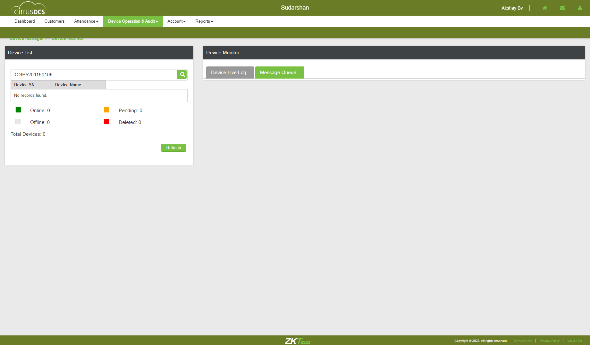TC_51: Verify whether Respective device details are getting auto populated, when device is selectedcom.zkteco.cirrusdcs.stepDefinitions.CirrusDCS.i_initialize_drivers_for_DCS_automation()Driver InitializedGiven I visit CirrusDCS TenantLogin pageGiven I am in SuperTenant host view home pageWhen I perform mousehower on Device operation & AuditAnd I click on Device Monitor sub moduleThen I enter devicesn into search field in hostThen I click on Search IconThen I select the searched deviceThen I click on Message Queue tabStep skippedThen I validate data auto autopopulation based on the selected device in device live log tabStep skippedcom.zkteco.cirrusdcs.stepDefinitions.CirrusDCS.teardown(io.cucumber.java.Scenario)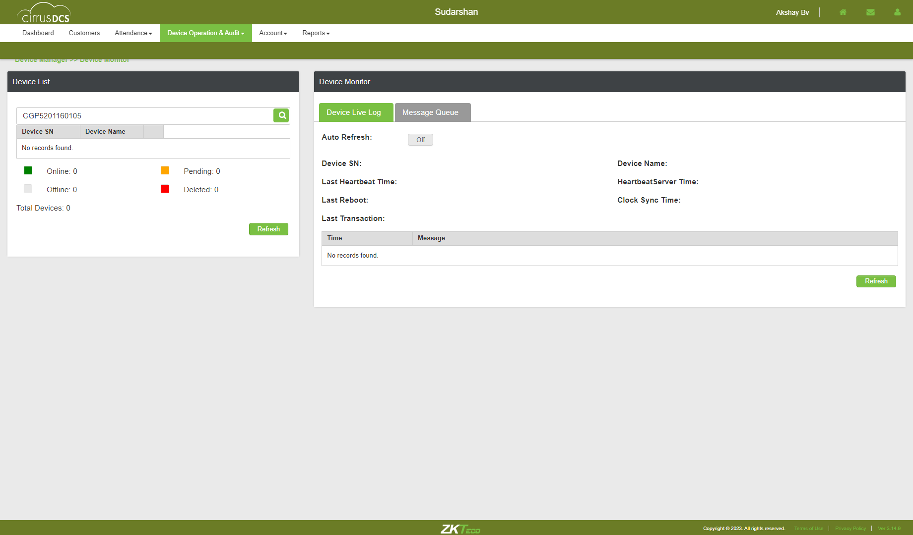TC_52: Verfiy whether user is able to access the Last forward button and verify that the list of the page is displaying accordinglycom.zkteco.cirrusdcs.stepDefinitions.CirrusDCS.i_initialize_drivers_for_DCS_automation()Driver InitializedGiven I visit CirrusDCS TenantLogin pageGiven I am in SuperTenant host view home pageWhen I perform mousehower on Device operation & AuditAnd I click on Device Monitor sub moduleThen I enter devicesn into search field in host for cleaning pending messages in queueStep undefinedThen I click on Search IconStep skippedThen I select the searched deviceStep skippedThen I click on Message Queue tabStep skippedThen I Click on the Last Forward Btn andLast Page is displayedStep skippedTC_53: Verfiy whether user is able to access the firstPage backward button and verify that the list of the page is displaying accordinglycom.zkteco.cirrusdcs.stepDefinitions.CirrusDCS.i_initialize_drivers_for_DCS_automation()Driver InitializedGiven I visit CirrusDCS TenantLogin pageGiven I am in SuperTenant host view home pageWhen I perform mousehower on Device operation & AuditAnd I click on Device Monitor sub moduleThen I enter devicesn into search field in hostThen I click on Search IconThen I select the searched deviceThen I click on Message Queue tabStep skippedThen I Click on the firstPage backward Btn and first Page is displayedStep skippedcom.zkteco.cirrusdcs.stepDefinitions.CirrusDCS.teardown(io.cucumber.java.Scenario) TC_54: Verfiy whether user is able to access the forward button and verify that the list of the page is displaying accordinglycom.zkteco.cirrusdcs.stepDefinitions.CirrusDCS.i_initialize_drivers_for_DCS_automation()Driver InitializedGiven I visit CirrusDCS TenantLogin pageGiven I am in SuperTenant host view home pageWhen I perform mousehower on Device operation & AuditAnd I click on Device Monitor sub moduleThen I enter devicesn into search field in hostThen I click on Search IconThen I select the searched deviceThen I click on Message Queue tabStep skippedThen I Click on the forward btn and pages displaying accordinglyStep skippedcom.zkteco.cirrusdcs.stepDefinitions.CirrusDCS.teardown(io.cucumber.java.Scenario)
TC_54: Verfiy whether user is able to access the forward button and verify that the list of the page is displaying accordinglycom.zkteco.cirrusdcs.stepDefinitions.CirrusDCS.i_initialize_drivers_for_DCS_automation()Driver InitializedGiven I visit CirrusDCS TenantLogin pageGiven I am in SuperTenant host view home pageWhen I perform mousehower on Device operation & AuditAnd I click on Device Monitor sub moduleThen I enter devicesn into search field in hostThen I click on Search IconThen I select the searched deviceThen I click on Message Queue tabStep skippedThen I Click on the forward btn and pages displaying accordinglyStep skippedcom.zkteco.cirrusdcs.stepDefinitions.CirrusDCS.teardown(io.cucumber.java.Scenario) TC_55: Verfiy whether user is able to access the backword button and verify that the list of the page is displaying accordinglycom.zkteco.cirrusdcs.stepDefinitions.CirrusDCS.i_initialize_drivers_for_DCS_automation()Driver InitializedGiven I visit CirrusDCS TenantLogin pageGiven I am in SuperTenant host view home pageWhen I perform mousehower on Device operation & AuditAnd I click on Device Monitor sub moduleThen I enter devicesn into search field in hostThen I click on Search IconThen I select the searched deviceThen I click on Message Queue tabStep skippedThen I Click on the backword btn and pages displaying accordinglyStep skippedcom.zkteco.cirrusdcs.stepDefinitions.CirrusDCS.teardown(io.cucumber.java.Scenario)
TC_55: Verfiy whether user is able to access the backword button and verify that the list of the page is displaying accordinglycom.zkteco.cirrusdcs.stepDefinitions.CirrusDCS.i_initialize_drivers_for_DCS_automation()Driver InitializedGiven I visit CirrusDCS TenantLogin pageGiven I am in SuperTenant host view home pageWhen I perform mousehower on Device operation & AuditAnd I click on Device Monitor sub moduleThen I enter devicesn into search field in hostThen I click on Search IconThen I select the searched deviceThen I click on Message Queue tabStep skippedThen I Click on the backword btn and pages displaying accordinglyStep skippedcom.zkteco.cirrusdcs.stepDefinitions.CirrusDCS.teardown(io.cucumber.java.Scenario) TC_56: Verify whether user is able to clean all the commands in the message queue page , on click of Clean Command buttoncom.zkteco.cirrusdcs.stepDefinitions.CirrusDCS.i_initialize_drivers_for_DCS_automation()Driver InitializedGiven I visit CirrusDCS TenantLogin pageGiven I am in SuperTenant host view home pageWhen I perform mousehower on Device operation & AuditAnd I click on Device Monitor sub moduleThen I enter devicesn into search field in hostThen I click on Search IconThen I select the searched deviceThen I click on Message Queue tabStep skippedThen I click on clean commands button and validate the resultsStep skippedcom.zkteco.cirrusdcs.stepDefinitions.CirrusDCS.teardown(io.cucumber.java.Scenario)
TC_56: Verify whether user is able to clean all the commands in the message queue page , on click of Clean Command buttoncom.zkteco.cirrusdcs.stepDefinitions.CirrusDCS.i_initialize_drivers_for_DCS_automation()Driver InitializedGiven I visit CirrusDCS TenantLogin pageGiven I am in SuperTenant host view home pageWhen I perform mousehower on Device operation & AuditAnd I click on Device Monitor sub moduleThen I enter devicesn into search field in hostThen I click on Search IconThen I select the searched deviceThen I click on Message Queue tabStep skippedThen I click on clean commands button and validate the resultsStep skippedcom.zkteco.cirrusdcs.stepDefinitions.CirrusDCS.teardown(io.cucumber.java.Scenario) TC_66: Verify whether user is able to navigate to Device exception and Audit pagecom.zkteco.cirrusdcs.stepDefinitions.CirrusDCS.i_initialize_drivers_for_DCS_automation()Driver InitializedGiven I visit CirrusDCS TenantLogin pageGiven I am in SuperTenant host view home pageWhen I perform mousehower on Device operation & AuditAnd I click on Device Exception and Audit sub moduleThen I validate user navigation to device exception and audit pageTC_67: Verify whether user is able to view the below mentioned componenetscom.zkteco.cirrusdcs.stepDefinitions.CirrusDCS.i_initialize_drivers_for_DCS_automation()Driver InitializedGiven I visit CirrusDCS TenantLogin pageGiven I am in SuperTenant host view home pageWhen I perform mousehower on Device operation & AuditAnd I click on Device Exception and Audit sub moduleThen I validate the components in device exception tabcom.zkteco.cirrusdcs.stepDefinitions.CirrusDCS.teardown(io.cucumber.java.Scenario)
TC_66: Verify whether user is able to navigate to Device exception and Audit pagecom.zkteco.cirrusdcs.stepDefinitions.CirrusDCS.i_initialize_drivers_for_DCS_automation()Driver InitializedGiven I visit CirrusDCS TenantLogin pageGiven I am in SuperTenant host view home pageWhen I perform mousehower on Device operation & AuditAnd I click on Device Exception and Audit sub moduleThen I validate user navigation to device exception and audit pageTC_67: Verify whether user is able to view the below mentioned componenetscom.zkteco.cirrusdcs.stepDefinitions.CirrusDCS.i_initialize_drivers_for_DCS_automation()Driver InitializedGiven I visit CirrusDCS TenantLogin pageGiven I am in SuperTenant host view home pageWhen I perform mousehower on Device operation & AuditAnd I click on Device Exception and Audit sub moduleThen I validate the components in device exception tabcom.zkteco.cirrusdcs.stepDefinitions.CirrusDCS.teardown(io.cucumber.java.Scenario) TC_68: Verify whether user is able to view the below mentioned columns and tablecom.zkteco.cirrusdcs.stepDefinitions.CirrusDCS.i_initialize_drivers_for_DCS_automation()Driver InitializedGiven I visit CirrusDCS TenantLogin pageGiven I am in SuperTenant host view home pageWhen I perform mousehower on Device operation & AuditAnd I click on Device Exception and Audit sub moduleThen I validate the table columns and tableTC_69: Verify whether user is able to Filter the data as per the search criteriacom.zkteco.cirrusdcs.stepDefinitions.CirrusDCS.i_initialize_drivers_for_DCS_automation()Driver InitializedGiven I visit CirrusDCS TenantLogin pageGiven I am in SuperTenant host view home pageWhen I perform mousehower on Device operation & AuditAnd I click on Device Exception and Audit sub moduleThen I enter all the details for searching in deviceexception tabThen I click on Search buttonStep skippedcom.zkteco.cirrusdcs.stepDefinitions.CirrusDCS.teardown(io.cucumber.java.Scenario)
TC_68: Verify whether user is able to view the below mentioned columns and tablecom.zkteco.cirrusdcs.stepDefinitions.CirrusDCS.i_initialize_drivers_for_DCS_automation()Driver InitializedGiven I visit CirrusDCS TenantLogin pageGiven I am in SuperTenant host view home pageWhen I perform mousehower on Device operation & AuditAnd I click on Device Exception and Audit sub moduleThen I validate the table columns and tableTC_69: Verify whether user is able to Filter the data as per the search criteriacom.zkteco.cirrusdcs.stepDefinitions.CirrusDCS.i_initialize_drivers_for_DCS_automation()Driver InitializedGiven I visit CirrusDCS TenantLogin pageGiven I am in SuperTenant host view home pageWhen I perform mousehower on Device operation & AuditAnd I click on Device Exception and Audit sub moduleThen I enter all the details for searching in deviceexception tabThen I click on Search buttonStep skippedcom.zkteco.cirrusdcs.stepDefinitions.CirrusDCS.teardown(io.cucumber.java.Scenario) TC_70: Verify whether user is able to Filter the data as per the search criteriacom.zkteco.cirrusdcs.stepDefinitions.CirrusDCS.i_initialize_drivers_for_DCS_automation()Driver InitializedGiven I visit CirrusDCS TenantLogin pageGiven I am in SuperTenant host view home pageWhen I perform mousehower on Device operation & AuditAnd I click on Device Exception and Audit sub moduleThen I enter all the details for searching in deviceexception tabThen I click on Search buttonStep skippedThen I click on Export as CSV buttonStep skippedThen I validate the downloaded file for csvStep skippedcom.zkteco.cirrusdcs.stepDefinitions.CirrusDCS.teardown(io.cucumber.java.Scenario)
TC_70: Verify whether user is able to Filter the data as per the search criteriacom.zkteco.cirrusdcs.stepDefinitions.CirrusDCS.i_initialize_drivers_for_DCS_automation()Driver InitializedGiven I visit CirrusDCS TenantLogin pageGiven I am in SuperTenant host view home pageWhen I perform mousehower on Device operation & AuditAnd I click on Device Exception and Audit sub moduleThen I enter all the details for searching in deviceexception tabThen I click on Search buttonStep skippedThen I click on Export as CSV buttonStep skippedThen I validate the downloaded file for csvStep skippedcom.zkteco.cirrusdcs.stepDefinitions.CirrusDCS.teardown(io.cucumber.java.Scenario) TC_71: Verify whether user is able to Filter the data as per the search criteriacom.zkteco.cirrusdcs.stepDefinitions.CirrusDCS.i_initialize_drivers_for_DCS_automation()Driver InitializedGiven I visit CirrusDCS TenantLogin pageGiven I am in SuperTenant host view home pageWhen I perform mousehower on Device operation & AuditAnd I click on Device Exception and Audit sub moduleThen I enter all the details for searching in deviceexception tabThen I click on Search buttonStep skippedThen I click on Export as PDF buttonStep skippedThen I validate the downloaded file for pdfStep skippedcom.zkteco.cirrusdcs.stepDefinitions.CirrusDCS.teardown(io.cucumber.java.Scenario)
TC_71: Verify whether user is able to Filter the data as per the search criteriacom.zkteco.cirrusdcs.stepDefinitions.CirrusDCS.i_initialize_drivers_for_DCS_automation()Driver InitializedGiven I visit CirrusDCS TenantLogin pageGiven I am in SuperTenant host view home pageWhen I perform mousehower on Device operation & AuditAnd I click on Device Exception and Audit sub moduleThen I enter all the details for searching in deviceexception tabThen I click on Search buttonStep skippedThen I click on Export as PDF buttonStep skippedThen I validate the downloaded file for pdfStep skippedcom.zkteco.cirrusdcs.stepDefinitions.CirrusDCS.teardown(io.cucumber.java.Scenario) TC_72: Verify whether user is able to Filter the data as per the search criteriacom.zkteco.cirrusdcs.stepDefinitions.CirrusDCS.i_initialize_drivers_for_DCS_automation()Driver InitializedGiven I visit CirrusDCS TenantLogin pageGiven I am in SuperTenant host view home pageWhen I perform mousehower on Device operation & AuditAnd I click on Device Exception and Audit sub moduleThen I enter all the details for searching in deviceexception tabThen I click on Search buttonStep skippedThen I click on Export as Excel buttonStep skippedThen I validate the downloaded file for excelStep skippedcom.zkteco.cirrusdcs.stepDefinitions.CirrusDCS.teardown(io.cucumber.java.Scenario)
TC_72: Verify whether user is able to Filter the data as per the search criteriacom.zkteco.cirrusdcs.stepDefinitions.CirrusDCS.i_initialize_drivers_for_DCS_automation()Driver InitializedGiven I visit CirrusDCS TenantLogin pageGiven I am in SuperTenant host view home pageWhen I perform mousehower on Device operation & AuditAnd I click on Device Exception and Audit sub moduleThen I enter all the details for searching in deviceexception tabThen I click on Search buttonStep skippedThen I click on Export as Excel buttonStep skippedThen I validate the downloaded file for excelStep skippedcom.zkteco.cirrusdcs.stepDefinitions.CirrusDCS.teardown(io.cucumber.java.Scenario) TC_73: Verify whether user is able to view the below mentioned componenetscom.zkteco.cirrusdcs.stepDefinitions.CirrusDCS.i_initialize_drivers_for_DCS_automation()Driver InitializedGiven I visit CirrusDCS TenantLogin pageGiven I am in SuperTenant host view home pageWhen I perform mousehower on Device operation & AuditAnd I click on Device Exception and Audit sub moduleThen I click on Device Audit tabThen I validate the components in device audit tabStep skippedcom.zkteco.cirrusdcs.stepDefinitions.CirrusDCS.teardown(io.cucumber.java.Scenario)
TC_73: Verify whether user is able to view the below mentioned componenetscom.zkteco.cirrusdcs.stepDefinitions.CirrusDCS.i_initialize_drivers_for_DCS_automation()Driver InitializedGiven I visit CirrusDCS TenantLogin pageGiven I am in SuperTenant host view home pageWhen I perform mousehower on Device operation & AuditAnd I click on Device Exception and Audit sub moduleThen I click on Device Audit tabThen I validate the components in device audit tabStep skippedcom.zkteco.cirrusdcs.stepDefinitions.CirrusDCS.teardown(io.cucumber.java.Scenario) TC_74: Verify whether user is able to Filter the data as per the search criteriacom.zkteco.cirrusdcs.stepDefinitions.CirrusDCS.i_initialize_drivers_for_DCS_automation()Driver InitializedGiven I visit CirrusDCS TenantLogin pageGiven I am in SuperTenant host view home pageWhen I perform mousehower on Device operation & AuditAnd I click on Device Exception and Audit sub moduleThen I click on Device Audit tabThen I enter all the details for searching in deviceaudit tabStep skippedThen I click on Search buttonStep skippedThen I validate the search results in deviceaudittableStep skippedcom.zkteco.cirrusdcs.stepDefinitions.CirrusDCS.teardown(io.cucumber.java.Scenario)
TC_74: Verify whether user is able to Filter the data as per the search criteriacom.zkteco.cirrusdcs.stepDefinitions.CirrusDCS.i_initialize_drivers_for_DCS_automation()Driver InitializedGiven I visit CirrusDCS TenantLogin pageGiven I am in SuperTenant host view home pageWhen I perform mousehower on Device operation & AuditAnd I click on Device Exception and Audit sub moduleThen I click on Device Audit tabThen I enter all the details for searching in deviceaudit tabStep skippedThen I click on Search buttonStep skippedThen I validate the search results in deviceaudittableStep skippedcom.zkteco.cirrusdcs.stepDefinitions.CirrusDCS.teardown(io.cucumber.java.Scenario) TC_75: Verify whether user is able to Filter the data as per the search criteriacom.zkteco.cirrusdcs.stepDefinitions.CirrusDCS.i_initialize_drivers_for_DCS_automation()Driver InitializedGiven I visit CirrusDCS TenantLogin pageGiven I am in SuperTenant host view home pageWhen I perform mousehower on Device operation & AuditAnd I click on Device Exception and Audit sub moduleThen I click on Device Audit tabThen I enter all the details for searching in deviceaudit tabStep skippedThen I click on Search buttonStep skippedThen I click on Export as CSV buttonStep skippedThen I validate the downloaded file for csv in deviceaudit pageStep skippedcom.zkteco.cirrusdcs.stepDefinitions.CirrusDCS.teardown(io.cucumber.java.Scenario)
TC_75: Verify whether user is able to Filter the data as per the search criteriacom.zkteco.cirrusdcs.stepDefinitions.CirrusDCS.i_initialize_drivers_for_DCS_automation()Driver InitializedGiven I visit CirrusDCS TenantLogin pageGiven I am in SuperTenant host view home pageWhen I perform mousehower on Device operation & AuditAnd I click on Device Exception and Audit sub moduleThen I click on Device Audit tabThen I enter all the details for searching in deviceaudit tabStep skippedThen I click on Search buttonStep skippedThen I click on Export as CSV buttonStep skippedThen I validate the downloaded file for csv in deviceaudit pageStep skippedcom.zkteco.cirrusdcs.stepDefinitions.CirrusDCS.teardown(io.cucumber.java.Scenario) TC_76: Verify whether user is able to Filter the data as per the search criteriacom.zkteco.cirrusdcs.stepDefinitions.CirrusDCS.i_initialize_drivers_for_DCS_automation()Driver InitializedGiven I visit CirrusDCS TenantLogin pageGiven I am in SuperTenant host view home pageWhen I perform mousehower on Device operation & AuditAnd I click on Device Exception and Audit sub moduleThen I click on Device Audit tabThen I enter all the details for searching in deviceaudit tabStep skippedThen I click on Search buttonStep skippedThen I click on Export as PDF buttonStep skippedThen I validate the downloaded file for pdf in deviceaudit pageStep skippedcom.zkteco.cirrusdcs.stepDefinitions.CirrusDCS.teardown(io.cucumber.java.Scenario)
TC_76: Verify whether user is able to Filter the data as per the search criteriacom.zkteco.cirrusdcs.stepDefinitions.CirrusDCS.i_initialize_drivers_for_DCS_automation()Driver InitializedGiven I visit CirrusDCS TenantLogin pageGiven I am in SuperTenant host view home pageWhen I perform mousehower on Device operation & AuditAnd I click on Device Exception and Audit sub moduleThen I click on Device Audit tabThen I enter all the details for searching in deviceaudit tabStep skippedThen I click on Search buttonStep skippedThen I click on Export as PDF buttonStep skippedThen I validate the downloaded file for pdf in deviceaudit pageStep skippedcom.zkteco.cirrusdcs.stepDefinitions.CirrusDCS.teardown(io.cucumber.java.Scenario) TC_77: Verify whether user is able to Filter the data as per the search criteriacom.zkteco.cirrusdcs.stepDefinitions.CirrusDCS.i_initialize_drivers_for_DCS_automation()Driver InitializedGiven I visit CirrusDCS TenantLogin pageGiven I am in SuperTenant host view home pageWhen I perform mousehower on Device operation & AuditAnd I click on Device Exception and Audit sub moduleThen I click on Device Audit tabThen I enter all the details for searching in deviceaudit tabStep skippedThen I click on Search buttonStep skippedThen I click on Export as Excel buttonStep skippedThen I validate the downloaded file for excel in deviceaudit pageStep skippedcom.zkteco.cirrusdcs.stepDefinitions.CirrusDCS.teardown(io.cucumber.java.Scenario)
TC_77: Verify whether user is able to Filter the data as per the search criteriacom.zkteco.cirrusdcs.stepDefinitions.CirrusDCS.i_initialize_drivers_for_DCS_automation()Driver InitializedGiven I visit CirrusDCS TenantLogin pageGiven I am in SuperTenant host view home pageWhen I perform mousehower on Device operation & AuditAnd I click on Device Exception and Audit sub moduleThen I click on Device Audit tabThen I enter all the details for searching in deviceaudit tabStep skippedThen I click on Search buttonStep skippedThen I click on Export as Excel buttonStep skippedThen I validate the downloaded file for excel in deviceaudit pageStep skippedcom.zkteco.cirrusdcs.stepDefinitions.CirrusDCS.teardown(io.cucumber.java.Scenario) TC_78: Verify whether user is able to view the audit data in the device audit page, for the any operations performed in the applicationcom.zkteco.cirrusdcs.stepDefinitions.CirrusDCS.i_initialize_drivers_for_DCS_automation()Driver InitializedGiven I visit CirrusDCS TenantLogin pageGiven I am in SuperTenant host view home pageWhen I perform mousehower on Device operation & AuditAnd I click on Device Operations sub moduleThen I enter devicesn into search field in hostThen I click on Search IconThen I select the deviceThen I click on move device buttonThen I move the device to other tenantWhen I perform mousehower on Device operation & AuditAnd I click on Device Exception and Audit sub moduleThen I click on Device Audit tabThen I enter all the details for searching in deviceaudit tabStep skippedThen I click on Search buttonStep skippedThen I validate the search results in deviceaudittable after performing any operationStep skippedcom.zkteco.cirrusdcs.stepDefinitions.CirrusDCS.teardown(io.cucumber.java.Scenario)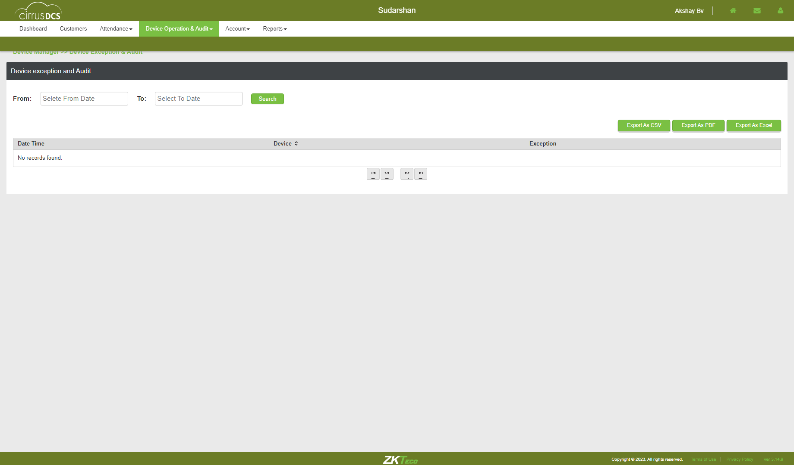TC_79: Verify whether user is able to navigate to Device Report pagecom.zkteco.cirrusdcs.stepDefinitions.CirrusDCS.i_initialize_drivers_for_DCS_automation()Driver InitializedGiven I visit CirrusDCS TenantLogin pageGiven I am in SuperTenant host view home pageWhen I perform mousehower on Reports in SuperTenantAnd I click on Device Report in supertenant moduleThen I validate user navigation to device report supertenant pageTC_80: Verify whether user is able to view below mentioned sections in device Report pagecom.zkteco.cirrusdcs.stepDefinitions.CirrusDCS.i_initialize_drivers_for_DCS_automation()Driver InitializedGiven I visit CirrusDCS TenantLogin pageGiven I am in SuperTenant host view home pageWhen I perform mousehower on Reports in SuperTenantAnd I click on Device Report in supertenant moduleThen I validate the sections present in the device report pageTC_81: Verify whether user is able to view below mentioned components in device reports sectioncom.zkteco.cirrusdcs.stepDefinitions.CirrusDCS.i_initialize_drivers_for_DCS_automation()Driver InitializedGiven I visit CirrusDCS TenantLogin pageGiven I am in SuperTenant host view home pageWhen I perform mousehower on Reports in SuperTenantAnd I click on Device Report in supertenant moduleThen I validate the components in device reports page sectionTC_82: Verify whether user is able to view below mentioned components in device report sectioncom.zkteco.cirrusdcs.stepDefinitions.CirrusDCS.i_initialize_drivers_for_DCS_automation()Driver InitializedGiven I visit CirrusDCS TenantLogin pageGiven I am in SuperTenant host view home pageWhen I perform mousehower on Reports in SuperTenantAnd I click on Device Report in supertenant moduleThen I validate the components in device report page sectionTC_83: Verify whether user is able to view below mentioned components in device report sectioncom.zkteco.cirrusdcs.stepDefinitions.CirrusDCS.i_initialize_drivers_for_DCS_automation()Driver InitializedGiven I visit CirrusDCS TenantLogin pageGiven I am in SuperTenant host view home pageWhen I perform mousehower on Reports in SuperTenantAnd I click on Device Report in supertenant moduleThen I validate the table columnsTC_84: Verify whether user is able to filter the data by clientcom.zkteco.cirrusdcs.stepDefinitions.CirrusDCS.i_initialize_drivers_for_DCS_automation()Driver InitializedGiven I visit CirrusDCS TenantLogin pageGiven I am in SuperTenant host view home pageWhen I perform mousehower on Reports in SuperTenantAnd I click on Device Report in supertenant moduleThen I filter the data by client in supertenantThen I click on submit buttonThen I validate the search results in reports based on customer nameTC_85: Verify whether user is able to filter the data by Device Sncom.zkteco.cirrusdcs.stepDefinitions.CirrusDCS.i_initialize_drivers_for_DCS_automation()Driver InitializedGiven I visit CirrusDCS TenantLogin pageGiven I am in SuperTenant customer view home pageWhen I perform mousehower on Device managerAnd I click on Device Setup sub moduleThen I click on new device buttonThen I enter the details and add the deviceThen I click on Yes buttonThen I click on switch accountWhen I perform mousehower on Reports in SuperTenantAnd I click on Device Report in supertenant moduleThen I enter devicesn for filtering in reportsThen I click on submit buttonThen I validate the search results in reports for device snsuccessful through device snTC_86: Verify whether user is able to filter the data by Device namecom.zkteco.cirrusdcs.stepDefinitions.CirrusDCS.i_initialize_drivers_for_DCS_automation()Driver InitializedGiven I visit CirrusDCS TenantLogin pageGiven I am in SuperTenant customer view home pageWhen I perform mousehower on Device managerAnd I click on Device Setup sub moduleThen I click on new device buttonThen I enter the details and add the deviceThen I click on Yes buttonThen I click on switch accountWhen I perform mousehower on Reports in SuperTenantAnd I click on Device Report in supertenant moduleThen I enter devicename for filtering in reportsThen I click on submit buttonThen I validate the search results in reports for device nameTC_87: Verify whether user is able to filter the data by locationcom.zkteco.cirrusdcs.stepDefinitions.CirrusDCS.i_initialize_drivers_for_DCS_automation()Driver InitializedGiven I visit CirrusDCS TenantLogin pageGiven I am in SuperTenant host view home pageWhen I perform mousehower on Reports in SuperTenantAnd I click on Device Report in supertenant moduleThen I filter the data by client in supertenantThen I enter location for filtering in reportsThen I click on submit buttonThen I validate the search results in reports for locationTC_88: Verify whether user is able to filter the data by device groupcom.zkteco.cirrusdcs.stepDefinitions.CirrusDCS.i_initialize_drivers_for_DCS_automation()Driver InitializedGiven I visit CirrusDCS TenantLogin pageGiven I am in SuperTenant host view home pageWhen I perform mousehower on Reports in SuperTenantAnd I click on Device Report in supertenant moduleThen I filter the data by client in supertenantThen I enter group name for filtering in reportsThen I click on submit buttonThen I validate the search results in reports for devicegroupsuccessful through device snTC_89: Verify whether user is able to filter the data by Device Platformcom.zkteco.cirrusdcs.stepDefinitions.CirrusDCS.i_initialize_drivers_for_DCS_automation()Driver InitializedGiven I visit CirrusDCS TenantLogin pageGiven I am in SuperTenant host view home pageWhen I perform mousehower on Reports in SuperTenantAnd I click on Device Report in supertenant moduleThen I filter the data by client in supertenantThen I enter device platformThen I click on submit buttonThen I validate the search results in reports for platformsuccessful through device snTC_90: Verify whether user is able to filter online devicescom.zkteco.cirrusdcs.stepDefinitions.CirrusDCS.i_initialize_drivers_for_DCS_automation()Driver InitializedGiven I visit CirrusDCS TenantLogin pageGiven I am in SuperTenant host view home pageWhen I perform mousehower on Reports in SuperTenantAnd I click on Device Report in supertenant moduleThen I filter the data by client in supertenantThen I click on online status check boxThen I click on submit buttonThen I validate the search results for device statusTC_91: Verify whether user is able to filter offline devicescom.zkteco.cirrusdcs.stepDefinitions.CirrusDCS.i_initialize_drivers_for_DCS_automation()Driver InitializedGiven I visit CirrusDCS TenantLogin pageGiven I am in SuperTenant host view home pageWhen I perform mousehower on Reports in SuperTenantAnd I click on Device Report in supertenant moduleThen I filter the data by client in supertenantThen I click on offline status check box in reportsThen I click on submit buttonThen I validate the search results for device statusTC_92: Verify whether user is able to filter pending devicescom.zkteco.cirrusdcs.stepDefinitions.CirrusDCS.i_initialize_drivers_for_DCS_automation()Driver InitializedGiven I visit CirrusDCS TenantLogin pageGiven I am in SuperTenant host view home pageWhen I perform mousehower on Reports in SuperTenantAnd I click on Device Report in supertenant moduleThen I filter the data by client in supertenantThen I click on pending status check box in reportsThen I click on submit buttonThen I validate the search results for device statusTC_93: Verify whether user is able to filter delete devicescom.zkteco.cirrusdcs.stepDefinitions.CirrusDCS.i_initialize_drivers_for_DCS_automation()Driver InitializedGiven I visit CirrusDCS TenantLogin pageGiven I am in SuperTenant host view home pageWhen I perform mousehower on Reports in SuperTenantAnd I click on Device Report in supertenant moduleThen I filter the data by client in supertenantThen I click on deleted status check boxThen I click on submit buttonThen I validate the search results for device statusTC_94: Verify whether user is able to filter the data by all the Report types Storagecom.zkteco.cirrusdcs.stepDefinitions.CirrusDCS.i_initialize_drivers_for_DCS_automation()Driver InitializedGiven I visit CirrusDCS TenantLogin pageGiven I am in SuperTenant host view home pageWhen I perform mousehower on Reports in SuperTenantAnd I click on Device Report in supertenant moduleThen I filter the data by client in supertenantThen I click on storage status check boxThen I click on submit buttonThen I validate the storage filtersuccessful through device snTC_95: Verify whether user is able to filter the data by all the Report types networkcom.zkteco.cirrusdcs.stepDefinitions.CirrusDCS.i_initialize_drivers_for_DCS_automation()Driver InitializedGiven I visit CirrusDCS TenantLogin pageGiven I am in SuperTenant host view home pageWhen I perform mousehower on Reports in SuperTenantAnd I click on Device Report in supertenant moduleThen I filter the data by client in supertenantThen I click on network status check boxThen I click on submit buttonThen I validate the network filterTC_96: Verify whether user is able to filter the data by all the Report types hardwarecom.zkteco.cirrusdcs.stepDefinitions.CirrusDCS.i_initialize_drivers_for_DCS_automation()Driver InitializedGiven I visit CirrusDCS TenantLogin pageGiven I am in SuperTenant host view home pageWhen I perform mousehower on Reports in SuperTenantAnd I click on Device Report in supertenant moduleThen I filter the data by client in supertenantThen I click on hardware status check boxThen I click on submit buttonThen I validate the hardware filtersuccessful through device snTC_97: Verify whether user is able to Reset all the fieldscom.zkteco.cirrusdcs.stepDefinitions.CirrusDCS.i_initialize_drivers_for_DCS_automation()Driver InitializedGiven I visit CirrusDCS TenantLogin pageGiven I am in SuperTenant host view home pageWhen I perform mousehower on Reports in SuperTenantAnd I click on Device Report in supertenant moduleThen I filter the data by client in supertenantThen I enter all filters in reportThen I click on Reset buttonTC_98: Verify whether user is able filter the report by filling all fieldscom.zkteco.cirrusdcs.stepDefinitions.CirrusDCS.i_initialize_drivers_for_DCS_automation()Driver InitializedGiven I visit CirrusDCS TenantLogin pageGiven I am in SuperTenant host view home pageWhen I perform mousehower on Reports in SuperTenantAnd I click on Device Report in supertenant moduleThen I filter the data by client in supertenantThen I enter all filters in reportThen I click on submit buttonThen I validate all the filter results in device reportsuccessful through device snTC_99: Verify whether user is able to Export the data in csv file formatcom.zkteco.cirrusdcs.stepDefinitions.CirrusDCS.i_initialize_drivers_for_DCS_automation()Driver InitializedGiven I visit CirrusDCS TenantLogin pageGiven I am in SuperTenant host view home pageWhen I perform mousehower on Reports in SuperTenantAnd I click on Device Report in supertenant moduleThen I filter the data by client in supertenantThen I enter all filters in reportThen I click on submit buttonThen I click on export as csv button in device reportThen I validate the downloaded file for csv in device reportTC_100: Verify whether user is able to Export the data in pdf file formatcom.zkteco.cirrusdcs.stepDefinitions.CirrusDCS.i_initialize_drivers_for_DCS_automation()Driver InitializedGiven I visit CirrusDCS TenantLogin pageGiven I am in SuperTenant host view home pageWhen I perform mousehower on Reports in SuperTenantAnd I click on Device Report in supertenant moduleThen I filter the data by client in supertenantThen I enter all filters in reportThen I click on submit buttonThen I click on export as pdf button in device reportThen I click on Yes buttonThen I validate the downloaded file for pdf in device reportTC_101: Verify whether user is able to Export the data in excel file formatcom.zkteco.cirrusdcs.stepDefinitions.CirrusDCS.i_initialize_drivers_for_DCS_automation()Driver InitializedGiven I visit CirrusDCS TenantLogin pageGiven I am in SuperTenant host view home pageWhen I perform mousehower on Reports in SuperTenantAnd I click on Device Report in supertenant moduleThen I filter the data by client in supertenantThen I enter all filters in reportThen I click on submit buttonThen I click on export as excel button in device reportThen I validate the downloaded file for excel in device reportTC_102: Verify whether user is able to filter the data with invalid search criteriacom.zkteco.cirrusdcs.stepDefinitions.CirrusDCS.i_initialize_drivers_for_DCS_automation()Driver InitializedGiven I visit CirrusDCS TenantLogin pageGiven I am in SuperTenant host view home pageWhen I perform mousehower on Reports in SuperTenantAnd I click on Device Report in supertenant moduleThen I filter the data by client in supertenantThen I enter invalid data in filters in reportThen I click on submit buttonThen I validate invalid filter results
TC_78: Verify whether user is able to view the audit data in the device audit page, for the any operations performed in the applicationcom.zkteco.cirrusdcs.stepDefinitions.CirrusDCS.i_initialize_drivers_for_DCS_automation()Driver InitializedGiven I visit CirrusDCS TenantLogin pageGiven I am in SuperTenant host view home pageWhen I perform mousehower on Device operation & AuditAnd I click on Device Operations sub moduleThen I enter devicesn into search field in hostThen I click on Search IconThen I select the deviceThen I click on move device buttonThen I move the device to other tenantWhen I perform mousehower on Device operation & AuditAnd I click on Device Exception and Audit sub moduleThen I click on Device Audit tabThen I enter all the details for searching in deviceaudit tabStep skippedThen I click on Search buttonStep skippedThen I validate the search results in deviceaudittable after performing any operationStep skippedcom.zkteco.cirrusdcs.stepDefinitions.CirrusDCS.teardown(io.cucumber.java.Scenario)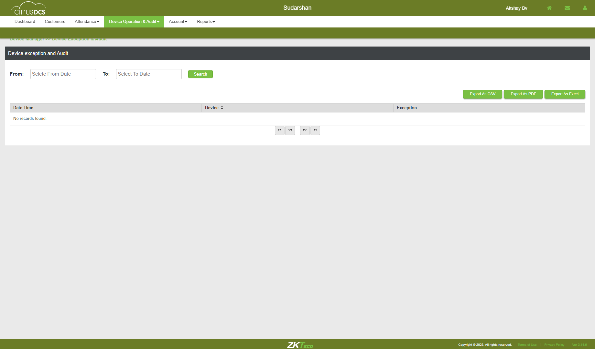TC_79: Verify whether user is able to navigate to Device Report pagecom.zkteco.cirrusdcs.stepDefinitions.CirrusDCS.i_initialize_drivers_for_DCS_automation()Driver InitializedGiven I visit CirrusDCS TenantLogin pageGiven I am in SuperTenant host view home pageWhen I perform mousehower on Reports in SuperTenantAnd I click on Device Report in supertenant moduleThen I validate user navigation to device report supertenant pageTC_80: Verify whether user is able to view below mentioned sections in device Report pagecom.zkteco.cirrusdcs.stepDefinitions.CirrusDCS.i_initialize_drivers_for_DCS_automation()Driver InitializedGiven I visit CirrusDCS TenantLogin pageGiven I am in SuperTenant host view home pageWhen I perform mousehower on Reports in SuperTenantAnd I click on Device Report in supertenant moduleThen I validate the sections present in the device report pageTC_81: Verify whether user is able to view below mentioned components in device reports sectioncom.zkteco.cirrusdcs.stepDefinitions.CirrusDCS.i_initialize_drivers_for_DCS_automation()Driver InitializedGiven I visit CirrusDCS TenantLogin pageGiven I am in SuperTenant host view home pageWhen I perform mousehower on Reports in SuperTenantAnd I click on Device Report in supertenant moduleThen I validate the components in device reports page sectionTC_82: Verify whether user is able to view below mentioned components in device report sectioncom.zkteco.cirrusdcs.stepDefinitions.CirrusDCS.i_initialize_drivers_for_DCS_automation()Driver InitializedGiven I visit CirrusDCS TenantLogin pageGiven I am in SuperTenant host view home pageWhen I perform mousehower on Reports in SuperTenantAnd I click on Device Report in supertenant moduleThen I validate the components in device report page sectionTC_83: Verify whether user is able to view below mentioned components in device report sectioncom.zkteco.cirrusdcs.stepDefinitions.CirrusDCS.i_initialize_drivers_for_DCS_automation()Driver InitializedGiven I visit CirrusDCS TenantLogin pageGiven I am in SuperTenant host view home pageWhen I perform mousehower on Reports in SuperTenantAnd I click on Device Report in supertenant moduleThen I validate the table columnsTC_84: Verify whether user is able to filter the data by clientcom.zkteco.cirrusdcs.stepDefinitions.CirrusDCS.i_initialize_drivers_for_DCS_automation()Driver InitializedGiven I visit CirrusDCS TenantLogin pageGiven I am in SuperTenant host view home pageWhen I perform mousehower on Reports in SuperTenantAnd I click on Device Report in supertenant moduleThen I filter the data by client in supertenantThen I click on submit buttonThen I validate the search results in reports based on customer nameTC_85: Verify whether user is able to filter the data by Device Sncom.zkteco.cirrusdcs.stepDefinitions.CirrusDCS.i_initialize_drivers_for_DCS_automation()Driver InitializedGiven I visit CirrusDCS TenantLogin pageGiven I am in SuperTenant customer view home pageWhen I perform mousehower on Device managerAnd I click on Device Setup sub moduleThen I click on new device buttonThen I enter the details and add the deviceThen I click on Yes buttonThen I click on switch accountWhen I perform mousehower on Reports in SuperTenantAnd I click on Device Report in supertenant moduleThen I enter devicesn for filtering in reportsThen I click on submit buttonThen I validate the search results in reports for device snsuccessful through device snTC_86: Verify whether user is able to filter the data by Device namecom.zkteco.cirrusdcs.stepDefinitions.CirrusDCS.i_initialize_drivers_for_DCS_automation()Driver InitializedGiven I visit CirrusDCS TenantLogin pageGiven I am in SuperTenant customer view home pageWhen I perform mousehower on Device managerAnd I click on Device Setup sub moduleThen I click on new device buttonThen I enter the details and add the deviceThen I click on Yes buttonThen I click on switch accountWhen I perform mousehower on Reports in SuperTenantAnd I click on Device Report in supertenant moduleThen I enter devicename for filtering in reportsThen I click on submit buttonThen I validate the search results in reports for device nameTC_87: Verify whether user is able to filter the data by locationcom.zkteco.cirrusdcs.stepDefinitions.CirrusDCS.i_initialize_drivers_for_DCS_automation()Driver InitializedGiven I visit CirrusDCS TenantLogin pageGiven I am in SuperTenant host view home pageWhen I perform mousehower on Reports in SuperTenantAnd I click on Device Report in supertenant moduleThen I filter the data by client in supertenantThen I enter location for filtering in reportsThen I click on submit buttonThen I validate the search results in reports for locationTC_88: Verify whether user is able to filter the data by device groupcom.zkteco.cirrusdcs.stepDefinitions.CirrusDCS.i_initialize_drivers_for_DCS_automation()Driver InitializedGiven I visit CirrusDCS TenantLogin pageGiven I am in SuperTenant host view home pageWhen I perform mousehower on Reports in SuperTenantAnd I click on Device Report in supertenant moduleThen I filter the data by client in supertenantThen I enter group name for filtering in reportsThen I click on submit buttonThen I validate the search results in reports for devicegroupsuccessful through device snTC_89: Verify whether user is able to filter the data by Device Platformcom.zkteco.cirrusdcs.stepDefinitions.CirrusDCS.i_initialize_drivers_for_DCS_automation()Driver InitializedGiven I visit CirrusDCS TenantLogin pageGiven I am in SuperTenant host view home pageWhen I perform mousehower on Reports in SuperTenantAnd I click on Device Report in supertenant moduleThen I filter the data by client in supertenantThen I enter device platformThen I click on submit buttonThen I validate the search results in reports for platformsuccessful through device snTC_90: Verify whether user is able to filter online devicescom.zkteco.cirrusdcs.stepDefinitions.CirrusDCS.i_initialize_drivers_for_DCS_automation()Driver InitializedGiven I visit CirrusDCS TenantLogin pageGiven I am in SuperTenant host view home pageWhen I perform mousehower on Reports in SuperTenantAnd I click on Device Report in supertenant moduleThen I filter the data by client in supertenantThen I click on online status check boxThen I click on submit buttonThen I validate the search results for device statusTC_91: Verify whether user is able to filter offline devicescom.zkteco.cirrusdcs.stepDefinitions.CirrusDCS.i_initialize_drivers_for_DCS_automation()Driver InitializedGiven I visit CirrusDCS TenantLogin pageGiven I am in SuperTenant host view home pageWhen I perform mousehower on Reports in SuperTenantAnd I click on Device Report in supertenant moduleThen I filter the data by client in supertenantThen I click on offline status check box in reportsThen I click on submit buttonThen I validate the search results for device statusTC_92: Verify whether user is able to filter pending devicescom.zkteco.cirrusdcs.stepDefinitions.CirrusDCS.i_initialize_drivers_for_DCS_automation()Driver InitializedGiven I visit CirrusDCS TenantLogin pageGiven I am in SuperTenant host view home pageWhen I perform mousehower on Reports in SuperTenantAnd I click on Device Report in supertenant moduleThen I filter the data by client in supertenantThen I click on pending status check box in reportsThen I click on submit buttonThen I validate the search results for device statusTC_93: Verify whether user is able to filter delete devicescom.zkteco.cirrusdcs.stepDefinitions.CirrusDCS.i_initialize_drivers_for_DCS_automation()Driver InitializedGiven I visit CirrusDCS TenantLogin pageGiven I am in SuperTenant host view home pageWhen I perform mousehower on Reports in SuperTenantAnd I click on Device Report in supertenant moduleThen I filter the data by client in supertenantThen I click on deleted status check boxThen I click on submit buttonThen I validate the search results for device statusTC_94: Verify whether user is able to filter the data by all the Report types Storagecom.zkteco.cirrusdcs.stepDefinitions.CirrusDCS.i_initialize_drivers_for_DCS_automation()Driver InitializedGiven I visit CirrusDCS TenantLogin pageGiven I am in SuperTenant host view home pageWhen I perform mousehower on Reports in SuperTenantAnd I click on Device Report in supertenant moduleThen I filter the data by client in supertenantThen I click on storage status check boxThen I click on submit buttonThen I validate the storage filtersuccessful through device snTC_95: Verify whether user is able to filter the data by all the Report types networkcom.zkteco.cirrusdcs.stepDefinitions.CirrusDCS.i_initialize_drivers_for_DCS_automation()Driver InitializedGiven I visit CirrusDCS TenantLogin pageGiven I am in SuperTenant host view home pageWhen I perform mousehower on Reports in SuperTenantAnd I click on Device Report in supertenant moduleThen I filter the data by client in supertenantThen I click on network status check boxThen I click on submit buttonThen I validate the network filterTC_96: Verify whether user is able to filter the data by all the Report types hardwarecom.zkteco.cirrusdcs.stepDefinitions.CirrusDCS.i_initialize_drivers_for_DCS_automation()Driver InitializedGiven I visit CirrusDCS TenantLogin pageGiven I am in SuperTenant host view home pageWhen I perform mousehower on Reports in SuperTenantAnd I click on Device Report in supertenant moduleThen I filter the data by client in supertenantThen I click on hardware status check boxThen I click on submit buttonThen I validate the hardware filtersuccessful through device snTC_97: Verify whether user is able to Reset all the fieldscom.zkteco.cirrusdcs.stepDefinitions.CirrusDCS.i_initialize_drivers_for_DCS_automation()Driver InitializedGiven I visit CirrusDCS TenantLogin pageGiven I am in SuperTenant host view home pageWhen I perform mousehower on Reports in SuperTenantAnd I click on Device Report in supertenant moduleThen I filter the data by client in supertenantThen I enter all filters in reportThen I click on Reset buttonTC_98: Verify whether user is able filter the report by filling all fieldscom.zkteco.cirrusdcs.stepDefinitions.CirrusDCS.i_initialize_drivers_for_DCS_automation()Driver InitializedGiven I visit CirrusDCS TenantLogin pageGiven I am in SuperTenant host view home pageWhen I perform mousehower on Reports in SuperTenantAnd I click on Device Report in supertenant moduleThen I filter the data by client in supertenantThen I enter all filters in reportThen I click on submit buttonThen I validate all the filter results in device reportsuccessful through device snTC_99: Verify whether user is able to Export the data in csv file formatcom.zkteco.cirrusdcs.stepDefinitions.CirrusDCS.i_initialize_drivers_for_DCS_automation()Driver InitializedGiven I visit CirrusDCS TenantLogin pageGiven I am in SuperTenant host view home pageWhen I perform mousehower on Reports in SuperTenantAnd I click on Device Report in supertenant moduleThen I filter the data by client in supertenantThen I enter all filters in reportThen I click on submit buttonThen I click on export as csv button in device reportThen I validate the downloaded file for csv in device reportTC_100: Verify whether user is able to Export the data in pdf file formatcom.zkteco.cirrusdcs.stepDefinitions.CirrusDCS.i_initialize_drivers_for_DCS_automation()Driver InitializedGiven I visit CirrusDCS TenantLogin pageGiven I am in SuperTenant host view home pageWhen I perform mousehower on Reports in SuperTenantAnd I click on Device Report in supertenant moduleThen I filter the data by client in supertenantThen I enter all filters in reportThen I click on submit buttonThen I click on export as pdf button in device reportThen I click on Yes buttonThen I validate the downloaded file for pdf in device reportTC_101: Verify whether user is able to Export the data in excel file formatcom.zkteco.cirrusdcs.stepDefinitions.CirrusDCS.i_initialize_drivers_for_DCS_automation()Driver InitializedGiven I visit CirrusDCS TenantLogin pageGiven I am in SuperTenant host view home pageWhen I perform mousehower on Reports in SuperTenantAnd I click on Device Report in supertenant moduleThen I filter the data by client in supertenantThen I enter all filters in reportThen I click on submit buttonThen I click on export as excel button in device reportThen I validate the downloaded file for excel in device reportTC_102: Verify whether user is able to filter the data with invalid search criteriacom.zkteco.cirrusdcs.stepDefinitions.CirrusDCS.i_initialize_drivers_for_DCS_automation()Driver InitializedGiven I visit CirrusDCS TenantLogin pageGiven I am in SuperTenant host view home pageWhen I perform mousehower on Reports in SuperTenantAnd I click on Device Report in supertenant moduleThen I filter the data by client in supertenantThen I enter invalid data in filters in reportThen I click on submit buttonThen I validate invalid filter results
-
@CirrusDCS
118 tests
85 32@CirrusDCS
85 passed 32 failedStatus Timestamp TestName 15:45:36 pm Super Tenant DeviceOperationandAudit Module 15:45:36 pm Verify whether User is able to view the Device operation & Audit module Super Tenant DeviceOperationandAudit Module.Verify whether User is able to view the Device operation & Audit module15:45:42 pm Verify whether User is able to view the all sub modules in the Device operation &Audit module Super Tenant DeviceOperationandAudit Module.Verify whether User is able to view the all sub modules in the Device operation &Audit module15:45:46 pm Verify whether User is able to access the Device info sub module Device info page is displayed Super Tenant DeviceOperationandAudit Module.Verify whether User is able to access the Device info sub module Device info page is displayed15:45:51 pm Verify whether the User is able to view the all section in the Device info page Super Tenant DeviceOperationandAudit Module.Verify whether the User is able to view the all section in the Device info page15:45:55 pm Verify whether the User is able to view all the components in the Device list section Super Tenant DeviceOperationandAudit Module.Verify whether the User is able to view all the components in the Device list section15:46:00 pm Verify whether the User is able to view all the tabs in the Device Details Super Tenant DeviceOperationandAudit Module.Verify whether the User is able to view all the tabs in the Device Details15:46:05 pm Verify whether the User is able to view all the fields in below mentioned tabs Super Tenant DeviceOperationandAudit Module.Verify whether the User is able to view all the fields in below mentioned tabs15:46:10 pm Verify whether User is able to maximize or minimize the tabs by access the plus or minus button Super Tenant DeviceOperationandAudit Module.Verify whether User is able to maximize or minimize the tabs by access the plus or minus button15:46:14 pm Verify whether the User is able to search the device by using tenant/ device name /Device sn Super Tenant DeviceOperationandAudit Module.Verify whether the User is able to search the device by using tenant/ device name /Device sn15:46:18 pm TC_10: Verify whether user is able to view the below mentioned columns, after searching the device Super Tenant DeviceOperationandAudit Module.TC_10: Verify whether user is able to view the below mentioned columns, after searching the device15:46:22 pm Verify whether the User is able to select the device the device detail information is displayed Super Tenant DeviceOperationandAudit Module.Verify whether the User is able to select the device the device detail information is displayed15:47:28 pm Verify whether User is able to view the below mentioned components in device details page Super Tenant DeviceOperationandAudit Module.Verify whether User is able to view the below mentioned components in device details page15:47:39 pm TC_13: Verify whether user is able to search the device based on tenant name search criteria Super Tenant DeviceOperationandAudit Module.TC_13: Verify whether user is able to search the device based on tenant name search criteria15:47:54 pm TC_14: Verify whether user is able to search the device based on device sn search criteria Super Tenant DeviceOperationandAudit Module.TC_14: Verify whether user is able to search the device based on device sn search criteria15:48:05 pm TC_15: Verify whether user is able to search the device based on device name search criteria Super Tenant DeviceOperationandAudit Module.TC_15: Verify whether user is able to search the device based on device name search criteria15:48:18 pm Verify whether the User is able to access the refresh button the page will be refresh Super Tenant DeviceOperationandAudit Module.Verify whether the User is able to access the refresh button the page will be refresh15:48:29 pm Verify the User is able to access the view options button Device options popup page is displayed Super Tenant DeviceOperationandAudit Module.Verify the User is able to access the view options button Device options popup page is displayed15:48:43 pm Verify whether User is able to access the view bell schedule button Bell schedule popup page is displayed Super Tenant DeviceOperationandAudit Module.Verify whether User is able to access the view bell schedule button Bell schedule popup page is displayed15:48:59 pm Verify whether in the bell schedule popup page below mentioned table is displayed Super Tenant DeviceOperationandAudit Module.Verify whether in the bell schedule popup page below mentioned table is displayed15:49:42 pm TC_20: Verify whether user is able to Filter the data for online device status Super Tenant DeviceOperationandAudit Module.TC_20: Verify whether user is able to Filter the data for online device status15:50:18 pm TC_21: Verify whether user is able to Filter the data for offline device status Super Tenant DeviceOperationandAudit Module.TC_21: Verify whether user is able to Filter the data for offline device status15:50:55 pm TC_22: Verify whether user is able to Filter the data for offline device status Super Tenant DeviceOperationandAudit Module.TC_22: Verify whether user is able to Filter the data for offline device status15:51:01 pm TC_23: Verify whether user is able to Filter the data for deleted device status Super Tenant DeviceOperationandAudit Module.TC_23: Verify whether user is able to Filter the data for deleted device status15:51:36 pm TC_24: Verify whether user is able to Filter the data for all device status Super Tenant DeviceOperationandAudit Module.TC_24: Verify whether user is able to Filter the data for all device status15:53:13 pm TC_25: Verify whether user is able to navigate to device monitor page on click of Runtime monitor button Super Tenant DeviceOperationandAudit Module.TC_25: Verify whether user is able to navigate to device monitor page on click of Runtime monitor button15:53:25 pm TC_01: Verify whether user is able to navigate to "Device Operations" submodule Super Tenant DeviceOperationandAudit Module.TC_01: Verify whether user is able to navigate to "Device Operations" submodule15:53:29 pm TC_02: Verify whether user is able to view below mentioned sections in device operations page Super Tenant DeviceOperationandAudit Module.TC_02: Verify whether user is able to view below mentioned sections in device operations page15:53:33 pm TC_03: Verify whether user is able to view below mentioned components and table in Device List Section Super Tenant DeviceOperationandAudit Module.TC_03: Verify whether user is able to view below mentioned components and table in Device List Section15:53:36 pm TC_04: Verify whether user is able to view the List of all devices, that are added irrespective of tenants in Device List Section Super Tenant DeviceOperationandAudit Module.TC_04: Verify whether user is able to view the List of all devices, that are added irrespective of tenants in Device List Section15:53:42 pm TC_05: Verify whether user is able to view the below mentioned Components and Table in Device Remote Operation Advanced Section Super Tenant DeviceOperationandAudit Module.TC_05: Verify whether user is able to view the below mentioned Components and Table in Device Remote Operation Advanced Section15:53:47 pm TC_07: Verify whether user is able to search the device based on device sn search criteria Super Tenant DeviceOperationandAudit Module.TC_07: Verify whether user is able to search the device based on device sn search criteria15:54:00 pm TC_08: Verify whether user is able to search the device based on device name search criteria Super Tenant DeviceOperationandAudit Module.TC_08: Verify whether user is able to search the device based on device name search criteria15:54:11 pm TC_09: Verify whether user is able to view the below mentioned columns, after searching the device Super Tenant DeviceOperationandAudit Module.TC_09: Verify whether user is able to view the below mentioned columns, after searching the device15:54:22 pm TC_10: Verify whether user is able to Filter the data for online device status Super Tenant DeviceOperationandAudit Module.TC_10: Verify whether user is able to Filter the data for online device status15:54:57 pm TC_11: Verify whether user is able to Filter the data for offline device status Super Tenant DeviceOperationandAudit Module.TC_11: Verify whether user is able to Filter the data for offline device status15:55:32 pm TC_12: Verify whether user is able to Filter the data for offline device status Super Tenant DeviceOperationandAudit Module.TC_12: Verify whether user is able to Filter the data for offline device status15:55:39 pm TC_13: Verify whether user is able to Filter the data for deleted device status Super Tenant DeviceOperationandAudit Module.TC_13: Verify whether user is able to Filter the data for deleted device status15:56:13 pm TC_14: Verify whether user is able to Filter the data for all device status Super Tenant DeviceOperationandAudit Module.TC_14: Verify whether user is able to Filter the data for all device status15:57:50 pm TC_15: Verify whether Respective device details are getting auto populated, when device is selected Super Tenant DeviceOperationandAudit Module.TC_15: Verify whether Respective device details are getting auto populated, when device is selected15:58:02 pm TC_16: Verify whether user is able to send command to device Super Tenant DeviceOperationandAudit Module.TC_16: Verify whether user is able to send command to device15:58:46 pm TC_17: Verify whether user is able to view the Sent device command in Executed Result Table Super Tenant DeviceOperationandAudit Module.TC_17: Verify whether user is able to view the Sent device command in Executed Result Table15:59:01 pm TC_18: Verify whether user is able to view the Command Results , based on the Selected Record in the Executed Results table Super Tenant DeviceOperationandAudit Module.TC_18: Verify whether user is able to view the Command Results , based on the Selected Record in the Executed Results table15:59:45 pm TC_19: Verify whether user is able to view the device command popup, when clicked on More button Super Tenant DeviceOperationandAudit Module.TC_19: Verify whether user is able to view the device command popup, when clicked on More button16:00:30 pm TC_20: Verify whether user is able to view the Command Result popup, when clicked on More button Super Tenant DeviceOperationandAudit Module.TC_20: Verify whether user is able to view the Command Result popup, when clicked on More button16:01:15 pm TC_21: Verify whether user is able to Refresh the Page, on Click of Refresh button Super Tenant DeviceOperationandAudit Module.TC_21: Verify whether user is able to Refresh the Page, on Click of Refresh button16:01:30 pm TC_22: Verify whether user is able to view "Move Device" Pop up on click of Move button Super Tenant DeviceOperationandAudit Module.TC_22: Verify whether user is able to view "Move Device" Pop up on click of Move button16:02:35 pm TC_23: Verify whether user is able to view "Move Device" Pop up is displayed with below mentioned components Super Tenant DeviceOperationandAudit Module.TC_23: Verify whether user is able to view "Move Device" Pop up is displayed with below mentioned components16:03:40 pm TC_24: Verify whether user is able to Move the device to the respective selected client Super Tenant DeviceOperationandAudit Module.TC_24: Verify whether user is able to Move the device to the respective selected client16:04:06 pm TC_25: Verify whether error message is displayed, when user Move the device to same client again Super Tenant DeviceOperationandAudit Module.TC_25: Verify whether error message is displayed, when user Move the device to same client again16:04:25 pm TC_26: Verify whether error message is displayed, when user Move the device to same client again Super Tenant DeviceOperationandAudit Module.TC_26: Verify whether error message is displayed, when user Move the device to same client again16:04:45 pm TC_27: Verify whether user is able to view "Delete Device" Pop up on click of delete button Super Tenant DeviceOperationandAudit Module.TC_27: Verify whether user is able to view "Delete Device" Pop up on click of delete button16:05:00 pm TC_27: Verify whether user is able to view "Delete Device" Pop up is displayed with below mentiioned components Super Tenant DeviceOperationandAudit Module.TC_27: Verify whether user is able to view "Delete Device" Pop up is displayed with below mentiioned components16:05:14 pm TC_29: Verify whether user is able to Delete the device Super Tenant DeviceOperationandAudit Module.TC_29: Verify whether user is able to Delete the device16:05:30 pm TC_30: Verify whether user is able to resubmit the attendance logs to all clocks Super Tenant DeviceOperationandAudit Module.TC_30: Verify whether user is able to resubmit the attendance logs to all clocks16:06:13 pm TC_31: Verify whether user is able to navigate to device monitor page Super Tenant DeviceOperationandAudit Module.TC_31: Verify whether user is able to navigate to device monitor page16:06:19 pm TC_32: Verify whether user is able to view below mentioned sections in device operations page Super Tenant DeviceOperationandAudit Module.TC_32: Verify whether user is able to view below mentioned sections in device operations page16:06:23 pm TC_33: Verify whether user is able to view below mentioned components and table in Device List Section Super Tenant DeviceOperationandAudit Module.TC_33: Verify whether user is able to view below mentioned components and table in Device List Section16:06:26 pm TC_34: Verify whether user is able to view the List of all devices, that are added irrespective of tenants in Device List Section Super Tenant DeviceOperationandAudit Module.TC_34: Verify whether user is able to view the List of all devices, that are added irrespective of tenants in Device List Section16:06:32 pm TC_35: Verify whether user is able to view the List of all devices, that are added irrespective of tenants in Device List Section Super Tenant DeviceOperationandAudit Module.TC_35: Verify whether user is able to view the List of all devices, that are added irrespective of tenants in Device List Section16:06:38 pm TC_36: Verify whether user is able to search the device based on tenant name search criteria Super Tenant DeviceOperationandAudit Module.TC_36: Verify whether user is able to search the device based on tenant name search criteria16:06:42 pm TC_37: Verify whether user is able to search the device based on device sn search criteria Super Tenant DeviceOperationandAudit Module.TC_37: Verify whether user is able to search the device based on device sn search criteria16:06:53 pm TC_38: Verify whether user is able to search the device based on device name search criteria Super Tenant DeviceOperationandAudit Module.TC_38: Verify whether user is able to search the device based on device name search criteria16:07:04 pm TC_39: Verify whether user is able to view the below mentioned columns, after searching the device Super Tenant DeviceOperationandAudit Module.TC_39: Verify whether user is able to view the below mentioned columns, after searching the device16:07:07 pm TC_40: Verify whether user is able to Filter the data for online device status Super Tenant DeviceOperationandAudit Module.TC_40: Verify whether user is able to Filter the data for online device status16:07:41 pm TC_41: Verify whether user is able to Filter the data for offline device status Super Tenant DeviceOperationandAudit Module.TC_41: Verify whether user is able to Filter the data for offline device status16:08:16 pm TC_42: Verify whether user is able to Filter the data for offline device status Super Tenant DeviceOperationandAudit Module.TC_42: Verify whether user is able to Filter the data for offline device status16:08:22 pm TC_43: Verify whether user is able to Filter the data for deleted device status Super Tenant DeviceOperationandAudit Module.TC_43: Verify whether user is able to Filter the data for deleted device status16:08:56 pm TC_44: Verify whether user is able to Filter the data for all device status Super Tenant DeviceOperationandAudit Module.TC_44: Verify whether user is able to Filter the data for all device status16:10:32 pm TC_45: Verify whether user is able to view below mentioned components and table Components Super Tenant DeviceOperationandAudit Module.TC_45: Verify whether user is able to view below mentioned components and table Components16:10:35 pm TC_46: Verify whether user is able to view below mentioned components and table in Device Live Log tab Components Super Tenant DeviceOperationandAudit Module.TC_46: Verify whether user is able to view below mentioned components and table in Device Live Log tab Components16:10:39 pm TC_47: Verify whether Respective device details are getting auto populated, when device is selected Super Tenant DeviceOperationandAudit Module.TC_47: Verify whether Respective device details are getting auto populated, when device is selected16:10:56 pm TC_48: Verify whether user is able to Auto Refresh the Page, when Auto Refresh switch is on Super Tenant DeviceOperationandAudit Module.TC_48: Verify whether user is able to Auto Refresh the Page, when Auto Refresh switch is on16:11:00 pm TC_49: Verify whether user is able to Refresh the Page, on click of Refresh button Super Tenant DeviceOperationandAudit Module.TC_49: Verify whether user is able to Refresh the Page, on click of Refresh button16:11:03 pm TC_50: Verify whether user is able to view below mentioned components and table in Message Queue tab Components Super Tenant DeviceOperationandAudit Module.TC_50: Verify whether user is able to view below mentioned components and table in Message Queue tab Components16:11:42 pm TC_51: Verify whether Respective device details are getting auto populated, when device is selected Super Tenant DeviceOperationandAudit Module.TC_51: Verify whether Respective device details are getting auto populated, when device is selected16:11:45 pm TC_52: Verfiy whether user is able to access the Last forward button and verify that the list of the page is displaying accordingly Super Tenant DeviceOperationandAudit Module.TC_52: Verfiy whether user is able to access the Last forward button and verify that the list of the page is displaying accordingly16:11:49 pm TC_53: Verfiy whether user is able to access the firstPage backward button and verify that the list of the page is displaying accordingly Super Tenant DeviceOperationandAudit Module.TC_53: Verfiy whether user is able to access the firstPage backward button and verify that the list of the page is displaying accordingly16:11:52 pm TC_54: Verfiy whether user is able to access the forward button and verify that the list of the page is displaying accordingly Super Tenant DeviceOperationandAudit Module.TC_54: Verfiy whether user is able to access the forward button and verify that the list of the page is displaying accordingly16:11:56 pm TC_55: Verfiy whether user is able to access the backword button and verify that the list of the page is displaying accordingly Super Tenant DeviceOperationandAudit Module.TC_55: Verfiy whether user is able to access the backword button and verify that the list of the page is displaying accordingly16:11:59 pm TC_56: Verify whether user is able to clean all the commands in the message queue page , on click of Clean Command button Super Tenant DeviceOperationandAudit Module.TC_56: Verify whether user is able to clean all the commands in the message queue page , on click of Clean Command button16:12:03 pm TC_66: Verify whether user is able to navigate to Device exception and Audit page Super Tenant DeviceOperationandAudit Module.TC_66: Verify whether user is able to navigate to Device exception and Audit page16:12:07 pm TC_67: Verify whether user is able to view the below mentioned componenets Super Tenant DeviceOperationandAudit Module.TC_67: Verify whether user is able to view the below mentioned componenets16:12:40 pm TC_68: Verify whether user is able to view the below mentioned columns and table Super Tenant DeviceOperationandAudit Module.TC_68: Verify whether user is able to view the below mentioned columns and table16:12:43 pm TC_69: Verify whether user is able to Filter the data as per the search criteria Super Tenant DeviceOperationandAudit Module.TC_69: Verify whether user is able to Filter the data as per the search criteria16:13:17 pm TC_70: Verify whether user is able to Filter the data as per the search criteria Super Tenant DeviceOperationandAudit Module.TC_70: Verify whether user is able to Filter the data as per the search criteria16:13:50 pm TC_71: Verify whether user is able to Filter the data as per the search criteria Super Tenant DeviceOperationandAudit Module.TC_71: Verify whether user is able to Filter the data as per the search criteria16:14:24 pm TC_72: Verify whether user is able to Filter the data as per the search criteria Super Tenant DeviceOperationandAudit Module.TC_72: Verify whether user is able to Filter the data as per the search criteria16:14:57 pm TC_73: Verify whether user is able to view the below mentioned componenets Super Tenant DeviceOperationandAudit Module.TC_73: Verify whether user is able to view the below mentioned componenets16:15:31 pm TC_74: Verify whether user is able to Filter the data as per the search criteria Super Tenant DeviceOperationandAudit Module.TC_74: Verify whether user is able to Filter the data as per the search criteria16:16:05 pm TC_75: Verify whether user is able to Filter the data as per the search criteria Super Tenant DeviceOperationandAudit Module.TC_75: Verify whether user is able to Filter the data as per the search criteria16:16:38 pm TC_76: Verify whether user is able to Filter the data as per the search criteria Super Tenant DeviceOperationandAudit Module.TC_76: Verify whether user is able to Filter the data as per the search criteria16:17:12 pm TC_77: Verify whether user is able to Filter the data as per the search criteria Super Tenant DeviceOperationandAudit Module.TC_77: Verify whether user is able to Filter the data as per the search criteria16:17:45 pm TC_78: Verify whether user is able to view the audit data in the device audit page, for the any operations performed in the application Super Tenant DeviceOperationandAudit Module.TC_78: Verify whether user is able to view the audit data in the device audit page, for the any operations performed in the application16:18:25 pm TC_79: Verify whether user is able to navigate to Device Report page Super Tenant DeviceOperationandAudit Module.TC_79: Verify whether user is able to navigate to Device Report page16:18:30 pm TC_80: Verify whether user is able to view below mentioned sections in device Report page Super Tenant DeviceOperationandAudit Module.TC_80: Verify whether user is able to view below mentioned sections in device Report page16:18:36 pm TC_81: Verify whether user is able to view below mentioned components in device reports section Super Tenant DeviceOperationandAudit Module.TC_81: Verify whether user is able to view below mentioned components in device reports section16:18:41 pm TC_82: Verify whether user is able to view below mentioned components in device report section Super Tenant DeviceOperationandAudit Module.TC_82: Verify whether user is able to view below mentioned components in device report section16:18:47 pm TC_83: Verify whether user is able to view below mentioned components in device report section Super Tenant DeviceOperationandAudit Module.TC_83: Verify whether user is able to view below mentioned components in device report section16:19:05 pm TC_84: Verify whether user is able to filter the data by client Super Tenant DeviceOperationandAudit Module.TC_84: Verify whether user is able to filter the data by client16:19:14 pm TC_85: Verify whether user is able to filter the data by Device Sn Super Tenant DeviceOperationandAudit Module.TC_85: Verify whether user is able to filter the data by Device Sn16:19:30 pm TC_86: Verify whether user is able to filter the data by Device name Super Tenant DeviceOperationandAudit Module.TC_86: Verify whether user is able to filter the data by Device name16:19:45 pm TC_87: Verify whether user is able to filter the data by location Super Tenant DeviceOperationandAudit Module.TC_87: Verify whether user is able to filter the data by location16:19:56 pm TC_88: Verify whether user is able to filter the data by device group Super Tenant DeviceOperationandAudit Module.TC_88: Verify whether user is able to filter the data by device group16:20:07 pm TC_89: Verify whether user is able to filter the data by Device Platform Super Tenant DeviceOperationandAudit Module.TC_89: Verify whether user is able to filter the data by Device Platform16:20:21 pm TC_90: Verify whether user is able to filter online devices Super Tenant DeviceOperationandAudit Module.TC_90: Verify whether user is able to filter online devices16:20:29 pm TC_91: Verify whether user is able to filter offline devices Super Tenant DeviceOperationandAudit Module.TC_91: Verify whether user is able to filter offline devices16:20:37 pm TC_92: Verify whether user is able to filter pending devices Super Tenant DeviceOperationandAudit Module.TC_92: Verify whether user is able to filter pending devices16:20:46 pm TC_93: Verify whether user is able to filter delete devices Super Tenant DeviceOperationandAudit Module.TC_93: Verify whether user is able to filter delete devices16:20:54 pm TC_94: Verify whether user is able to filter the data by all the Report types Storage Super Tenant DeviceOperationandAudit Module.TC_94: Verify whether user is able to filter the data by all the Report types Storage16:21:08 pm TC_95: Verify whether user is able to filter the data by all the Report types network Super Tenant DeviceOperationandAudit Module.TC_95: Verify whether user is able to filter the data by all the Report types network16:22:01 pm TC_96: Verify whether user is able to filter the data by all the Report types hardware Super Tenant DeviceOperationandAudit Module.TC_96: Verify whether user is able to filter the data by all the Report types hardware16:22:10 pm TC_97: Verify whether user is able to Reset all the fields Super Tenant DeviceOperationandAudit Module.TC_97: Verify whether user is able to Reset all the fields16:22:27 pm TC_98: Verify whether user is able filter the report by filling all fields Super Tenant DeviceOperationandAudit Module.TC_98: Verify whether user is able filter the report by filling all fields16:23:05 pm TC_99: Verify whether user is able to Export the data in csv file format Super Tenant DeviceOperationandAudit Module.TC_99: Verify whether user is able to Export the data in csv file format16:23:25 pm TC_100: Verify whether user is able to Export the data in pdf file format Super Tenant DeviceOperationandAudit Module.TC_100: Verify whether user is able to Export the data in pdf file format16:23:44 pm TC_101: Verify whether user is able to Export the data in excel file format Super Tenant DeviceOperationandAudit Module.TC_101: Verify whether user is able to Export the data in excel file format16:24:05 pm TC_102: Verify whether user is able to filter the data with invalid search criteria Super Tenant DeviceOperationandAudit Module.TC_102: Verify whether user is able to filter the data with invalid search criteria -
@SuperTenantHostViewDeviceInfo_TC_01
1 tests
1@SuperTenantHostViewDeviceInfo_TC_01
1 passedStatus Timestamp TestName 15:45:36 pm Verify whether User is able to view the Device operation & Audit module Super Tenant DeviceOperationandAudit Module.Verify whether User is able to view the Device operation & Audit module -
@SuperTenantHostViewDeviceOperationAndAudit
117 tests
85 32@SuperTenantHostViewDeviceOperationAndAudit
85 passed 32 failedStatus Timestamp TestName 15:45:36 pm Verify whether User is able to view the Device operation & Audit module Super Tenant DeviceOperationandAudit Module.Verify whether User is able to view the Device operation & Audit module15:45:42 pm Verify whether User is able to view the all sub modules in the Device operation &Audit module Super Tenant DeviceOperationandAudit Module.Verify whether User is able to view the all sub modules in the Device operation &Audit module15:45:46 pm Verify whether User is able to access the Device info sub module Device info page is displayed Super Tenant DeviceOperationandAudit Module.Verify whether User is able to access the Device info sub module Device info page is displayed15:45:51 pm Verify whether the User is able to view the all section in the Device info page Super Tenant DeviceOperationandAudit Module.Verify whether the User is able to view the all section in the Device info page15:45:55 pm Verify whether the User is able to view all the components in the Device list section Super Tenant DeviceOperationandAudit Module.Verify whether the User is able to view all the components in the Device list section15:46:00 pm Verify whether the User is able to view all the tabs in the Device Details Super Tenant DeviceOperationandAudit Module.Verify whether the User is able to view all the tabs in the Device Details15:46:05 pm Verify whether the User is able to view all the fields in below mentioned tabs Super Tenant DeviceOperationandAudit Module.Verify whether the User is able to view all the fields in below mentioned tabs15:46:10 pm Verify whether User is able to maximize or minimize the tabs by access the plus or minus button Super Tenant DeviceOperationandAudit Module.Verify whether User is able to maximize or minimize the tabs by access the plus or minus button15:46:14 pm Verify whether the User is able to search the device by using tenant/ device name /Device sn Super Tenant DeviceOperationandAudit Module.Verify whether the User is able to search the device by using tenant/ device name /Device sn15:46:18 pm TC_10: Verify whether user is able to view the below mentioned columns, after searching the device Super Tenant DeviceOperationandAudit Module.TC_10: Verify whether user is able to view the below mentioned columns, after searching the device15:46:22 pm Verify whether the User is able to select the device the device detail information is displayed Super Tenant DeviceOperationandAudit Module.Verify whether the User is able to select the device the device detail information is displayed15:47:28 pm Verify whether User is able to view the below mentioned components in device details page Super Tenant DeviceOperationandAudit Module.Verify whether User is able to view the below mentioned components in device details page15:47:39 pm TC_13: Verify whether user is able to search the device based on tenant name search criteria Super Tenant DeviceOperationandAudit Module.TC_13: Verify whether user is able to search the device based on tenant name search criteria15:47:54 pm TC_14: Verify whether user is able to search the device based on device sn search criteria Super Tenant DeviceOperationandAudit Module.TC_14: Verify whether user is able to search the device based on device sn search criteria15:48:05 pm TC_15: Verify whether user is able to search the device based on device name search criteria Super Tenant DeviceOperationandAudit Module.TC_15: Verify whether user is able to search the device based on device name search criteria15:48:18 pm Verify whether the User is able to access the refresh button the page will be refresh Super Tenant DeviceOperationandAudit Module.Verify whether the User is able to access the refresh button the page will be refresh15:48:29 pm Verify the User is able to access the view options button Device options popup page is displayed Super Tenant DeviceOperationandAudit Module.Verify the User is able to access the view options button Device options popup page is displayed15:48:43 pm Verify whether User is able to access the view bell schedule button Bell schedule popup page is displayed Super Tenant DeviceOperationandAudit Module.Verify whether User is able to access the view bell schedule button Bell schedule popup page is displayed15:48:59 pm Verify whether in the bell schedule popup page below mentioned table is displayed Super Tenant DeviceOperationandAudit Module.Verify whether in the bell schedule popup page below mentioned table is displayed15:49:42 pm TC_20: Verify whether user is able to Filter the data for online device status Super Tenant DeviceOperationandAudit Module.TC_20: Verify whether user is able to Filter the data for online device status15:50:18 pm TC_21: Verify whether user is able to Filter the data for offline device status Super Tenant DeviceOperationandAudit Module.TC_21: Verify whether user is able to Filter the data for offline device status15:50:55 pm TC_22: Verify whether user is able to Filter the data for offline device status Super Tenant DeviceOperationandAudit Module.TC_22: Verify whether user is able to Filter the data for offline device status15:51:01 pm TC_23: Verify whether user is able to Filter the data for deleted device status Super Tenant DeviceOperationandAudit Module.TC_23: Verify whether user is able to Filter the data for deleted device status15:51:36 pm TC_24: Verify whether user is able to Filter the data for all device status Super Tenant DeviceOperationandAudit Module.TC_24: Verify whether user is able to Filter the data for all device status15:53:13 pm TC_25: Verify whether user is able to navigate to device monitor page on click of Runtime monitor button Super Tenant DeviceOperationandAudit Module.TC_25: Verify whether user is able to navigate to device monitor page on click of Runtime monitor button15:53:25 pm TC_01: Verify whether user is able to navigate to "Device Operations" submodule Super Tenant DeviceOperationandAudit Module.TC_01: Verify whether user is able to navigate to "Device Operations" submodule15:53:29 pm TC_02: Verify whether user is able to view below mentioned sections in device operations page Super Tenant DeviceOperationandAudit Module.TC_02: Verify whether user is able to view below mentioned sections in device operations page15:53:33 pm TC_03: Verify whether user is able to view below mentioned components and table in Device List Section Super Tenant DeviceOperationandAudit Module.TC_03: Verify whether user is able to view below mentioned components and table in Device List Section15:53:36 pm TC_04: Verify whether user is able to view the List of all devices, that are added irrespective of tenants in Device List Section Super Tenant DeviceOperationandAudit Module.TC_04: Verify whether user is able to view the List of all devices, that are added irrespective of tenants in Device List Section15:53:42 pm TC_05: Verify whether user is able to view the below mentioned Components and Table in Device Remote Operation Advanced Section Super Tenant DeviceOperationandAudit Module.TC_05: Verify whether user is able to view the below mentioned Components and Table in Device Remote Operation Advanced Section15:53:47 pm TC_07: Verify whether user is able to search the device based on device sn search criteria Super Tenant DeviceOperationandAudit Module.TC_07: Verify whether user is able to search the device based on device sn search criteria15:54:00 pm TC_08: Verify whether user is able to search the device based on device name search criteria Super Tenant DeviceOperationandAudit Module.TC_08: Verify whether user is able to search the device based on device name search criteria15:54:11 pm TC_09: Verify whether user is able to view the below mentioned columns, after searching the device Super Tenant DeviceOperationandAudit Module.TC_09: Verify whether user is able to view the below mentioned columns, after searching the device15:54:22 pm TC_10: Verify whether user is able to Filter the data for online device status Super Tenant DeviceOperationandAudit Module.TC_10: Verify whether user is able to Filter the data for online device status15:54:57 pm TC_11: Verify whether user is able to Filter the data for offline device status Super Tenant DeviceOperationandAudit Module.TC_11: Verify whether user is able to Filter the data for offline device status15:55:32 pm TC_12: Verify whether user is able to Filter the data for offline device status Super Tenant DeviceOperationandAudit Module.TC_12: Verify whether user is able to Filter the data for offline device status15:55:39 pm TC_13: Verify whether user is able to Filter the data for deleted device status Super Tenant DeviceOperationandAudit Module.TC_13: Verify whether user is able to Filter the data for deleted device status15:56:13 pm TC_14: Verify whether user is able to Filter the data for all device status Super Tenant DeviceOperationandAudit Module.TC_14: Verify whether user is able to Filter the data for all device status15:57:50 pm TC_15: Verify whether Respective device details are getting auto populated, when device is selected Super Tenant DeviceOperationandAudit Module.TC_15: Verify whether Respective device details are getting auto populated, when device is selected15:58:02 pm TC_16: Verify whether user is able to send command to device Super Tenant DeviceOperationandAudit Module.TC_16: Verify whether user is able to send command to device15:58:46 pm TC_17: Verify whether user is able to view the Sent device command in Executed Result Table Super Tenant DeviceOperationandAudit Module.TC_17: Verify whether user is able to view the Sent device command in Executed Result Table15:59:01 pm TC_18: Verify whether user is able to view the Command Results , based on the Selected Record in the Executed Results table Super Tenant DeviceOperationandAudit Module.TC_18: Verify whether user is able to view the Command Results , based on the Selected Record in the Executed Results table15:59:45 pm TC_19: Verify whether user is able to view the device command popup, when clicked on More button Super Tenant DeviceOperationandAudit Module.TC_19: Verify whether user is able to view the device command popup, when clicked on More button16:00:30 pm TC_20: Verify whether user is able to view the Command Result popup, when clicked on More button Super Tenant DeviceOperationandAudit Module.TC_20: Verify whether user is able to view the Command Result popup, when clicked on More button16:01:15 pm TC_21: Verify whether user is able to Refresh the Page, on Click of Refresh button Super Tenant DeviceOperationandAudit Module.TC_21: Verify whether user is able to Refresh the Page, on Click of Refresh button16:01:30 pm TC_22: Verify whether user is able to view "Move Device" Pop up on click of Move button Super Tenant DeviceOperationandAudit Module.TC_22: Verify whether user is able to view "Move Device" Pop up on click of Move button16:02:35 pm TC_23: Verify whether user is able to view "Move Device" Pop up is displayed with below mentioned components Super Tenant DeviceOperationandAudit Module.TC_23: Verify whether user is able to view "Move Device" Pop up is displayed with below mentioned components16:03:40 pm TC_24: Verify whether user is able to Move the device to the respective selected client Super Tenant DeviceOperationandAudit Module.TC_24: Verify whether user is able to Move the device to the respective selected client16:04:06 pm TC_25: Verify whether error message is displayed, when user Move the device to same client again Super Tenant DeviceOperationandAudit Module.TC_25: Verify whether error message is displayed, when user Move the device to same client again16:04:25 pm TC_26: Verify whether error message is displayed, when user Move the device to same client again Super Tenant DeviceOperationandAudit Module.TC_26: Verify whether error message is displayed, when user Move the device to same client again16:04:45 pm TC_27: Verify whether user is able to view "Delete Device" Pop up on click of delete button Super Tenant DeviceOperationandAudit Module.TC_27: Verify whether user is able to view "Delete Device" Pop up on click of delete button16:05:00 pm TC_27: Verify whether user is able to view "Delete Device" Pop up is displayed with below mentiioned components Super Tenant DeviceOperationandAudit Module.TC_27: Verify whether user is able to view "Delete Device" Pop up is displayed with below mentiioned components16:05:14 pm TC_29: Verify whether user is able to Delete the device Super Tenant DeviceOperationandAudit Module.TC_29: Verify whether user is able to Delete the device16:05:30 pm TC_30: Verify whether user is able to resubmit the attendance logs to all clocks Super Tenant DeviceOperationandAudit Module.TC_30: Verify whether user is able to resubmit the attendance logs to all clocks16:06:13 pm TC_31: Verify whether user is able to navigate to device monitor page Super Tenant DeviceOperationandAudit Module.TC_31: Verify whether user is able to navigate to device monitor page16:06:19 pm TC_32: Verify whether user is able to view below mentioned sections in device operations page Super Tenant DeviceOperationandAudit Module.TC_32: Verify whether user is able to view below mentioned sections in device operations page16:06:23 pm TC_33: Verify whether user is able to view below mentioned components and table in Device List Section Super Tenant DeviceOperationandAudit Module.TC_33: Verify whether user is able to view below mentioned components and table in Device List Section16:06:26 pm TC_34: Verify whether user is able to view the List of all devices, that are added irrespective of tenants in Device List Section Super Tenant DeviceOperationandAudit Module.TC_34: Verify whether user is able to view the List of all devices, that are added irrespective of tenants in Device List Section16:06:32 pm TC_35: Verify whether user is able to view the List of all devices, that are added irrespective of tenants in Device List Section Super Tenant DeviceOperationandAudit Module.TC_35: Verify whether user is able to view the List of all devices, that are added irrespective of tenants in Device List Section16:06:38 pm TC_36: Verify whether user is able to search the device based on tenant name search criteria Super Tenant DeviceOperationandAudit Module.TC_36: Verify whether user is able to search the device based on tenant name search criteria16:06:42 pm TC_37: Verify whether user is able to search the device based on device sn search criteria Super Tenant DeviceOperationandAudit Module.TC_37: Verify whether user is able to search the device based on device sn search criteria16:06:53 pm TC_38: Verify whether user is able to search the device based on device name search criteria Super Tenant DeviceOperationandAudit Module.TC_38: Verify whether user is able to search the device based on device name search criteria16:07:04 pm TC_39: Verify whether user is able to view the below mentioned columns, after searching the device Super Tenant DeviceOperationandAudit Module.TC_39: Verify whether user is able to view the below mentioned columns, after searching the device16:07:07 pm TC_40: Verify whether user is able to Filter the data for online device status Super Tenant DeviceOperationandAudit Module.TC_40: Verify whether user is able to Filter the data for online device status16:07:41 pm TC_41: Verify whether user is able to Filter the data for offline device status Super Tenant DeviceOperationandAudit Module.TC_41: Verify whether user is able to Filter the data for offline device status16:08:16 pm TC_42: Verify whether user is able to Filter the data for offline device status Super Tenant DeviceOperationandAudit Module.TC_42: Verify whether user is able to Filter the data for offline device status16:08:22 pm TC_43: Verify whether user is able to Filter the data for deleted device status Super Tenant DeviceOperationandAudit Module.TC_43: Verify whether user is able to Filter the data for deleted device status16:08:56 pm TC_44: Verify whether user is able to Filter the data for all device status Super Tenant DeviceOperationandAudit Module.TC_44: Verify whether user is able to Filter the data for all device status16:10:32 pm TC_45: Verify whether user is able to view below mentioned components and table Components Super Tenant DeviceOperationandAudit Module.TC_45: Verify whether user is able to view below mentioned components and table Components16:10:35 pm TC_46: Verify whether user is able to view below mentioned components and table in Device Live Log tab Components Super Tenant DeviceOperationandAudit Module.TC_46: Verify whether user is able to view below mentioned components and table in Device Live Log tab Components16:10:39 pm TC_47: Verify whether Respective device details are getting auto populated, when device is selected Super Tenant DeviceOperationandAudit Module.TC_47: Verify whether Respective device details are getting auto populated, when device is selected16:10:56 pm TC_48: Verify whether user is able to Auto Refresh the Page, when Auto Refresh switch is on Super Tenant DeviceOperationandAudit Module.TC_48: Verify whether user is able to Auto Refresh the Page, when Auto Refresh switch is on16:11:00 pm TC_49: Verify whether user is able to Refresh the Page, on click of Refresh button Super Tenant DeviceOperationandAudit Module.TC_49: Verify whether user is able to Refresh the Page, on click of Refresh button16:11:03 pm TC_50: Verify whether user is able to view below mentioned components and table in Message Queue tab Components Super Tenant DeviceOperationandAudit Module.TC_50: Verify whether user is able to view below mentioned components and table in Message Queue tab Components16:11:42 pm TC_51: Verify whether Respective device details are getting auto populated, when device is selected Super Tenant DeviceOperationandAudit Module.TC_51: Verify whether Respective device details are getting auto populated, when device is selected16:11:45 pm TC_52: Verfiy whether user is able to access the Last forward button and verify that the list of the page is displaying accordingly Super Tenant DeviceOperationandAudit Module.TC_52: Verfiy whether user is able to access the Last forward button and verify that the list of the page is displaying accordingly16:11:49 pm TC_53: Verfiy whether user is able to access the firstPage backward button and verify that the list of the page is displaying accordingly Super Tenant DeviceOperationandAudit Module.TC_53: Verfiy whether user is able to access the firstPage backward button and verify that the list of the page is displaying accordingly16:11:52 pm TC_54: Verfiy whether user is able to access the forward button and verify that the list of the page is displaying accordingly Super Tenant DeviceOperationandAudit Module.TC_54: Verfiy whether user is able to access the forward button and verify that the list of the page is displaying accordingly16:11:56 pm TC_55: Verfiy whether user is able to access the backword button and verify that the list of the page is displaying accordingly Super Tenant DeviceOperationandAudit Module.TC_55: Verfiy whether user is able to access the backword button and verify that the list of the page is displaying accordingly16:11:59 pm TC_56: Verify whether user is able to clean all the commands in the message queue page , on click of Clean Command button Super Tenant DeviceOperationandAudit Module.TC_56: Verify whether user is able to clean all the commands in the message queue page , on click of Clean Command button16:12:03 pm TC_66: Verify whether user is able to navigate to Device exception and Audit page Super Tenant DeviceOperationandAudit Module.TC_66: Verify whether user is able to navigate to Device exception and Audit page16:12:07 pm TC_67: Verify whether user is able to view the below mentioned componenets Super Tenant DeviceOperationandAudit Module.TC_67: Verify whether user is able to view the below mentioned componenets16:12:40 pm TC_68: Verify whether user is able to view the below mentioned columns and table Super Tenant DeviceOperationandAudit Module.TC_68: Verify whether user is able to view the below mentioned columns and table16:12:43 pm TC_69: Verify whether user is able to Filter the data as per the search criteria Super Tenant DeviceOperationandAudit Module.TC_69: Verify whether user is able to Filter the data as per the search criteria16:13:17 pm TC_70: Verify whether user is able to Filter the data as per the search criteria Super Tenant DeviceOperationandAudit Module.TC_70: Verify whether user is able to Filter the data as per the search criteria16:13:50 pm TC_71: Verify whether user is able to Filter the data as per the search criteria Super Tenant DeviceOperationandAudit Module.TC_71: Verify whether user is able to Filter the data as per the search criteria16:14:24 pm TC_72: Verify whether user is able to Filter the data as per the search criteria Super Tenant DeviceOperationandAudit Module.TC_72: Verify whether user is able to Filter the data as per the search criteria16:14:57 pm TC_73: Verify whether user is able to view the below mentioned componenets Super Tenant DeviceOperationandAudit Module.TC_73: Verify whether user is able to view the below mentioned componenets16:15:31 pm TC_74: Verify whether user is able to Filter the data as per the search criteria Super Tenant DeviceOperationandAudit Module.TC_74: Verify whether user is able to Filter the data as per the search criteria16:16:05 pm TC_75: Verify whether user is able to Filter the data as per the search criteria Super Tenant DeviceOperationandAudit Module.TC_75: Verify whether user is able to Filter the data as per the search criteria16:16:38 pm TC_76: Verify whether user is able to Filter the data as per the search criteria Super Tenant DeviceOperationandAudit Module.TC_76: Verify whether user is able to Filter the data as per the search criteria16:17:12 pm TC_77: Verify whether user is able to Filter the data as per the search criteria Super Tenant DeviceOperationandAudit Module.TC_77: Verify whether user is able to Filter the data as per the search criteria16:17:45 pm TC_78: Verify whether user is able to view the audit data in the device audit page, for the any operations performed in the application Super Tenant DeviceOperationandAudit Module.TC_78: Verify whether user is able to view the audit data in the device audit page, for the any operations performed in the application16:18:25 pm TC_79: Verify whether user is able to navigate to Device Report page Super Tenant DeviceOperationandAudit Module.TC_79: Verify whether user is able to navigate to Device Report page16:18:30 pm TC_80: Verify whether user is able to view below mentioned sections in device Report page Super Tenant DeviceOperationandAudit Module.TC_80: Verify whether user is able to view below mentioned sections in device Report page16:18:36 pm TC_81: Verify whether user is able to view below mentioned components in device reports section Super Tenant DeviceOperationandAudit Module.TC_81: Verify whether user is able to view below mentioned components in device reports section16:18:41 pm TC_82: Verify whether user is able to view below mentioned components in device report section Super Tenant DeviceOperationandAudit Module.TC_82: Verify whether user is able to view below mentioned components in device report section16:18:47 pm TC_83: Verify whether user is able to view below mentioned components in device report section Super Tenant DeviceOperationandAudit Module.TC_83: Verify whether user is able to view below mentioned components in device report section16:19:05 pm TC_84: Verify whether user is able to filter the data by client Super Tenant DeviceOperationandAudit Module.TC_84: Verify whether user is able to filter the data by client16:19:14 pm TC_85: Verify whether user is able to filter the data by Device Sn Super Tenant DeviceOperationandAudit Module.TC_85: Verify whether user is able to filter the data by Device Sn16:19:30 pm TC_86: Verify whether user is able to filter the data by Device name Super Tenant DeviceOperationandAudit Module.TC_86: Verify whether user is able to filter the data by Device name16:19:45 pm TC_87: Verify whether user is able to filter the data by location Super Tenant DeviceOperationandAudit Module.TC_87: Verify whether user is able to filter the data by location16:19:56 pm TC_88: Verify whether user is able to filter the data by device group Super Tenant DeviceOperationandAudit Module.TC_88: Verify whether user is able to filter the data by device group16:20:07 pm TC_89: Verify whether user is able to filter the data by Device Platform Super Tenant DeviceOperationandAudit Module.TC_89: Verify whether user is able to filter the data by Device Platform16:20:21 pm TC_90: Verify whether user is able to filter online devices Super Tenant DeviceOperationandAudit Module.TC_90: Verify whether user is able to filter online devices16:20:29 pm TC_91: Verify whether user is able to filter offline devices Super Tenant DeviceOperationandAudit Module.TC_91: Verify whether user is able to filter offline devices16:20:37 pm TC_92: Verify whether user is able to filter pending devices Super Tenant DeviceOperationandAudit Module.TC_92: Verify whether user is able to filter pending devices16:20:46 pm TC_93: Verify whether user is able to filter delete devices Super Tenant DeviceOperationandAudit Module.TC_93: Verify whether user is able to filter delete devices16:20:54 pm TC_94: Verify whether user is able to filter the data by all the Report types Storage Super Tenant DeviceOperationandAudit Module.TC_94: Verify whether user is able to filter the data by all the Report types Storage16:21:08 pm TC_95: Verify whether user is able to filter the data by all the Report types network Super Tenant DeviceOperationandAudit Module.TC_95: Verify whether user is able to filter the data by all the Report types network16:22:01 pm TC_96: Verify whether user is able to filter the data by all the Report types hardware Super Tenant DeviceOperationandAudit Module.TC_96: Verify whether user is able to filter the data by all the Report types hardware16:22:10 pm TC_97: Verify whether user is able to Reset all the fields Super Tenant DeviceOperationandAudit Module.TC_97: Verify whether user is able to Reset all the fields16:22:27 pm TC_98: Verify whether user is able filter the report by filling all fields Super Tenant DeviceOperationandAudit Module.TC_98: Verify whether user is able filter the report by filling all fields16:23:05 pm TC_99: Verify whether user is able to Export the data in csv file format Super Tenant DeviceOperationandAudit Module.TC_99: Verify whether user is able to Export the data in csv file format16:23:25 pm TC_100: Verify whether user is able to Export the data in pdf file format Super Tenant DeviceOperationandAudit Module.TC_100: Verify whether user is able to Export the data in pdf file format16:23:44 pm TC_101: Verify whether user is able to Export the data in excel file format Super Tenant DeviceOperationandAudit Module.TC_101: Verify whether user is able to Export the data in excel file format16:24:05 pm TC_102: Verify whether user is able to filter the data with invalid search criteria Super Tenant DeviceOperationandAudit Module.TC_102: Verify whether user is able to filter the data with invalid search criteria -
@SuperTenantHostViewDeviceInfo
1 tests
1@SuperTenantHostViewDeviceInfo
1 passedStatus Timestamp TestName 15:45:36 pm Verify whether User is able to view the Device operation & Audit module Super Tenant DeviceOperationandAudit Module.Verify whether User is able to view the Device operation & Audit module -
@Smoke
26 tests
25 1@Smoke
25 passed 1 failedStatus Timestamp TestName 15:45:36 pm Verify whether User is able to view the Device operation & Audit module Super Tenant DeviceOperationandAudit Module.Verify whether User is able to view the Device operation & Audit module15:45:42 pm Verify whether User is able to view the all sub modules in the Device operation &Audit module Super Tenant DeviceOperationandAudit Module.Verify whether User is able to view the all sub modules in the Device operation &Audit module15:45:46 pm Verify whether User is able to access the Device info sub module Device info page is displayed Super Tenant DeviceOperationandAudit Module.Verify whether User is able to access the Device info sub module Device info page is displayed15:45:51 pm Verify whether the User is able to view the all section in the Device info page Super Tenant DeviceOperationandAudit Module.Verify whether the User is able to view the all section in the Device info page15:45:55 pm Verify whether the User is able to view all the components in the Device list section Super Tenant DeviceOperationandAudit Module.Verify whether the User is able to view all the components in the Device list section15:46:00 pm Verify whether the User is able to view all the tabs in the Device Details Super Tenant DeviceOperationandAudit Module.Verify whether the User is able to view all the tabs in the Device Details15:46:05 pm Verify whether the User is able to view all the fields in below mentioned tabs Super Tenant DeviceOperationandAudit Module.Verify whether the User is able to view all the fields in below mentioned tabs15:46:10 pm Verify whether User is able to maximize or minimize the tabs by access the plus or minus button Super Tenant DeviceOperationandAudit Module.Verify whether User is able to maximize or minimize the tabs by access the plus or minus button15:46:14 pm Verify whether the User is able to search the device by using tenant/ device name /Device sn Super Tenant DeviceOperationandAudit Module.Verify whether the User is able to search the device by using tenant/ device name /Device sn15:47:28 pm Verify whether User is able to view the below mentioned components in device details page Super Tenant DeviceOperationandAudit Module.Verify whether User is able to view the below mentioned components in device details page15:48:29 pm Verify the User is able to access the view options button Device options popup page is displayed Super Tenant DeviceOperationandAudit Module.Verify the User is able to access the view options button Device options popup page is displayed15:53:25 pm TC_01: Verify whether user is able to navigate to "Device Operations" submodule Super Tenant DeviceOperationandAudit Module.TC_01: Verify whether user is able to navigate to "Device Operations" submodule15:53:29 pm TC_02: Verify whether user is able to view below mentioned sections in device operations page Super Tenant DeviceOperationandAudit Module.TC_02: Verify whether user is able to view below mentioned sections in device operations page15:53:33 pm TC_03: Verify whether user is able to view below mentioned components and table in Device List Section Super Tenant DeviceOperationandAudit Module.TC_03: Verify whether user is able to view below mentioned components and table in Device List Section15:53:36 pm TC_04: Verify whether user is able to view the List of all devices, that are added irrespective of tenants in Device List Section Super Tenant DeviceOperationandAudit Module.TC_04: Verify whether user is able to view the List of all devices, that are added irrespective of tenants in Device List Section15:53:42 pm TC_05: Verify whether user is able to view the below mentioned Components and Table in Device Remote Operation Advanced Section Super Tenant DeviceOperationandAudit Module.TC_05: Verify whether user is able to view the below mentioned Components and Table in Device Remote Operation Advanced Section15:54:11 pm TC_09: Verify whether user is able to view the below mentioned columns, after searching the device Super Tenant DeviceOperationandAudit Module.TC_09: Verify whether user is able to view the below mentioned columns, after searching the device16:06:13 pm TC_31: Verify whether user is able to navigate to device monitor page Super Tenant DeviceOperationandAudit Module.TC_31: Verify whether user is able to navigate to device monitor page16:06:19 pm TC_32: Verify whether user is able to view below mentioned sections in device operations page Super Tenant DeviceOperationandAudit Module.TC_32: Verify whether user is able to view below mentioned sections in device operations page16:06:23 pm TC_33: Verify whether user is able to view below mentioned components and table in Device List Section Super Tenant DeviceOperationandAudit Module.TC_33: Verify whether user is able to view below mentioned components and table in Device List Section16:06:26 pm TC_34: Verify whether user is able to view the List of all devices, that are added irrespective of tenants in Device List Section Super Tenant DeviceOperationandAudit Module.TC_34: Verify whether user is able to view the List of all devices, that are added irrespective of tenants in Device List Section16:06:32 pm TC_35: Verify whether user is able to view the List of all devices, that are added irrespective of tenants in Device List Section Super Tenant DeviceOperationandAudit Module.TC_35: Verify whether user is able to view the List of all devices, that are added irrespective of tenants in Device List Section16:18:30 pm TC_80: Verify whether user is able to view below mentioned sections in device Report page Super Tenant DeviceOperationandAudit Module.TC_80: Verify whether user is able to view below mentioned sections in device Report page16:18:36 pm TC_81: Verify whether user is able to view below mentioned components in device reports section Super Tenant DeviceOperationandAudit Module.TC_81: Verify whether user is able to view below mentioned components in device reports section16:18:41 pm TC_82: Verify whether user is able to view below mentioned components in device report section Super Tenant DeviceOperationandAudit Module.TC_82: Verify whether user is able to view below mentioned components in device report section16:18:47 pm TC_83: Verify whether user is able to view below mentioned components in device report section Super Tenant DeviceOperationandAudit Module.TC_83: Verify whether user is able to view below mentioned components in device report section -
@DCSFullsuite
117 tests
85 32@DCSFullsuite
85 passed 32 failedStatus Timestamp TestName 15:45:36 pm Verify whether User is able to view the Device operation & Audit module Super Tenant DeviceOperationandAudit Module.Verify whether User is able to view the Device operation & Audit module15:45:42 pm Verify whether User is able to view the all sub modules in the Device operation &Audit module Super Tenant DeviceOperationandAudit Module.Verify whether User is able to view the all sub modules in the Device operation &Audit module15:45:46 pm Verify whether User is able to access the Device info sub module Device info page is displayed Super Tenant DeviceOperationandAudit Module.Verify whether User is able to access the Device info sub module Device info page is displayed15:45:51 pm Verify whether the User is able to view the all section in the Device info page Super Tenant DeviceOperationandAudit Module.Verify whether the User is able to view the all section in the Device info page15:45:55 pm Verify whether the User is able to view all the components in the Device list section Super Tenant DeviceOperationandAudit Module.Verify whether the User is able to view all the components in the Device list section15:46:00 pm Verify whether the User is able to view all the tabs in the Device Details Super Tenant DeviceOperationandAudit Module.Verify whether the User is able to view all the tabs in the Device Details15:46:05 pm Verify whether the User is able to view all the fields in below mentioned tabs Super Tenant DeviceOperationandAudit Module.Verify whether the User is able to view all the fields in below mentioned tabs15:46:10 pm Verify whether User is able to maximize or minimize the tabs by access the plus or minus button Super Tenant DeviceOperationandAudit Module.Verify whether User is able to maximize or minimize the tabs by access the plus or minus button15:46:14 pm Verify whether the User is able to search the device by using tenant/ device name /Device sn Super Tenant DeviceOperationandAudit Module.Verify whether the User is able to search the device by using tenant/ device name /Device sn15:46:18 pm TC_10: Verify whether user is able to view the below mentioned columns, after searching the device Super Tenant DeviceOperationandAudit Module.TC_10: Verify whether user is able to view the below mentioned columns, after searching the device15:46:22 pm Verify whether the User is able to select the device the device detail information is displayed Super Tenant DeviceOperationandAudit Module.Verify whether the User is able to select the device the device detail information is displayed15:47:28 pm Verify whether User is able to view the below mentioned components in device details page Super Tenant DeviceOperationandAudit Module.Verify whether User is able to view the below mentioned components in device details page15:47:39 pm TC_13: Verify whether user is able to search the device based on tenant name search criteria Super Tenant DeviceOperationandAudit Module.TC_13: Verify whether user is able to search the device based on tenant name search criteria15:47:54 pm TC_14: Verify whether user is able to search the device based on device sn search criteria Super Tenant DeviceOperationandAudit Module.TC_14: Verify whether user is able to search the device based on device sn search criteria15:48:05 pm TC_15: Verify whether user is able to search the device based on device name search criteria Super Tenant DeviceOperationandAudit Module.TC_15: Verify whether user is able to search the device based on device name search criteria15:48:18 pm Verify whether the User is able to access the refresh button the page will be refresh Super Tenant DeviceOperationandAudit Module.Verify whether the User is able to access the refresh button the page will be refresh15:48:29 pm Verify the User is able to access the view options button Device options popup page is displayed Super Tenant DeviceOperationandAudit Module.Verify the User is able to access the view options button Device options popup page is displayed15:48:43 pm Verify whether User is able to access the view bell schedule button Bell schedule popup page is displayed Super Tenant DeviceOperationandAudit Module.Verify whether User is able to access the view bell schedule button Bell schedule popup page is displayed15:48:59 pm Verify whether in the bell schedule popup page below mentioned table is displayed Super Tenant DeviceOperationandAudit Module.Verify whether in the bell schedule popup page below mentioned table is displayed15:49:42 pm TC_20: Verify whether user is able to Filter the data for online device status Super Tenant DeviceOperationandAudit Module.TC_20: Verify whether user is able to Filter the data for online device status15:50:18 pm TC_21: Verify whether user is able to Filter the data for offline device status Super Tenant DeviceOperationandAudit Module.TC_21: Verify whether user is able to Filter the data for offline device status15:50:55 pm TC_22: Verify whether user is able to Filter the data for offline device status Super Tenant DeviceOperationandAudit Module.TC_22: Verify whether user is able to Filter the data for offline device status15:51:01 pm TC_23: Verify whether user is able to Filter the data for deleted device status Super Tenant DeviceOperationandAudit Module.TC_23: Verify whether user is able to Filter the data for deleted device status15:51:36 pm TC_24: Verify whether user is able to Filter the data for all device status Super Tenant DeviceOperationandAudit Module.TC_24: Verify whether user is able to Filter the data for all device status15:53:13 pm TC_25: Verify whether user is able to navigate to device monitor page on click of Runtime monitor button Super Tenant DeviceOperationandAudit Module.TC_25: Verify whether user is able to navigate to device monitor page on click of Runtime monitor button15:53:25 pm TC_01: Verify whether user is able to navigate to "Device Operations" submodule Super Tenant DeviceOperationandAudit Module.TC_01: Verify whether user is able to navigate to "Device Operations" submodule15:53:29 pm TC_02: Verify whether user is able to view below mentioned sections in device operations page Super Tenant DeviceOperationandAudit Module.TC_02: Verify whether user is able to view below mentioned sections in device operations page15:53:33 pm TC_03: Verify whether user is able to view below mentioned components and table in Device List Section Super Tenant DeviceOperationandAudit Module.TC_03: Verify whether user is able to view below mentioned components and table in Device List Section15:53:36 pm TC_04: Verify whether user is able to view the List of all devices, that are added irrespective of tenants in Device List Section Super Tenant DeviceOperationandAudit Module.TC_04: Verify whether user is able to view the List of all devices, that are added irrespective of tenants in Device List Section15:53:42 pm TC_05: Verify whether user is able to view the below mentioned Components and Table in Device Remote Operation Advanced Section Super Tenant DeviceOperationandAudit Module.TC_05: Verify whether user is able to view the below mentioned Components and Table in Device Remote Operation Advanced Section15:53:47 pm TC_07: Verify whether user is able to search the device based on device sn search criteria Super Tenant DeviceOperationandAudit Module.TC_07: Verify whether user is able to search the device based on device sn search criteria15:54:00 pm TC_08: Verify whether user is able to search the device based on device name search criteria Super Tenant DeviceOperationandAudit Module.TC_08: Verify whether user is able to search the device based on device name search criteria15:54:11 pm TC_09: Verify whether user is able to view the below mentioned columns, after searching the device Super Tenant DeviceOperationandAudit Module.TC_09: Verify whether user is able to view the below mentioned columns, after searching the device15:54:22 pm TC_10: Verify whether user is able to Filter the data for online device status Super Tenant DeviceOperationandAudit Module.TC_10: Verify whether user is able to Filter the data for online device status15:54:57 pm TC_11: Verify whether user is able to Filter the data for offline device status Super Tenant DeviceOperationandAudit Module.TC_11: Verify whether user is able to Filter the data for offline device status15:55:32 pm TC_12: Verify whether user is able to Filter the data for offline device status Super Tenant DeviceOperationandAudit Module.TC_12: Verify whether user is able to Filter the data for offline device status15:55:39 pm TC_13: Verify whether user is able to Filter the data for deleted device status Super Tenant DeviceOperationandAudit Module.TC_13: Verify whether user is able to Filter the data for deleted device status15:56:13 pm TC_14: Verify whether user is able to Filter the data for all device status Super Tenant DeviceOperationandAudit Module.TC_14: Verify whether user is able to Filter the data for all device status15:57:50 pm TC_15: Verify whether Respective device details are getting auto populated, when device is selected Super Tenant DeviceOperationandAudit Module.TC_15: Verify whether Respective device details are getting auto populated, when device is selected15:58:02 pm TC_16: Verify whether user is able to send command to device Super Tenant DeviceOperationandAudit Module.TC_16: Verify whether user is able to send command to device15:58:46 pm TC_17: Verify whether user is able to view the Sent device command in Executed Result Table Super Tenant DeviceOperationandAudit Module.TC_17: Verify whether user is able to view the Sent device command in Executed Result Table15:59:01 pm TC_18: Verify whether user is able to view the Command Results , based on the Selected Record in the Executed Results table Super Tenant DeviceOperationandAudit Module.TC_18: Verify whether user is able to view the Command Results , based on the Selected Record in the Executed Results table15:59:45 pm TC_19: Verify whether user is able to view the device command popup, when clicked on More button Super Tenant DeviceOperationandAudit Module.TC_19: Verify whether user is able to view the device command popup, when clicked on More button16:00:30 pm TC_20: Verify whether user is able to view the Command Result popup, when clicked on More button Super Tenant DeviceOperationandAudit Module.TC_20: Verify whether user is able to view the Command Result popup, when clicked on More button16:01:15 pm TC_21: Verify whether user is able to Refresh the Page, on Click of Refresh button Super Tenant DeviceOperationandAudit Module.TC_21: Verify whether user is able to Refresh the Page, on Click of Refresh button16:01:30 pm TC_22: Verify whether user is able to view "Move Device" Pop up on click of Move button Super Tenant DeviceOperationandAudit Module.TC_22: Verify whether user is able to view "Move Device" Pop up on click of Move button16:02:35 pm TC_23: Verify whether user is able to view "Move Device" Pop up is displayed with below mentioned components Super Tenant DeviceOperationandAudit Module.TC_23: Verify whether user is able to view "Move Device" Pop up is displayed with below mentioned components16:03:40 pm TC_24: Verify whether user is able to Move the device to the respective selected client Super Tenant DeviceOperationandAudit Module.TC_24: Verify whether user is able to Move the device to the respective selected client16:04:06 pm TC_25: Verify whether error message is displayed, when user Move the device to same client again Super Tenant DeviceOperationandAudit Module.TC_25: Verify whether error message is displayed, when user Move the device to same client again16:04:25 pm TC_26: Verify whether error message is displayed, when user Move the device to same client again Super Tenant DeviceOperationandAudit Module.TC_26: Verify whether error message is displayed, when user Move the device to same client again16:04:45 pm TC_27: Verify whether user is able to view "Delete Device" Pop up on click of delete button Super Tenant DeviceOperationandAudit Module.TC_27: Verify whether user is able to view "Delete Device" Pop up on click of delete button16:05:00 pm TC_27: Verify whether user is able to view "Delete Device" Pop up is displayed with below mentiioned components Super Tenant DeviceOperationandAudit Module.TC_27: Verify whether user is able to view "Delete Device" Pop up is displayed with below mentiioned components16:05:14 pm TC_29: Verify whether user is able to Delete the device Super Tenant DeviceOperationandAudit Module.TC_29: Verify whether user is able to Delete the device16:05:30 pm TC_30: Verify whether user is able to resubmit the attendance logs to all clocks Super Tenant DeviceOperationandAudit Module.TC_30: Verify whether user is able to resubmit the attendance logs to all clocks16:06:13 pm TC_31: Verify whether user is able to navigate to device monitor page Super Tenant DeviceOperationandAudit Module.TC_31: Verify whether user is able to navigate to device monitor page16:06:19 pm TC_32: Verify whether user is able to view below mentioned sections in device operations page Super Tenant DeviceOperationandAudit Module.TC_32: Verify whether user is able to view below mentioned sections in device operations page16:06:23 pm TC_33: Verify whether user is able to view below mentioned components and table in Device List Section Super Tenant DeviceOperationandAudit Module.TC_33: Verify whether user is able to view below mentioned components and table in Device List Section16:06:26 pm TC_34: Verify whether user is able to view the List of all devices, that are added irrespective of tenants in Device List Section Super Tenant DeviceOperationandAudit Module.TC_34: Verify whether user is able to view the List of all devices, that are added irrespective of tenants in Device List Section16:06:32 pm TC_35: Verify whether user is able to view the List of all devices, that are added irrespective of tenants in Device List Section Super Tenant DeviceOperationandAudit Module.TC_35: Verify whether user is able to view the List of all devices, that are added irrespective of tenants in Device List Section16:06:38 pm TC_36: Verify whether user is able to search the device based on tenant name search criteria Super Tenant DeviceOperationandAudit Module.TC_36: Verify whether user is able to search the device based on tenant name search criteria16:06:42 pm TC_37: Verify whether user is able to search the device based on device sn search criteria Super Tenant DeviceOperationandAudit Module.TC_37: Verify whether user is able to search the device based on device sn search criteria16:06:53 pm TC_38: Verify whether user is able to search the device based on device name search criteria Super Tenant DeviceOperationandAudit Module.TC_38: Verify whether user is able to search the device based on device name search criteria16:07:04 pm TC_39: Verify whether user is able to view the below mentioned columns, after searching the device Super Tenant DeviceOperationandAudit Module.TC_39: Verify whether user is able to view the below mentioned columns, after searching the device16:07:07 pm TC_40: Verify whether user is able to Filter the data for online device status Super Tenant DeviceOperationandAudit Module.TC_40: Verify whether user is able to Filter the data for online device status16:07:41 pm TC_41: Verify whether user is able to Filter the data for offline device status Super Tenant DeviceOperationandAudit Module.TC_41: Verify whether user is able to Filter the data for offline device status16:08:16 pm TC_42: Verify whether user is able to Filter the data for offline device status Super Tenant DeviceOperationandAudit Module.TC_42: Verify whether user is able to Filter the data for offline device status16:08:22 pm TC_43: Verify whether user is able to Filter the data for deleted device status Super Tenant DeviceOperationandAudit Module.TC_43: Verify whether user is able to Filter the data for deleted device status16:08:56 pm TC_44: Verify whether user is able to Filter the data for all device status Super Tenant DeviceOperationandAudit Module.TC_44: Verify whether user is able to Filter the data for all device status16:10:32 pm TC_45: Verify whether user is able to view below mentioned components and table Components Super Tenant DeviceOperationandAudit Module.TC_45: Verify whether user is able to view below mentioned components and table Components16:10:35 pm TC_46: Verify whether user is able to view below mentioned components and table in Device Live Log tab Components Super Tenant DeviceOperationandAudit Module.TC_46: Verify whether user is able to view below mentioned components and table in Device Live Log tab Components16:10:39 pm TC_47: Verify whether Respective device details are getting auto populated, when device is selected Super Tenant DeviceOperationandAudit Module.TC_47: Verify whether Respective device details are getting auto populated, when device is selected16:10:56 pm TC_48: Verify whether user is able to Auto Refresh the Page, when Auto Refresh switch is on Super Tenant DeviceOperationandAudit Module.TC_48: Verify whether user is able to Auto Refresh the Page, when Auto Refresh switch is on16:11:00 pm TC_49: Verify whether user is able to Refresh the Page, on click of Refresh button Super Tenant DeviceOperationandAudit Module.TC_49: Verify whether user is able to Refresh the Page, on click of Refresh button16:11:03 pm TC_50: Verify whether user is able to view below mentioned components and table in Message Queue tab Components Super Tenant DeviceOperationandAudit Module.TC_50: Verify whether user is able to view below mentioned components and table in Message Queue tab Components16:11:42 pm TC_51: Verify whether Respective device details are getting auto populated, when device is selected Super Tenant DeviceOperationandAudit Module.TC_51: Verify whether Respective device details are getting auto populated, when device is selected16:11:45 pm TC_52: Verfiy whether user is able to access the Last forward button and verify that the list of the page is displaying accordingly Super Tenant DeviceOperationandAudit Module.TC_52: Verfiy whether user is able to access the Last forward button and verify that the list of the page is displaying accordingly16:11:49 pm TC_53: Verfiy whether user is able to access the firstPage backward button and verify that the list of the page is displaying accordingly Super Tenant DeviceOperationandAudit Module.TC_53: Verfiy whether user is able to access the firstPage backward button and verify that the list of the page is displaying accordingly16:11:52 pm TC_54: Verfiy whether user is able to access the forward button and verify that the list of the page is displaying accordingly Super Tenant DeviceOperationandAudit Module.TC_54: Verfiy whether user is able to access the forward button and verify that the list of the page is displaying accordingly16:11:56 pm TC_55: Verfiy whether user is able to access the backword button and verify that the list of the page is displaying accordingly Super Tenant DeviceOperationandAudit Module.TC_55: Verfiy whether user is able to access the backword button and verify that the list of the page is displaying accordingly16:11:59 pm TC_56: Verify whether user is able to clean all the commands in the message queue page , on click of Clean Command button Super Tenant DeviceOperationandAudit Module.TC_56: Verify whether user is able to clean all the commands in the message queue page , on click of Clean Command button16:12:03 pm TC_66: Verify whether user is able to navigate to Device exception and Audit page Super Tenant DeviceOperationandAudit Module.TC_66: Verify whether user is able to navigate to Device exception and Audit page16:12:07 pm TC_67: Verify whether user is able to view the below mentioned componenets Super Tenant DeviceOperationandAudit Module.TC_67: Verify whether user is able to view the below mentioned componenets16:12:40 pm TC_68: Verify whether user is able to view the below mentioned columns and table Super Tenant DeviceOperationandAudit Module.TC_68: Verify whether user is able to view the below mentioned columns and table16:12:43 pm TC_69: Verify whether user is able to Filter the data as per the search criteria Super Tenant DeviceOperationandAudit Module.TC_69: Verify whether user is able to Filter the data as per the search criteria16:13:17 pm TC_70: Verify whether user is able to Filter the data as per the search criteria Super Tenant DeviceOperationandAudit Module.TC_70: Verify whether user is able to Filter the data as per the search criteria16:13:50 pm TC_71: Verify whether user is able to Filter the data as per the search criteria Super Tenant DeviceOperationandAudit Module.TC_71: Verify whether user is able to Filter the data as per the search criteria16:14:24 pm TC_72: Verify whether user is able to Filter the data as per the search criteria Super Tenant DeviceOperationandAudit Module.TC_72: Verify whether user is able to Filter the data as per the search criteria16:14:57 pm TC_73: Verify whether user is able to view the below mentioned componenets Super Tenant DeviceOperationandAudit Module.TC_73: Verify whether user is able to view the below mentioned componenets16:15:31 pm TC_74: Verify whether user is able to Filter the data as per the search criteria Super Tenant DeviceOperationandAudit Module.TC_74: Verify whether user is able to Filter the data as per the search criteria16:16:05 pm TC_75: Verify whether user is able to Filter the data as per the search criteria Super Tenant DeviceOperationandAudit Module.TC_75: Verify whether user is able to Filter the data as per the search criteria16:16:38 pm TC_76: Verify whether user is able to Filter the data as per the search criteria Super Tenant DeviceOperationandAudit Module.TC_76: Verify whether user is able to Filter the data as per the search criteria16:17:12 pm TC_77: Verify whether user is able to Filter the data as per the search criteria Super Tenant DeviceOperationandAudit Module.TC_77: Verify whether user is able to Filter the data as per the search criteria16:17:45 pm TC_78: Verify whether user is able to view the audit data in the device audit page, for the any operations performed in the application Super Tenant DeviceOperationandAudit Module.TC_78: Verify whether user is able to view the audit data in the device audit page, for the any operations performed in the application16:18:25 pm TC_79: Verify whether user is able to navigate to Device Report page Super Tenant DeviceOperationandAudit Module.TC_79: Verify whether user is able to navigate to Device Report page16:18:30 pm TC_80: Verify whether user is able to view below mentioned sections in device Report page Super Tenant DeviceOperationandAudit Module.TC_80: Verify whether user is able to view below mentioned sections in device Report page16:18:36 pm TC_81: Verify whether user is able to view below mentioned components in device reports section Super Tenant DeviceOperationandAudit Module.TC_81: Verify whether user is able to view below mentioned components in device reports section16:18:41 pm TC_82: Verify whether user is able to view below mentioned components in device report section Super Tenant DeviceOperationandAudit Module.TC_82: Verify whether user is able to view below mentioned components in device report section16:18:47 pm TC_83: Verify whether user is able to view below mentioned components in device report section Super Tenant DeviceOperationandAudit Module.TC_83: Verify whether user is able to view below mentioned components in device report section16:19:05 pm TC_84: Verify whether user is able to filter the data by client Super Tenant DeviceOperationandAudit Module.TC_84: Verify whether user is able to filter the data by client16:19:14 pm TC_85: Verify whether user is able to filter the data by Device Sn Super Tenant DeviceOperationandAudit Module.TC_85: Verify whether user is able to filter the data by Device Sn16:19:30 pm TC_86: Verify whether user is able to filter the data by Device name Super Tenant DeviceOperationandAudit Module.TC_86: Verify whether user is able to filter the data by Device name16:19:45 pm TC_87: Verify whether user is able to filter the data by location Super Tenant DeviceOperationandAudit Module.TC_87: Verify whether user is able to filter the data by location16:19:56 pm TC_88: Verify whether user is able to filter the data by device group Super Tenant DeviceOperationandAudit Module.TC_88: Verify whether user is able to filter the data by device group16:20:07 pm TC_89: Verify whether user is able to filter the data by Device Platform Super Tenant DeviceOperationandAudit Module.TC_89: Verify whether user is able to filter the data by Device Platform16:20:21 pm TC_90: Verify whether user is able to filter online devices Super Tenant DeviceOperationandAudit Module.TC_90: Verify whether user is able to filter online devices16:20:29 pm TC_91: Verify whether user is able to filter offline devices Super Tenant DeviceOperationandAudit Module.TC_91: Verify whether user is able to filter offline devices16:20:37 pm TC_92: Verify whether user is able to filter pending devices Super Tenant DeviceOperationandAudit Module.TC_92: Verify whether user is able to filter pending devices16:20:46 pm TC_93: Verify whether user is able to filter delete devices Super Tenant DeviceOperationandAudit Module.TC_93: Verify whether user is able to filter delete devices16:20:54 pm TC_94: Verify whether user is able to filter the data by all the Report types Storage Super Tenant DeviceOperationandAudit Module.TC_94: Verify whether user is able to filter the data by all the Report types Storage16:21:08 pm TC_95: Verify whether user is able to filter the data by all the Report types network Super Tenant DeviceOperationandAudit Module.TC_95: Verify whether user is able to filter the data by all the Report types network16:22:01 pm TC_96: Verify whether user is able to filter the data by all the Report types hardware Super Tenant DeviceOperationandAudit Module.TC_96: Verify whether user is able to filter the data by all the Report types hardware16:22:10 pm TC_97: Verify whether user is able to Reset all the fields Super Tenant DeviceOperationandAudit Module.TC_97: Verify whether user is able to Reset all the fields16:22:27 pm TC_98: Verify whether user is able filter the report by filling all fields Super Tenant DeviceOperationandAudit Module.TC_98: Verify whether user is able filter the report by filling all fields16:23:05 pm TC_99: Verify whether user is able to Export the data in csv file format Super Tenant DeviceOperationandAudit Module.TC_99: Verify whether user is able to Export the data in csv file format16:23:25 pm TC_100: Verify whether user is able to Export the data in pdf file format Super Tenant DeviceOperationandAudit Module.TC_100: Verify whether user is able to Export the data in pdf file format16:23:44 pm TC_101: Verify whether user is able to Export the data in excel file format Super Tenant DeviceOperationandAudit Module.TC_101: Verify whether user is able to Export the data in excel file format16:24:05 pm TC_102: Verify whether user is able to filter the data with invalid search criteria Super Tenant DeviceOperationandAudit Module.TC_102: Verify whether user is able to filter the data with invalid search criteria -
@SuperTenantHostViewDeviceInfo_TC_02
1 tests
1@SuperTenantHostViewDeviceInfo_TC_02
1 passedStatus Timestamp TestName 15:45:42 pm Verify whether User is able to view the all sub modules in the Device operation &Audit module Super Tenant DeviceOperationandAudit Module.Verify whether User is able to view the all sub modules in the Device operation &Audit module -
@DeviceInfo
24 tests
22 2@DeviceInfo
22 passed 2 failedStatus Timestamp TestName 15:45:42 pm Verify whether User is able to view the all sub modules in the Device operation &Audit module Super Tenant DeviceOperationandAudit Module.Verify whether User is able to view the all sub modules in the Device operation &Audit module15:45:46 pm Verify whether User is able to access the Device info sub module Device info page is displayed Super Tenant DeviceOperationandAudit Module.Verify whether User is able to access the Device info sub module Device info page is displayed15:45:51 pm Verify whether the User is able to view the all section in the Device info page Super Tenant DeviceOperationandAudit Module.Verify whether the User is able to view the all section in the Device info page15:45:55 pm Verify whether the User is able to view all the components in the Device list section Super Tenant DeviceOperationandAudit Module.Verify whether the User is able to view all the components in the Device list section15:46:00 pm Verify whether the User is able to view all the tabs in the Device Details Super Tenant DeviceOperationandAudit Module.Verify whether the User is able to view all the tabs in the Device Details15:46:05 pm Verify whether the User is able to view all the fields in below mentioned tabs Super Tenant DeviceOperationandAudit Module.Verify whether the User is able to view all the fields in below mentioned tabs15:46:10 pm Verify whether User is able to maximize or minimize the tabs by access the plus or minus button Super Tenant DeviceOperationandAudit Module.Verify whether User is able to maximize or minimize the tabs by access the plus or minus button15:46:14 pm Verify whether the User is able to search the device by using tenant/ device name /Device sn Super Tenant DeviceOperationandAudit Module.Verify whether the User is able to search the device by using tenant/ device name /Device sn15:46:18 pm TC_10: Verify whether user is able to view the below mentioned columns, after searching the device Super Tenant DeviceOperationandAudit Module.TC_10: Verify whether user is able to view the below mentioned columns, after searching the device15:46:22 pm Verify whether the User is able to select the device the device detail information is displayed Super Tenant DeviceOperationandAudit Module.Verify whether the User is able to select the device the device detail information is displayed15:47:28 pm Verify whether User is able to view the below mentioned components in device details page Super Tenant DeviceOperationandAudit Module.Verify whether User is able to view the below mentioned components in device details page15:47:39 pm TC_13: Verify whether user is able to search the device based on tenant name search criteria Super Tenant DeviceOperationandAudit Module.TC_13: Verify whether user is able to search the device based on tenant name search criteria15:47:54 pm TC_14: Verify whether user is able to search the device based on device sn search criteria Super Tenant DeviceOperationandAudit Module.TC_14: Verify whether user is able to search the device based on device sn search criteria15:48:05 pm TC_15: Verify whether user is able to search the device based on device name search criteria Super Tenant DeviceOperationandAudit Module.TC_15: Verify whether user is able to search the device based on device name search criteria15:48:18 pm Verify whether the User is able to access the refresh button the page will be refresh Super Tenant DeviceOperationandAudit Module.Verify whether the User is able to access the refresh button the page will be refresh15:48:29 pm Verify the User is able to access the view options button Device options popup page is displayed Super Tenant DeviceOperationandAudit Module.Verify the User is able to access the view options button Device options popup page is displayed15:48:43 pm Verify whether User is able to access the view bell schedule button Bell schedule popup page is displayed Super Tenant DeviceOperationandAudit Module.Verify whether User is able to access the view bell schedule button Bell schedule popup page is displayed15:48:59 pm Verify whether in the bell schedule popup page below mentioned table is displayed Super Tenant DeviceOperationandAudit Module.Verify whether in the bell schedule popup page below mentioned table is displayed15:49:42 pm TC_20: Verify whether user is able to Filter the data for online device status Super Tenant DeviceOperationandAudit Module.TC_20: Verify whether user is able to Filter the data for online device status15:50:18 pm TC_21: Verify whether user is able to Filter the data for offline device status Super Tenant DeviceOperationandAudit Module.TC_21: Verify whether user is able to Filter the data for offline device status15:50:55 pm TC_22: Verify whether user is able to Filter the data for offline device status Super Tenant DeviceOperationandAudit Module.TC_22: Verify whether user is able to Filter the data for offline device status15:51:01 pm TC_23: Verify whether user is able to Filter the data for deleted device status Super Tenant DeviceOperationandAudit Module.TC_23: Verify whether user is able to Filter the data for deleted device status15:51:36 pm TC_24: Verify whether user is able to Filter the data for all device status Super Tenant DeviceOperationandAudit Module.TC_24: Verify whether user is able to Filter the data for all device status15:53:13 pm TC_25: Verify whether user is able to navigate to device monitor page on click of Runtime monitor button Super Tenant DeviceOperationandAudit Module.TC_25: Verify whether user is able to navigate to device monitor page on click of Runtime monitor button -
@SuperTenantHostViewDeviceInfo_TC_03
1 tests
1@SuperTenantHostViewDeviceInfo_TC_03
1 passedStatus Timestamp TestName 15:45:46 pm Verify whether User is able to access the Device info sub module Device info page is displayed Super Tenant DeviceOperationandAudit Module.Verify whether User is able to access the Device info sub module Device info page is displayed -
@SuperTenantHostViewDeviceInfo_TC_04
1 tests
1@SuperTenantHostViewDeviceInfo_TC_04
1 passedStatus Timestamp TestName 15:45:51 pm Verify whether the User is able to view the all section in the Device info page Super Tenant DeviceOperationandAudit Module.Verify whether the User is able to view the all section in the Device info page -
@SuperTenantHostViewDeviceInfo_TC_05
1 tests
1@SuperTenantHostViewDeviceInfo_TC_05
1 passedStatus Timestamp TestName 15:45:55 pm Verify whether the User is able to view all the components in the Device list section Super Tenant DeviceOperationandAudit Module.Verify whether the User is able to view all the components in the Device list section -
@SuperTenantHostViewDeviceInfo_TC_06
1 tests
1@SuperTenantHostViewDeviceInfo_TC_06
1 passedStatus Timestamp TestName 15:46:00 pm Verify whether the User is able to view all the tabs in the Device Details Super Tenant DeviceOperationandAudit Module.Verify whether the User is able to view all the tabs in the Device Details -
@SuperTenantHostViewDeviceInfo_TC_07
1 tests
1@SuperTenantHostViewDeviceInfo_TC_07
1 passedStatus Timestamp TestName 15:46:05 pm Verify whether the User is able to view all the fields in below mentioned tabs Super Tenant DeviceOperationandAudit Module.Verify whether the User is able to view all the fields in below mentioned tabs -
@SuperTenantHostViewDeviceInfo_TC_08
1 tests
1@SuperTenantHostViewDeviceInfo_TC_08
1 passedStatus Timestamp TestName 15:46:10 pm Verify whether User is able to maximize or minimize the tabs by access the plus or minus button Super Tenant DeviceOperationandAudit Module.Verify whether User is able to maximize or minimize the tabs by access the plus or minus button -
@SuperTenantHostViewDeviceInfo_TC_09
1 tests
1@SuperTenantHostViewDeviceInfo_TC_09
1 passedStatus Timestamp TestName 15:46:14 pm Verify whether the User is able to search the device by using tenant/ device name /Device sn Super Tenant DeviceOperationandAudit Module.Verify whether the User is able to search the device by using tenant/ device name /Device sn -
@SuperTenantHostViewDeviceInfo_TC_10
1 tests
1@SuperTenantHostViewDeviceInfo_TC_10
1 passedStatus Timestamp TestName 15:46:18 pm TC_10: Verify whether user is able to view the below mentioned columns, after searching the device Super Tenant DeviceOperationandAudit Module.TC_10: Verify whether user is able to view the below mentioned columns, after searching the device -
@Regression
89 tests
58 31@Regression
58 passed 31 failedStatus Timestamp TestName 15:46:18 pm TC_10: Verify whether user is able to view the below mentioned columns, after searching the device Super Tenant DeviceOperationandAudit Module.TC_10: Verify whether user is able to view the below mentioned columns, after searching the device15:46:22 pm Verify whether the User is able to select the device the device detail information is displayed Super Tenant DeviceOperationandAudit Module.Verify whether the User is able to select the device the device detail information is displayed15:47:39 pm TC_13: Verify whether user is able to search the device based on tenant name search criteria Super Tenant DeviceOperationandAudit Module.TC_13: Verify whether user is able to search the device based on tenant name search criteria15:47:54 pm TC_14: Verify whether user is able to search the device based on device sn search criteria Super Tenant DeviceOperationandAudit Module.TC_14: Verify whether user is able to search the device based on device sn search criteria15:48:05 pm TC_15: Verify whether user is able to search the device based on device name search criteria Super Tenant DeviceOperationandAudit Module.TC_15: Verify whether user is able to search the device based on device name search criteria15:48:18 pm Verify whether the User is able to access the refresh button the page will be refresh Super Tenant DeviceOperationandAudit Module.Verify whether the User is able to access the refresh button the page will be refresh15:48:43 pm Verify whether User is able to access the view bell schedule button Bell schedule popup page is displayed Super Tenant DeviceOperationandAudit Module.Verify whether User is able to access the view bell schedule button Bell schedule popup page is displayed15:48:59 pm Verify whether in the bell schedule popup page below mentioned table is displayed Super Tenant DeviceOperationandAudit Module.Verify whether in the bell schedule popup page below mentioned table is displayed15:49:42 pm TC_20: Verify whether user is able to Filter the data for online device status Super Tenant DeviceOperationandAudit Module.TC_20: Verify whether user is able to Filter the data for online device status15:50:18 pm TC_21: Verify whether user is able to Filter the data for offline device status Super Tenant DeviceOperationandAudit Module.TC_21: Verify whether user is able to Filter the data for offline device status15:50:55 pm TC_22: Verify whether user is able to Filter the data for offline device status Super Tenant DeviceOperationandAudit Module.TC_22: Verify whether user is able to Filter the data for offline device status15:51:01 pm TC_23: Verify whether user is able to Filter the data for deleted device status Super Tenant DeviceOperationandAudit Module.TC_23: Verify whether user is able to Filter the data for deleted device status15:51:36 pm TC_24: Verify whether user is able to Filter the data for all device status Super Tenant DeviceOperationandAudit Module.TC_24: Verify whether user is able to Filter the data for all device status15:53:13 pm TC_25: Verify whether user is able to navigate to device monitor page on click of Runtime monitor button Super Tenant DeviceOperationandAudit Module.TC_25: Verify whether user is able to navigate to device monitor page on click of Runtime monitor button15:53:47 pm TC_07: Verify whether user is able to search the device based on device sn search criteria Super Tenant DeviceOperationandAudit Module.TC_07: Verify whether user is able to search the device based on device sn search criteria15:54:00 pm TC_08: Verify whether user is able to search the device based on device name search criteria Super Tenant DeviceOperationandAudit Module.TC_08: Verify whether user is able to search the device based on device name search criteria15:54:22 pm TC_10: Verify whether user is able to Filter the data for online device status Super Tenant DeviceOperationandAudit Module.TC_10: Verify whether user is able to Filter the data for online device status15:54:57 pm TC_11: Verify whether user is able to Filter the data for offline device status Super Tenant DeviceOperationandAudit Module.TC_11: Verify whether user is able to Filter the data for offline device status15:55:32 pm TC_12: Verify whether user is able to Filter the data for offline device status Super Tenant DeviceOperationandAudit Module.TC_12: Verify whether user is able to Filter the data for offline device status15:55:39 pm TC_13: Verify whether user is able to Filter the data for deleted device status Super Tenant DeviceOperationandAudit Module.TC_13: Verify whether user is able to Filter the data for deleted device status15:56:13 pm TC_14: Verify whether user is able to Filter the data for all device status Super Tenant DeviceOperationandAudit Module.TC_14: Verify whether user is able to Filter the data for all device status15:57:50 pm TC_15: Verify whether Respective device details are getting auto populated, when device is selected Super Tenant DeviceOperationandAudit Module.TC_15: Verify whether Respective device details are getting auto populated, when device is selected15:58:02 pm TC_16: Verify whether user is able to send command to device Super Tenant DeviceOperationandAudit Module.TC_16: Verify whether user is able to send command to device15:58:46 pm TC_17: Verify whether user is able to view the Sent device command in Executed Result Table Super Tenant DeviceOperationandAudit Module.TC_17: Verify whether user is able to view the Sent device command in Executed Result Table15:59:01 pm TC_18: Verify whether user is able to view the Command Results , based on the Selected Record in the Executed Results table Super Tenant DeviceOperationandAudit Module.TC_18: Verify whether user is able to view the Command Results , based on the Selected Record in the Executed Results table15:59:45 pm TC_19: Verify whether user is able to view the device command popup, when clicked on More button Super Tenant DeviceOperationandAudit Module.TC_19: Verify whether user is able to view the device command popup, when clicked on More button16:00:30 pm TC_20: Verify whether user is able to view the Command Result popup, when clicked on More button Super Tenant DeviceOperationandAudit Module.TC_20: Verify whether user is able to view the Command Result popup, when clicked on More button16:01:15 pm TC_21: Verify whether user is able to Refresh the Page, on Click of Refresh button Super Tenant DeviceOperationandAudit Module.TC_21: Verify whether user is able to Refresh the Page, on Click of Refresh button16:01:30 pm TC_22: Verify whether user is able to view "Move Device" Pop up on click of Move button Super Tenant DeviceOperationandAudit Module.TC_22: Verify whether user is able to view "Move Device" Pop up on click of Move button16:02:35 pm TC_23: Verify whether user is able to view "Move Device" Pop up is displayed with below mentioned components Super Tenant DeviceOperationandAudit Module.TC_23: Verify whether user is able to view "Move Device" Pop up is displayed with below mentioned components16:03:40 pm TC_24: Verify whether user is able to Move the device to the respective selected client Super Tenant DeviceOperationandAudit Module.TC_24: Verify whether user is able to Move the device to the respective selected client16:04:06 pm TC_25: Verify whether error message is displayed, when user Move the device to same client again Super Tenant DeviceOperationandAudit Module.TC_25: Verify whether error message is displayed, when user Move the device to same client again16:04:25 pm TC_26: Verify whether error message is displayed, when user Move the device to same client again Super Tenant DeviceOperationandAudit Module.TC_26: Verify whether error message is displayed, when user Move the device to same client again16:04:45 pm TC_27: Verify whether user is able to view "Delete Device" Pop up on click of delete button Super Tenant DeviceOperationandAudit Module.TC_27: Verify whether user is able to view "Delete Device" Pop up on click of delete button16:05:00 pm TC_27: Verify whether user is able to view "Delete Device" Pop up is displayed with below mentiioned components Super Tenant DeviceOperationandAudit Module.TC_27: Verify whether user is able to view "Delete Device" Pop up is displayed with below mentiioned components16:05:14 pm TC_29: Verify whether user is able to Delete the device Super Tenant DeviceOperationandAudit Module.TC_29: Verify whether user is able to Delete the device16:05:30 pm TC_30: Verify whether user is able to resubmit the attendance logs to all clocks Super Tenant DeviceOperationandAudit Module.TC_30: Verify whether user is able to resubmit the attendance logs to all clocks16:06:38 pm TC_36: Verify whether user is able to search the device based on tenant name search criteria Super Tenant DeviceOperationandAudit Module.TC_36: Verify whether user is able to search the device based on tenant name search criteria16:06:42 pm TC_37: Verify whether user is able to search the device based on device sn search criteria Super Tenant DeviceOperationandAudit Module.TC_37: Verify whether user is able to search the device based on device sn search criteria16:06:53 pm TC_38: Verify whether user is able to search the device based on device name search criteria Super Tenant DeviceOperationandAudit Module.TC_38: Verify whether user is able to search the device based on device name search criteria16:07:04 pm TC_39: Verify whether user is able to view the below mentioned columns, after searching the device Super Tenant DeviceOperationandAudit Module.TC_39: Verify whether user is able to view the below mentioned columns, after searching the device16:07:07 pm TC_40: Verify whether user is able to Filter the data for online device status Super Tenant DeviceOperationandAudit Module.TC_40: Verify whether user is able to Filter the data for online device status16:07:41 pm TC_41: Verify whether user is able to Filter the data for offline device status Super Tenant DeviceOperationandAudit Module.TC_41: Verify whether user is able to Filter the data for offline device status16:08:16 pm TC_42: Verify whether user is able to Filter the data for offline device status Super Tenant DeviceOperationandAudit Module.TC_42: Verify whether user is able to Filter the data for offline device status16:08:22 pm TC_43: Verify whether user is able to Filter the data for deleted device status Super Tenant DeviceOperationandAudit Module.TC_43: Verify whether user is able to Filter the data for deleted device status16:08:56 pm TC_44: Verify whether user is able to Filter the data for all device status Super Tenant DeviceOperationandAudit Module.TC_44: Verify whether user is able to Filter the data for all device status16:10:32 pm TC_45: Verify whether user is able to view below mentioned components and table Components Super Tenant DeviceOperationandAudit Module.TC_45: Verify whether user is able to view below mentioned components and table Components16:10:35 pm TC_46: Verify whether user is able to view below mentioned components and table in Device Live Log tab Components Super Tenant DeviceOperationandAudit Module.TC_46: Verify whether user is able to view below mentioned components and table in Device Live Log tab Components16:10:39 pm TC_47: Verify whether Respective device details are getting auto populated, when device is selected Super Tenant DeviceOperationandAudit Module.TC_47: Verify whether Respective device details are getting auto populated, when device is selected16:10:56 pm TC_48: Verify whether user is able to Auto Refresh the Page, when Auto Refresh switch is on Super Tenant DeviceOperationandAudit Module.TC_48: Verify whether user is able to Auto Refresh the Page, when Auto Refresh switch is on16:11:00 pm TC_49: Verify whether user is able to Refresh the Page, on click of Refresh button Super Tenant DeviceOperationandAudit Module.TC_49: Verify whether user is able to Refresh the Page, on click of Refresh button16:11:03 pm TC_50: Verify whether user is able to view below mentioned components and table in Message Queue tab Components Super Tenant DeviceOperationandAudit Module.TC_50: Verify whether user is able to view below mentioned components and table in Message Queue tab Components16:11:42 pm TC_51: Verify whether Respective device details are getting auto populated, when device is selected Super Tenant DeviceOperationandAudit Module.TC_51: Verify whether Respective device details are getting auto populated, when device is selected16:11:45 pm TC_52: Verfiy whether user is able to access the Last forward button and verify that the list of the page is displaying accordingly Super Tenant DeviceOperationandAudit Module.TC_52: Verfiy whether user is able to access the Last forward button and verify that the list of the page is displaying accordingly16:11:49 pm TC_53: Verfiy whether user is able to access the firstPage backward button and verify that the list of the page is displaying accordingly Super Tenant DeviceOperationandAudit Module.TC_53: Verfiy whether user is able to access the firstPage backward button and verify that the list of the page is displaying accordingly16:11:52 pm TC_54: Verfiy whether user is able to access the forward button and verify that the list of the page is displaying accordingly Super Tenant DeviceOperationandAudit Module.TC_54: Verfiy whether user is able to access the forward button and verify that the list of the page is displaying accordingly16:11:56 pm TC_55: Verfiy whether user is able to access the backword button and verify that the list of the page is displaying accordingly Super Tenant DeviceOperationandAudit Module.TC_55: Verfiy whether user is able to access the backword button and verify that the list of the page is displaying accordingly16:11:59 pm TC_56: Verify whether user is able to clean all the commands in the message queue page , on click of Clean Command button Super Tenant DeviceOperationandAudit Module.TC_56: Verify whether user is able to clean all the commands in the message queue page , on click of Clean Command button16:12:03 pm TC_66: Verify whether user is able to navigate to Device exception and Audit page Super Tenant DeviceOperationandAudit Module.TC_66: Verify whether user is able to navigate to Device exception and Audit page16:12:07 pm TC_67: Verify whether user is able to view the below mentioned componenets Super Tenant DeviceOperationandAudit Module.TC_67: Verify whether user is able to view the below mentioned componenets16:12:40 pm TC_68: Verify whether user is able to view the below mentioned columns and table Super Tenant DeviceOperationandAudit Module.TC_68: Verify whether user is able to view the below mentioned columns and table16:12:43 pm TC_69: Verify whether user is able to Filter the data as per the search criteria Super Tenant DeviceOperationandAudit Module.TC_69: Verify whether user is able to Filter the data as per the search criteria16:13:17 pm TC_70: Verify whether user is able to Filter the data as per the search criteria Super Tenant DeviceOperationandAudit Module.TC_70: Verify whether user is able to Filter the data as per the search criteria16:13:50 pm TC_71: Verify whether user is able to Filter the data as per the search criteria Super Tenant DeviceOperationandAudit Module.TC_71: Verify whether user is able to Filter the data as per the search criteria16:14:24 pm TC_72: Verify whether user is able to Filter the data as per the search criteria Super Tenant DeviceOperationandAudit Module.TC_72: Verify whether user is able to Filter the data as per the search criteria16:14:57 pm TC_73: Verify whether user is able to view the below mentioned componenets Super Tenant DeviceOperationandAudit Module.TC_73: Verify whether user is able to view the below mentioned componenets16:15:31 pm TC_74: Verify whether user is able to Filter the data as per the search criteria Super Tenant DeviceOperationandAudit Module.TC_74: Verify whether user is able to Filter the data as per the search criteria16:16:05 pm TC_75: Verify whether user is able to Filter the data as per the search criteria Super Tenant DeviceOperationandAudit Module.TC_75: Verify whether user is able to Filter the data as per the search criteria16:16:38 pm TC_76: Verify whether user is able to Filter the data as per the search criteria Super Tenant DeviceOperationandAudit Module.TC_76: Verify whether user is able to Filter the data as per the search criteria16:17:12 pm TC_77: Verify whether user is able to Filter the data as per the search criteria Super Tenant DeviceOperationandAudit Module.TC_77: Verify whether user is able to Filter the data as per the search criteria16:17:45 pm TC_78: Verify whether user is able to view the audit data in the device audit page, for the any operations performed in the application Super Tenant DeviceOperationandAudit Module.TC_78: Verify whether user is able to view the audit data in the device audit page, for the any operations performed in the application16:18:25 pm TC_79: Verify whether user is able to navigate to Device Report page Super Tenant DeviceOperationandAudit Module.TC_79: Verify whether user is able to navigate to Device Report page16:19:05 pm TC_84: Verify whether user is able to filter the data by client Super Tenant DeviceOperationandAudit Module.TC_84: Verify whether user is able to filter the data by client16:19:14 pm TC_85: Verify whether user is able to filter the data by Device Sn Super Tenant DeviceOperationandAudit Module.TC_85: Verify whether user is able to filter the data by Device Sn16:19:30 pm TC_86: Verify whether user is able to filter the data by Device name Super Tenant DeviceOperationandAudit Module.TC_86: Verify whether user is able to filter the data by Device name16:19:45 pm TC_87: Verify whether user is able to filter the data by location Super Tenant DeviceOperationandAudit Module.TC_87: Verify whether user is able to filter the data by location16:19:56 pm TC_88: Verify whether user is able to filter the data by device group Super Tenant DeviceOperationandAudit Module.TC_88: Verify whether user is able to filter the data by device group16:20:07 pm TC_89: Verify whether user is able to filter the data by Device Platform Super Tenant DeviceOperationandAudit Module.TC_89: Verify whether user is able to filter the data by Device Platform16:20:21 pm TC_90: Verify whether user is able to filter online devices Super Tenant DeviceOperationandAudit Module.TC_90: Verify whether user is able to filter online devices16:20:29 pm TC_91: Verify whether user is able to filter offline devices Super Tenant DeviceOperationandAudit Module.TC_91: Verify whether user is able to filter offline devices16:20:37 pm TC_92: Verify whether user is able to filter pending devices Super Tenant DeviceOperationandAudit Module.TC_92: Verify whether user is able to filter pending devices16:20:46 pm TC_93: Verify whether user is able to filter delete devices Super Tenant DeviceOperationandAudit Module.TC_93: Verify whether user is able to filter delete devices16:20:54 pm TC_94: Verify whether user is able to filter the data by all the Report types Storage Super Tenant DeviceOperationandAudit Module.TC_94: Verify whether user is able to filter the data by all the Report types Storage16:21:08 pm TC_95: Verify whether user is able to filter the data by all the Report types network Super Tenant DeviceOperationandAudit Module.TC_95: Verify whether user is able to filter the data by all the Report types network16:22:01 pm TC_96: Verify whether user is able to filter the data by all the Report types hardware Super Tenant DeviceOperationandAudit Module.TC_96: Verify whether user is able to filter the data by all the Report types hardware16:22:10 pm TC_97: Verify whether user is able to Reset all the fields Super Tenant DeviceOperationandAudit Module.TC_97: Verify whether user is able to Reset all the fields16:22:27 pm TC_98: Verify whether user is able filter the report by filling all fields Super Tenant DeviceOperationandAudit Module.TC_98: Verify whether user is able filter the report by filling all fields16:23:05 pm TC_99: Verify whether user is able to Export the data in csv file format Super Tenant DeviceOperationandAudit Module.TC_99: Verify whether user is able to Export the data in csv file format16:23:25 pm TC_100: Verify whether user is able to Export the data in pdf file format Super Tenant DeviceOperationandAudit Module.TC_100: Verify whether user is able to Export the data in pdf file format -
@SuperTenantHostViewDeviceInfo_TC_11
1 tests
1@SuperTenantHostViewDeviceInfo_TC_11
1 passedStatus Timestamp TestName 15:46:22 pm Verify whether the User is able to select the device the device detail information is displayed Super Tenant DeviceOperationandAudit Module.Verify whether the User is able to select the device the device detail information is displayed -
@SuperTenantHostViewDeviceInfo_TC_12
1 tests
1@SuperTenantHostViewDeviceInfo_TC_12
1 passedStatus Timestamp TestName 15:47:28 pm Verify whether User is able to view the below mentioned components in device details page Super Tenant DeviceOperationandAudit Module.Verify whether User is able to view the below mentioned components in device details page -
@SuperTenantHostViewDeviceInfo_TC_13
1 tests
1@SuperTenantHostViewDeviceInfo_TC_13
1 passedStatus Timestamp TestName 15:47:39 pm TC_13: Verify whether user is able to search the device based on tenant name search criteria Super Tenant DeviceOperationandAudit Module.TC_13: Verify whether user is able to search the device based on tenant name search criteria -
@SuperTenantHostViewDeviceInfo_TC_14
1 tests
1@SuperTenantHostViewDeviceInfo_TC_14
1 passedStatus Timestamp TestName 15:47:54 pm TC_14: Verify whether user is able to search the device based on device sn search criteria Super Tenant DeviceOperationandAudit Module.TC_14: Verify whether user is able to search the device based on device sn search criteria -
@SuperTenantHostViewDeviceInfo_TC_15
1 tests
1@SuperTenantHostViewDeviceInfo_TC_15
1 passedStatus Timestamp TestName 15:48:05 pm TC_15: Verify whether user is able to search the device based on device name search criteria Super Tenant DeviceOperationandAudit Module.TC_15: Verify whether user is able to search the device based on device name search criteria -
@SuperTenantHostViewDeviceInfo_TC_16
1 tests
1@SuperTenantHostViewDeviceInfo_TC_16
1 passedStatus Timestamp TestName 15:48:18 pm Verify whether the User is able to access the refresh button the page will be refresh Super Tenant DeviceOperationandAudit Module.Verify whether the User is able to access the refresh button the page will be refresh -
@SuperTenantHostViewDeviceInfo_TC_17
1 tests
1@SuperTenantHostViewDeviceInfo_TC_17
1 failedStatus Timestamp TestName 15:48:29 pm Verify the User is able to access the view options button Device options popup page is displayed Super Tenant DeviceOperationandAudit Module.Verify the User is able to access the view options button Device options popup page is displayed -
@SuperTenantHostViewDeviceInfo_TC_18
1 tests
1@SuperTenantHostViewDeviceInfo_TC_18
1 failedStatus Timestamp TestName 15:48:43 pm Verify whether User is able to access the view bell schedule button Bell schedule popup page is displayed Super Tenant DeviceOperationandAudit Module.Verify whether User is able to access the view bell schedule button Bell schedule popup page is displayed -
@SuperTenantHostViewDeviceInfo_TC_19
1 tests
1@SuperTenantHostViewDeviceInfo_TC_19
1 passedStatus Timestamp TestName 15:48:59 pm Verify whether in the bell schedule popup page below mentioned table is displayed Super Tenant DeviceOperationandAudit Module.Verify whether in the bell schedule popup page below mentioned table is displayed -
@SuperTenantHostViewDeviceInfo_TC_20
1 tests
1@SuperTenantHostViewDeviceInfo_TC_20
1 passedStatus Timestamp TestName 15:49:42 pm TC_20: Verify whether user is able to Filter the data for online device status Super Tenant DeviceOperationandAudit Module.TC_20: Verify whether user is able to Filter the data for online device status -
@SuperTenantHostViewDeviceInfo_TC_21
1 tests
1@SuperTenantHostViewDeviceInfo_TC_21
1 passedStatus Timestamp TestName 15:50:18 pm TC_21: Verify whether user is able to Filter the data for offline device status Super Tenant DeviceOperationandAudit Module.TC_21: Verify whether user is able to Filter the data for offline device status -
@SuperTenantHostViewDeviceInfo_TC_22
1 tests
1@SuperTenantHostViewDeviceInfo_TC_22
1 passedStatus Timestamp TestName 15:50:55 pm TC_22: Verify whether user is able to Filter the data for offline device status Super Tenant DeviceOperationandAudit Module.TC_22: Verify whether user is able to Filter the data for offline device status -
@SuperTenantHostViewDeviceInfo_TC_23
1 tests
1@SuperTenantHostViewDeviceInfo_TC_23
1 passedStatus Timestamp TestName 15:51:01 pm TC_23: Verify whether user is able to Filter the data for deleted device status Super Tenant DeviceOperationandAudit Module.TC_23: Verify whether user is able to Filter the data for deleted device status -
@SuperTenantHostViewDeviceInfo_TC_24
1 tests
1@SuperTenantHostViewDeviceInfo_TC_24
1 passedStatus Timestamp TestName 15:51:36 pm TC_24: Verify whether user is able to Filter the data for all device status Super Tenant DeviceOperationandAudit Module.TC_24: Verify whether user is able to Filter the data for all device status -
@SuperTenantHostViewDeviceInfo_TC_25
1 tests
1@SuperTenantHostViewDeviceInfo_TC_25
1 passedStatus Timestamp TestName 15:53:13 pm TC_25: Verify whether user is able to navigate to device monitor page on click of Runtime monitor button Super Tenant DeviceOperationandAudit Module.TC_25: Verify whether user is able to navigate to device monitor page on click of Runtime monitor button -
@SuperTenantHostViewDeviceOperations_TC_01
1 tests
1@SuperTenantHostViewDeviceOperations_TC_01
1 passedStatus Timestamp TestName 15:53:25 pm TC_01: Verify whether user is able to navigate to "Device Operations" submodule Super Tenant DeviceOperationandAudit Module.TC_01: Verify whether user is able to navigate to "Device Operations" submodule -
@SuperTenantHostViewDeviceOperations
29 tests
17 12@SuperTenantHostViewDeviceOperations
17 passed 12 failedStatus Timestamp TestName 15:53:25 pm TC_01: Verify whether user is able to navigate to "Device Operations" submodule Super Tenant DeviceOperationandAudit Module.TC_01: Verify whether user is able to navigate to "Device Operations" submodule15:53:29 pm TC_02: Verify whether user is able to view below mentioned sections in device operations page Super Tenant DeviceOperationandAudit Module.TC_02: Verify whether user is able to view below mentioned sections in device operations page15:53:33 pm TC_03: Verify whether user is able to view below mentioned components and table in Device List Section Super Tenant DeviceOperationandAudit Module.TC_03: Verify whether user is able to view below mentioned components and table in Device List Section15:53:36 pm TC_04: Verify whether user is able to view the List of all devices, that are added irrespective of tenants in Device List Section Super Tenant DeviceOperationandAudit Module.TC_04: Verify whether user is able to view the List of all devices, that are added irrespective of tenants in Device List Section15:53:42 pm TC_05: Verify whether user is able to view the below mentioned Components and Table in Device Remote Operation Advanced Section Super Tenant DeviceOperationandAudit Module.TC_05: Verify whether user is able to view the below mentioned Components and Table in Device Remote Operation Advanced Section15:53:47 pm TC_07: Verify whether user is able to search the device based on device sn search criteria Super Tenant DeviceOperationandAudit Module.TC_07: Verify whether user is able to search the device based on device sn search criteria15:54:00 pm TC_08: Verify whether user is able to search the device based on device name search criteria Super Tenant DeviceOperationandAudit Module.TC_08: Verify whether user is able to search the device based on device name search criteria15:54:11 pm TC_09: Verify whether user is able to view the below mentioned columns, after searching the device Super Tenant DeviceOperationandAudit Module.TC_09: Verify whether user is able to view the below mentioned columns, after searching the device15:54:22 pm TC_10: Verify whether user is able to Filter the data for online device status Super Tenant DeviceOperationandAudit Module.TC_10: Verify whether user is able to Filter the data for online device status15:54:57 pm TC_11: Verify whether user is able to Filter the data for offline device status Super Tenant DeviceOperationandAudit Module.TC_11: Verify whether user is able to Filter the data for offline device status15:55:32 pm TC_12: Verify whether user is able to Filter the data for offline device status Super Tenant DeviceOperationandAudit Module.TC_12: Verify whether user is able to Filter the data for offline device status15:55:39 pm TC_13: Verify whether user is able to Filter the data for deleted device status Super Tenant DeviceOperationandAudit Module.TC_13: Verify whether user is able to Filter the data for deleted device status15:56:13 pm TC_14: Verify whether user is able to Filter the data for all device status Super Tenant DeviceOperationandAudit Module.TC_14: Verify whether user is able to Filter the data for all device status15:57:50 pm TC_15: Verify whether Respective device details are getting auto populated, when device is selected Super Tenant DeviceOperationandAudit Module.TC_15: Verify whether Respective device details are getting auto populated, when device is selected15:58:02 pm TC_16: Verify whether user is able to send command to device Super Tenant DeviceOperationandAudit Module.TC_16: Verify whether user is able to send command to device15:58:46 pm TC_17: Verify whether user is able to view the Sent device command in Executed Result Table Super Tenant DeviceOperationandAudit Module.TC_17: Verify whether user is able to view the Sent device command in Executed Result Table15:59:01 pm TC_18: Verify whether user is able to view the Command Results , based on the Selected Record in the Executed Results table Super Tenant DeviceOperationandAudit Module.TC_18: Verify whether user is able to view the Command Results , based on the Selected Record in the Executed Results table15:59:45 pm TC_19: Verify whether user is able to view the device command popup, when clicked on More button Super Tenant DeviceOperationandAudit Module.TC_19: Verify whether user is able to view the device command popup, when clicked on More button16:00:30 pm TC_20: Verify whether user is able to view the Command Result popup, when clicked on More button Super Tenant DeviceOperationandAudit Module.TC_20: Verify whether user is able to view the Command Result popup, when clicked on More button16:01:15 pm TC_21: Verify whether user is able to Refresh the Page, on Click of Refresh button Super Tenant DeviceOperationandAudit Module.TC_21: Verify whether user is able to Refresh the Page, on Click of Refresh button16:01:30 pm TC_22: Verify whether user is able to view "Move Device" Pop up on click of Move button Super Tenant DeviceOperationandAudit Module.TC_22: Verify whether user is able to view "Move Device" Pop up on click of Move button16:02:35 pm TC_23: Verify whether user is able to view "Move Device" Pop up is displayed with below mentioned components Super Tenant DeviceOperationandAudit Module.TC_23: Verify whether user is able to view "Move Device" Pop up is displayed with below mentioned components16:03:40 pm TC_24: Verify whether user is able to Move the device to the respective selected client Super Tenant DeviceOperationandAudit Module.TC_24: Verify whether user is able to Move the device to the respective selected client16:04:06 pm TC_25: Verify whether error message is displayed, when user Move the device to same client again Super Tenant DeviceOperationandAudit Module.TC_25: Verify whether error message is displayed, when user Move the device to same client again16:04:25 pm TC_26: Verify whether error message is displayed, when user Move the device to same client again Super Tenant DeviceOperationandAudit Module.TC_26: Verify whether error message is displayed, when user Move the device to same client again16:04:45 pm TC_27: Verify whether user is able to view "Delete Device" Pop up on click of delete button Super Tenant DeviceOperationandAudit Module.TC_27: Verify whether user is able to view "Delete Device" Pop up on click of delete button16:05:00 pm TC_27: Verify whether user is able to view "Delete Device" Pop up is displayed with below mentiioned components Super Tenant DeviceOperationandAudit Module.TC_27: Verify whether user is able to view "Delete Device" Pop up is displayed with below mentiioned components16:05:14 pm TC_29: Verify whether user is able to Delete the device Super Tenant DeviceOperationandAudit Module.TC_29: Verify whether user is able to Delete the device16:05:30 pm TC_30: Verify whether user is able to resubmit the attendance logs to all clocks Super Tenant DeviceOperationandAudit Module.TC_30: Verify whether user is able to resubmit the attendance logs to all clocks -
@SuperTenantHostViewDeviceOperations_TC_02
1 tests
1@SuperTenantHostViewDeviceOperations_TC_02
1 passedStatus Timestamp TestName 15:53:29 pm TC_02: Verify whether user is able to view below mentioned sections in device operations page Super Tenant DeviceOperationandAudit Module.TC_02: Verify whether user is able to view below mentioned sections in device operations page -
@SuperTenantHostViewDeviceOperations_TC_03
1 tests
1@SuperTenantHostViewDeviceOperations_TC_03
1 passedStatus Timestamp TestName 15:53:33 pm TC_03: Verify whether user is able to view below mentioned components and table in Device List Section Super Tenant DeviceOperationandAudit Module.TC_03: Verify whether user is able to view below mentioned components and table in Device List Section -
@SuperTenantHostViewDeviceOperations_TC_04
1 tests
1@SuperTenantHostViewDeviceOperations_TC_04
1 passedStatus Timestamp TestName 15:53:36 pm TC_04: Verify whether user is able to view the List of all devices, that are added irrespective of tenants in Device List Section Super Tenant DeviceOperationandAudit Module.TC_04: Verify whether user is able to view the List of all devices, that are added irrespective of tenants in Device List Section -
@SuperTenantHostViewDeviceOperations_TC_05
1 tests
1@SuperTenantHostViewDeviceOperations_TC_05
1 passedStatus Timestamp TestName 15:53:42 pm TC_05: Verify whether user is able to view the below mentioned Components and Table in Device Remote Operation Advanced Section Super Tenant DeviceOperationandAudit Module.TC_05: Verify whether user is able to view the below mentioned Components and Table in Device Remote Operation Advanced Section -
@SuperTenantHostViewDeviceOperations_TC_07
1 tests
1@SuperTenantHostViewDeviceOperations_TC_07
1 passedStatus Timestamp TestName 15:53:47 pm TC_07: Verify whether user is able to search the device based on device sn search criteria Super Tenant DeviceOperationandAudit Module.TC_07: Verify whether user is able to search the device based on device sn search criteria -
@SuperTenantHostViewDeviceOperations_TC_08
1 tests
1@SuperTenantHostViewDeviceOperations_TC_08
1 passedStatus Timestamp TestName 15:54:00 pm TC_08: Verify whether user is able to search the device based on device name search criteria Super Tenant DeviceOperationandAudit Module.TC_08: Verify whether user is able to search the device based on device name search criteria -
@SuperTenantHostViewDeviceOperations_TC_09
1 tests
1@SuperTenantHostViewDeviceOperations_TC_09
1 passedStatus Timestamp TestName 15:54:11 pm TC_09: Verify whether user is able to view the below mentioned columns, after searching the device Super Tenant DeviceOperationandAudit Module.TC_09: Verify whether user is able to view the below mentioned columns, after searching the device -
@SuperTenantHostViewDeviceOperations_TC_10
1 tests
1@SuperTenantHostViewDeviceOperations_TC_10
1 passedStatus Timestamp TestName 15:54:22 pm TC_10: Verify whether user is able to Filter the data for online device status Super Tenant DeviceOperationandAudit Module.TC_10: Verify whether user is able to Filter the data for online device status -
@SuperTenantHostViewDeviceOperations_TC_11
1 tests
1@SuperTenantHostViewDeviceOperations_TC_11
1 passedStatus Timestamp TestName 15:54:57 pm TC_11: Verify whether user is able to Filter the data for offline device status Super Tenant DeviceOperationandAudit Module.TC_11: Verify whether user is able to Filter the data for offline device status -
@SuperTenantHostViewDeviceOperations_TC_12
1 tests
1@SuperTenantHostViewDeviceOperations_TC_12
1 passedStatus Timestamp TestName 15:55:32 pm TC_12: Verify whether user is able to Filter the data for offline device status Super Tenant DeviceOperationandAudit Module.TC_12: Verify whether user is able to Filter the data for offline device status -
@SuperTenantHostViewDeviceOperations_TC_13
1 tests
1@SuperTenantHostViewDeviceOperations_TC_13
1 passedStatus Timestamp TestName 15:55:39 pm TC_13: Verify whether user is able to Filter the data for deleted device status Super Tenant DeviceOperationandAudit Module.TC_13: Verify whether user is able to Filter the data for deleted device status -
@SuperTenantHostViewDeviceOperations_TC_14
1 tests
1@SuperTenantHostViewDeviceOperations_TC_14
1 passedStatus Timestamp TestName 15:56:13 pm TC_14: Verify whether user is able to Filter the data for all device status Super Tenant DeviceOperationandAudit Module.TC_14: Verify whether user is able to Filter the data for all device status -
@SuperTenantHostViewDeviceOperations_TC_15
1 tests
1@SuperTenantHostViewDeviceOperations_TC_15
1 failedStatus Timestamp TestName 15:57:50 pm TC_15: Verify whether Respective device details are getting auto populated, when device is selected Super Tenant DeviceOperationandAudit Module.TC_15: Verify whether Respective device details are getting auto populated, when device is selected -
@SuperTenantHostViewDeviceOperations_TC_16
1 tests
1@SuperTenantHostViewDeviceOperations_TC_16
1 failedStatus Timestamp TestName 15:58:02 pm TC_16: Verify whether user is able to send command to device Super Tenant DeviceOperationandAudit Module.TC_16: Verify whether user is able to send command to device -
@SuperTenantHostViewDeviceOperations_TC_17
1 tests
1@SuperTenantHostViewDeviceOperations_TC_17
1 passedStatus Timestamp TestName 15:58:46 pm TC_17: Verify whether user is able to view the Sent device command in Executed Result Table Super Tenant DeviceOperationandAudit Module.TC_17: Verify whether user is able to view the Sent device command in Executed Result Table -
@SuperTenantHostViewDeviceOperations_TC_18
1 tests
1@SuperTenantHostViewDeviceOperations_TC_18
1 failedStatus Timestamp TestName 15:59:01 pm TC_18: Verify whether user is able to view the Command Results , based on the Selected Record in the Executed Results table Super Tenant DeviceOperationandAudit Module.TC_18: Verify whether user is able to view the Command Results , based on the Selected Record in the Executed Results table -
@SuperTenantHostViewDeviceOperations_TC_19
1 tests
1@SuperTenantHostViewDeviceOperations_TC_19
1 failedStatus Timestamp TestName 15:59:45 pm TC_19: Verify whether user is able to view the device command popup, when clicked on More button Super Tenant DeviceOperationandAudit Module.TC_19: Verify whether user is able to view the device command popup, when clicked on More button -
@SuperTenantHostViewDeviceOperations_TC_20
1 tests
1@SuperTenantHostViewDeviceOperations_TC_20
1 failedStatus Timestamp TestName 16:00:30 pm TC_20: Verify whether user is able to view the Command Result popup, when clicked on More button Super Tenant DeviceOperationandAudit Module.TC_20: Verify whether user is able to view the Command Result popup, when clicked on More button -
@SuperTenantHostViewDeviceOperations_TC_21
1 tests
1@SuperTenantHostViewDeviceOperations_TC_21
1 failedStatus Timestamp TestName 16:01:15 pm TC_21: Verify whether user is able to Refresh the Page, on Click of Refresh button Super Tenant DeviceOperationandAudit Module.TC_21: Verify whether user is able to Refresh the Page, on Click of Refresh button -
@SuperTenantHostViewDeviceOperations_TC_22
1 tests
1@SuperTenantHostViewDeviceOperations_TC_22
1 failedStatus Timestamp TestName 16:01:30 pm TC_22: Verify whether user is able to view "Move Device" Pop up on click of Move button Super Tenant DeviceOperationandAudit Module.TC_22: Verify whether user is able to view "Move Device" Pop up on click of Move button -
@SuperTenantHostViewDeviceOperations_TC_23
1 tests
1@SuperTenantHostViewDeviceOperations_TC_23
1 failedStatus Timestamp TestName 16:02:35 pm TC_23: Verify whether user is able to view "Move Device" Pop up is displayed with below mentioned components Super Tenant DeviceOperationandAudit Module.TC_23: Verify whether user is able to view "Move Device" Pop up is displayed with below mentioned components -
@SuperTenantHostViewDeviceOperations_TC_24
1 tests
1@SuperTenantHostViewDeviceOperations_TC_24
1 passedStatus Timestamp TestName 16:03:40 pm TC_24: Verify whether user is able to Move the device to the respective selected client Super Tenant DeviceOperationandAudit Module.TC_24: Verify whether user is able to Move the device to the respective selected client -
@SuperTenantHostViewDeviceOperations_TC_25
1 tests
1@SuperTenantHostViewDeviceOperations_TC_25
1 passedStatus Timestamp TestName 16:04:06 pm TC_25: Verify whether error message is displayed, when user Move the device to same client again Super Tenant DeviceOperationandAudit Module.TC_25: Verify whether error message is displayed, when user Move the device to same client again -
@SuperTenantHostViewDeviceOperations_TC_26
1 tests
1@SuperTenantHostViewDeviceOperations_TC_26
1 passedStatus Timestamp TestName 16:04:25 pm TC_26: Verify whether error message is displayed, when user Move the device to same client again Super Tenant DeviceOperationandAudit Module.TC_26: Verify whether error message is displayed, when user Move the device to same client again -
@SuperTenantHostViewDeviceOperations_TC_27
1 tests
1@SuperTenantHostViewDeviceOperations_TC_27
1 failedStatus Timestamp TestName 16:04:45 pm TC_27: Verify whether user is able to view "Delete Device" Pop up on click of delete button Super Tenant DeviceOperationandAudit Module.TC_27: Verify whether user is able to view "Delete Device" Pop up on click of delete button -
@SuperTenantHostViewDeviceOperations_TC_28
1 tests
1@SuperTenantHostViewDeviceOperations_TC_28
1 failedStatus Timestamp TestName 16:05:00 pm TC_27: Verify whether user is able to view "Delete Device" Pop up is displayed with below mentiioned components Super Tenant DeviceOperationandAudit Module.TC_27: Verify whether user is able to view "Delete Device" Pop up is displayed with below mentiioned components -
@SuperTenantHostViewDeviceOperations_TC_29
1 tests
1@SuperTenantHostViewDeviceOperations_TC_29
1 failedStatus Timestamp TestName 16:05:14 pm TC_29: Verify whether user is able to Delete the device Super Tenant DeviceOperationandAudit Module.TC_29: Verify whether user is able to Delete the device -
@SuperTenantHostViewDeviceOperations_TC_30
1 tests
1@SuperTenantHostViewDeviceOperations_TC_30
1 failedStatus Timestamp TestName 16:05:30 pm TC_30: Verify whether user is able to resubmit the attendance logs to all clocks Super Tenant DeviceOperationandAudit Module.TC_30: Verify whether user is able to resubmit the attendance logs to all clocks -
@SuperTenantHostViewDeviceMonitor_TC_31
1 tests
1@SuperTenantHostViewDeviceMonitor_TC_31
1 passedStatus Timestamp TestName 16:06:13 pm TC_31: Verify whether user is able to navigate to device monitor page Super Tenant DeviceOperationandAudit Module.TC_31: Verify whether user is able to navigate to device monitor page -
@SuperTenantHostViewDeviceMonitor
26 tests
19 7@SuperTenantHostViewDeviceMonitor
19 passed 7 failedStatus Timestamp TestName 16:06:13 pm TC_31: Verify whether user is able to navigate to device monitor page Super Tenant DeviceOperationandAudit Module.TC_31: Verify whether user is able to navigate to device monitor page16:06:19 pm TC_32: Verify whether user is able to view below mentioned sections in device operations page Super Tenant DeviceOperationandAudit Module.TC_32: Verify whether user is able to view below mentioned sections in device operations page16:06:23 pm TC_33: Verify whether user is able to view below mentioned components and table in Device List Section Super Tenant DeviceOperationandAudit Module.TC_33: Verify whether user is able to view below mentioned components and table in Device List Section16:06:26 pm TC_34: Verify whether user is able to view the List of all devices, that are added irrespective of tenants in Device List Section Super Tenant DeviceOperationandAudit Module.TC_34: Verify whether user is able to view the List of all devices, that are added irrespective of tenants in Device List Section16:06:32 pm TC_35: Verify whether user is able to view the List of all devices, that are added irrespective of tenants in Device List Section Super Tenant DeviceOperationandAudit Module.TC_35: Verify whether user is able to view the List of all devices, that are added irrespective of tenants in Device List Section16:06:38 pm TC_36: Verify whether user is able to search the device based on tenant name search criteria Super Tenant DeviceOperationandAudit Module.TC_36: Verify whether user is able to search the device based on tenant name search criteria16:06:42 pm TC_37: Verify whether user is able to search the device based on device sn search criteria Super Tenant DeviceOperationandAudit Module.TC_37: Verify whether user is able to search the device based on device sn search criteria16:06:53 pm TC_38: Verify whether user is able to search the device based on device name search criteria Super Tenant DeviceOperationandAudit Module.TC_38: Verify whether user is able to search the device based on device name search criteria16:07:04 pm TC_39: Verify whether user is able to view the below mentioned columns, after searching the device Super Tenant DeviceOperationandAudit Module.TC_39: Verify whether user is able to view the below mentioned columns, after searching the device16:07:07 pm TC_40: Verify whether user is able to Filter the data for online device status Super Tenant DeviceOperationandAudit Module.TC_40: Verify whether user is able to Filter the data for online device status16:07:41 pm TC_41: Verify whether user is able to Filter the data for offline device status Super Tenant DeviceOperationandAudit Module.TC_41: Verify whether user is able to Filter the data for offline device status16:08:16 pm TC_42: Verify whether user is able to Filter the data for offline device status Super Tenant DeviceOperationandAudit Module.TC_42: Verify whether user is able to Filter the data for offline device status16:08:22 pm TC_43: Verify whether user is able to Filter the data for deleted device status Super Tenant DeviceOperationandAudit Module.TC_43: Verify whether user is able to Filter the data for deleted device status16:08:56 pm TC_44: Verify whether user is able to Filter the data for all device status Super Tenant DeviceOperationandAudit Module.TC_44: Verify whether user is able to Filter the data for all device status16:10:32 pm TC_45: Verify whether user is able to view below mentioned components and table Components Super Tenant DeviceOperationandAudit Module.TC_45: Verify whether user is able to view below mentioned components and table Components16:10:35 pm TC_46: Verify whether user is able to view below mentioned components and table in Device Live Log tab Components Super Tenant DeviceOperationandAudit Module.TC_46: Verify whether user is able to view below mentioned components and table in Device Live Log tab Components16:10:39 pm TC_47: Verify whether Respective device details are getting auto populated, when device is selected Super Tenant DeviceOperationandAudit Module.TC_47: Verify whether Respective device details are getting auto populated, when device is selected16:10:56 pm TC_48: Verify whether user is able to Auto Refresh the Page, when Auto Refresh switch is on Super Tenant DeviceOperationandAudit Module.TC_48: Verify whether user is able to Auto Refresh the Page, when Auto Refresh switch is on16:11:00 pm TC_49: Verify whether user is able to Refresh the Page, on click of Refresh button Super Tenant DeviceOperationandAudit Module.TC_49: Verify whether user is able to Refresh the Page, on click of Refresh button16:11:03 pm TC_50: Verify whether user is able to view below mentioned components and table in Message Queue tab Components Super Tenant DeviceOperationandAudit Module.TC_50: Verify whether user is able to view below mentioned components and table in Message Queue tab Components16:11:42 pm TC_51: Verify whether Respective device details are getting auto populated, when device is selected Super Tenant DeviceOperationandAudit Module.TC_51: Verify whether Respective device details are getting auto populated, when device is selected16:11:45 pm TC_52: Verfiy whether user is able to access the Last forward button and verify that the list of the page is displaying accordingly Super Tenant DeviceOperationandAudit Module.TC_52: Verfiy whether user is able to access the Last forward button and verify that the list of the page is displaying accordingly16:11:49 pm TC_53: Verfiy whether user is able to access the firstPage backward button and verify that the list of the page is displaying accordingly Super Tenant DeviceOperationandAudit Module.TC_53: Verfiy whether user is able to access the firstPage backward button and verify that the list of the page is displaying accordingly16:11:52 pm TC_54: Verfiy whether user is able to access the forward button and verify that the list of the page is displaying accordingly Super Tenant DeviceOperationandAudit Module.TC_54: Verfiy whether user is able to access the forward button and verify that the list of the page is displaying accordingly16:11:56 pm TC_55: Verfiy whether user is able to access the backword button and verify that the list of the page is displaying accordingly Super Tenant DeviceOperationandAudit Module.TC_55: Verfiy whether user is able to access the backword button and verify that the list of the page is displaying accordingly16:11:59 pm TC_56: Verify whether user is able to clean all the commands in the message queue page , on click of Clean Command button Super Tenant DeviceOperationandAudit Module.TC_56: Verify whether user is able to clean all the commands in the message queue page , on click of Clean Command button -
@SuperTenantHostViewDeviceMonitor_TC_32
1 tests
1@SuperTenantHostViewDeviceMonitor_TC_32
1 passedStatus Timestamp TestName 16:06:19 pm TC_32: Verify whether user is able to view below mentioned sections in device operations page Super Tenant DeviceOperationandAudit Module.TC_32: Verify whether user is able to view below mentioned sections in device operations page -
@SuperTenantHostViewDeviceMonitor_TC_33
1 tests
1@SuperTenantHostViewDeviceMonitor_TC_33
1 passedStatus Timestamp TestName 16:06:23 pm TC_33: Verify whether user is able to view below mentioned components and table in Device List Section Super Tenant DeviceOperationandAudit Module.TC_33: Verify whether user is able to view below mentioned components and table in Device List Section -
@SuperTenantHostViewDeviceMonitor_TC_34
1 tests
1@SuperTenantHostViewDeviceMonitor_TC_34
1 passedStatus Timestamp TestName 16:06:26 pm TC_34: Verify whether user is able to view the List of all devices, that are added irrespective of tenants in Device List Section Super Tenant DeviceOperationandAudit Module.TC_34: Verify whether user is able to view the List of all devices, that are added irrespective of tenants in Device List Section -
@SuperTenantHostViewDeviceMonitor_TC_35
1 tests
1@SuperTenantHostViewDeviceMonitor_TC_35
1 passedStatus Timestamp TestName 16:06:32 pm TC_35: Verify whether user is able to view the List of all devices, that are added irrespective of tenants in Device List Section Super Tenant DeviceOperationandAudit Module.TC_35: Verify whether user is able to view the List of all devices, that are added irrespective of tenants in Device List Section -
@SuperTenantHostViewDeviceMonitor_TC_36
1 tests
1@SuperTenantHostViewDeviceMonitor_TC_36
1 passedStatus Timestamp TestName 16:06:38 pm TC_36: Verify whether user is able to search the device based on tenant name search criteria Super Tenant DeviceOperationandAudit Module.TC_36: Verify whether user is able to search the device based on tenant name search criteria -
@SuperTenantHostViewDeviceMonitor_TC_37
1 tests
1@SuperTenantHostViewDeviceMonitor_TC_37
1 passedStatus Timestamp TestName 16:06:42 pm TC_37: Verify whether user is able to search the device based on device sn search criteria Super Tenant DeviceOperationandAudit Module.TC_37: Verify whether user is able to search the device based on device sn search criteria -
@SuperTenantHostViewDeviceMonitor_TC_38
1 tests
1@SuperTenantHostViewDeviceMonitor_TC_38
1 passedStatus Timestamp TestName 16:06:53 pm TC_38: Verify whether user is able to search the device based on device name search criteria Super Tenant DeviceOperationandAudit Module.TC_38: Verify whether user is able to search the device based on device name search criteria -
@SuperTenantHostViewDeviceMonitor_TC_39
1 tests
1@SuperTenantHostViewDeviceMonitor_TC_39
1 passedStatus Timestamp TestName 16:07:04 pm TC_39: Verify whether user is able to view the below mentioned columns, after searching the device Super Tenant DeviceOperationandAudit Module.TC_39: Verify whether user is able to view the below mentioned columns, after searching the device -
@SuperTenantHostViewDeviceMonitor_TC_40
1 tests
1@SuperTenantHostViewDeviceMonitor_TC_40
1 passedStatus Timestamp TestName 16:07:07 pm TC_40: Verify whether user is able to Filter the data for online device status Super Tenant DeviceOperationandAudit Module.TC_40: Verify whether user is able to Filter the data for online device status -
@SuperTenantHostViewDeviceMonitor_TC_41
1 tests
1@SuperTenantHostViewDeviceMonitor_TC_41
1 passedStatus Timestamp TestName 16:07:41 pm TC_41: Verify whether user is able to Filter the data for offline device status Super Tenant DeviceOperationandAudit Module.TC_41: Verify whether user is able to Filter the data for offline device status -
@SuperTenantHostViewDeviceMonitor_TC_42
1 tests
1@SuperTenantHostViewDeviceMonitor_TC_42
1 passedStatus Timestamp TestName 16:08:16 pm TC_42: Verify whether user is able to Filter the data for offline device status Super Tenant DeviceOperationandAudit Module.TC_42: Verify whether user is able to Filter the data for offline device status -
@SuperTenantHostViewDeviceMonitor_TC_43
1 tests
1@SuperTenantHostViewDeviceMonitor_TC_43
1 passedStatus Timestamp TestName 16:08:22 pm TC_43: Verify whether user is able to Filter the data for deleted device status Super Tenant DeviceOperationandAudit Module.TC_43: Verify whether user is able to Filter the data for deleted device status -
@SuperTenantHostViewDeviceMonitor_TC_44
1 tests
1@SuperTenantHostViewDeviceMonitor_TC_44
1 passedStatus Timestamp TestName 16:08:56 pm TC_44: Verify whether user is able to Filter the data for all device status Super Tenant DeviceOperationandAudit Module.TC_44: Verify whether user is able to Filter the data for all device status -
@SuperTenantHostViewDeviceMonitor_TC_45
1 tests
1@SuperTenantHostViewDeviceMonitor_TC_45
1 passedStatus Timestamp TestName 16:10:32 pm TC_45: Verify whether user is able to view below mentioned components and table Components Super Tenant DeviceOperationandAudit Module.TC_45: Verify whether user is able to view below mentioned components and table Components -
@SuperTenantHostViewDeviceMonitor_TC_46
1 tests
1@SuperTenantHostViewDeviceMonitor_TC_46
1 passedStatus Timestamp TestName 16:10:35 pm TC_46: Verify whether user is able to view below mentioned components and table in Device Live Log tab Components Super Tenant DeviceOperationandAudit Module.TC_46: Verify whether user is able to view below mentioned components and table in Device Live Log tab Components -
@SuperTenantHostViewDeviceMonitor_TC_47
1 tests
1@SuperTenantHostViewDeviceMonitor_TC_47
1 passedStatus Timestamp TestName 16:10:39 pm TC_47: Verify whether Respective device details are getting auto populated, when device is selected Super Tenant DeviceOperationandAudit Module.TC_47: Verify whether Respective device details are getting auto populated, when device is selected -
@SuperTenantHostViewDeviceMonitor_TC_48
1 tests
1@SuperTenantHostViewDeviceMonitor_TC_48
1 passedStatus Timestamp TestName 16:10:56 pm TC_48: Verify whether user is able to Auto Refresh the Page, when Auto Refresh switch is on Super Tenant DeviceOperationandAudit Module.TC_48: Verify whether user is able to Auto Refresh the Page, when Auto Refresh switch is on -
@SuperTenantHostViewDeviceMonitor_TC_49
1 tests
1@SuperTenantHostViewDeviceMonitor_TC_49
1 passedStatus Timestamp TestName 16:11:00 pm TC_49: Verify whether user is able to Refresh the Page, on click of Refresh button Super Tenant DeviceOperationandAudit Module.TC_49: Verify whether user is able to Refresh the Page, on click of Refresh button -
@SuperTenantHostViewDeviceMonitor_TC_50
1 tests
1@SuperTenantHostViewDeviceMonitor_TC_50
1 failedStatus Timestamp TestName 16:11:03 pm TC_50: Verify whether user is able to view below mentioned components and table in Message Queue tab Components Super Tenant DeviceOperationandAudit Module.TC_50: Verify whether user is able to view below mentioned components and table in Message Queue tab Components -
@SuperTenantHostViewDeviceMonitor_TC_51
1 tests
1@SuperTenantHostViewDeviceMonitor_TC_51
1 failedStatus Timestamp TestName 16:11:42 pm TC_51: Verify whether Respective device details are getting auto populated, when device is selected Super Tenant DeviceOperationandAudit Module.TC_51: Verify whether Respective device details are getting auto populated, when device is selected -
@SuperTenantHostViewDeviceMonitor_TC_52
1 tests
1@SuperTenantHostViewDeviceMonitor_TC_52
1 failedStatus Timestamp TestName 16:11:45 pm TC_52: Verfiy whether user is able to access the Last forward button and verify that the list of the page is displaying accordingly Super Tenant DeviceOperationandAudit Module.TC_52: Verfiy whether user is able to access the Last forward button and verify that the list of the page is displaying accordingly -
@SuperTenantHostViewDeviceMonitor_TC_53
1 tests
1@SuperTenantHostViewDeviceMonitor_TC_53
1 failedStatus Timestamp TestName 16:11:49 pm TC_53: Verfiy whether user is able to access the firstPage backward button and verify that the list of the page is displaying accordingly Super Tenant DeviceOperationandAudit Module.TC_53: Verfiy whether user is able to access the firstPage backward button and verify that the list of the page is displaying accordingly -
@SuperTenantHostViewDeviceMonitor_TC_54
1 tests
1@SuperTenantHostViewDeviceMonitor_TC_54
1 failedStatus Timestamp TestName 16:11:52 pm TC_54: Verfiy whether user is able to access the forward button and verify that the list of the page is displaying accordingly Super Tenant DeviceOperationandAudit Module.TC_54: Verfiy whether user is able to access the forward button and verify that the list of the page is displaying accordingly -
@SuperTenantHostViewDeviceMonitor_TC_55
1 tests
1@SuperTenantHostViewDeviceMonitor_TC_55
1 failedStatus Timestamp TestName 16:11:56 pm TC_55: Verfiy whether user is able to access the backword button and verify that the list of the page is displaying accordingly Super Tenant DeviceOperationandAudit Module.TC_55: Verfiy whether user is able to access the backword button and verify that the list of the page is displaying accordingly -
@SuperTenantHostViewDeviceMonitor_TC_56
1 tests
1@SuperTenantHostViewDeviceMonitor_TC_56
1 failedStatus Timestamp TestName 16:11:59 pm TC_56: Verify whether user is able to clean all the commands in the message queue page , on click of Clean Command button Super Tenant DeviceOperationandAudit Module.TC_56: Verify whether user is able to clean all the commands in the message queue page , on click of Clean Command button -
@SuperTenantHostViewDeviceException&Audit_TC_66
1 tests
1@SuperTenantHostViewDeviceException&Audit_TC_66
1 passedStatus Timestamp TestName 16:12:03 pm TC_66: Verify whether user is able to navigate to Device exception and Audit page Super Tenant DeviceOperationandAudit Module.TC_66: Verify whether user is able to navigate to Device exception and Audit page -
@SuperTenantHostViewDeviceException&Audit
15 tests
4 11@SuperTenantHostViewDeviceException&Audit
4 passed 11 failedStatus Timestamp TestName 16:12:03 pm TC_66: Verify whether user is able to navigate to Device exception and Audit page Super Tenant DeviceOperationandAudit Module.TC_66: Verify whether user is able to navigate to Device exception and Audit page16:12:07 pm TC_67: Verify whether user is able to view the below mentioned componenets Super Tenant DeviceOperationandAudit Module.TC_67: Verify whether user is able to view the below mentioned componenets16:12:40 pm TC_68: Verify whether user is able to view the below mentioned columns and table Super Tenant DeviceOperationandAudit Module.TC_68: Verify whether user is able to view the below mentioned columns and table16:12:43 pm TC_69: Verify whether user is able to Filter the data as per the search criteria Super Tenant DeviceOperationandAudit Module.TC_69: Verify whether user is able to Filter the data as per the search criteria16:13:17 pm TC_70: Verify whether user is able to Filter the data as per the search criteria Super Tenant DeviceOperationandAudit Module.TC_70: Verify whether user is able to Filter the data as per the search criteria16:13:50 pm TC_71: Verify whether user is able to Filter the data as per the search criteria Super Tenant DeviceOperationandAudit Module.TC_71: Verify whether user is able to Filter the data as per the search criteria16:14:24 pm TC_72: Verify whether user is able to Filter the data as per the search criteria Super Tenant DeviceOperationandAudit Module.TC_72: Verify whether user is able to Filter the data as per the search criteria16:14:57 pm TC_73: Verify whether user is able to view the below mentioned componenets Super Tenant DeviceOperationandAudit Module.TC_73: Verify whether user is able to view the below mentioned componenets16:15:31 pm TC_74: Verify whether user is able to Filter the data as per the search criteria Super Tenant DeviceOperationandAudit Module.TC_74: Verify whether user is able to Filter the data as per the search criteria16:16:05 pm TC_75: Verify whether user is able to Filter the data as per the search criteria Super Tenant DeviceOperationandAudit Module.TC_75: Verify whether user is able to Filter the data as per the search criteria16:16:38 pm TC_76: Verify whether user is able to Filter the data as per the search criteria Super Tenant DeviceOperationandAudit Module.TC_76: Verify whether user is able to Filter the data as per the search criteria16:17:12 pm TC_77: Verify whether user is able to Filter the data as per the search criteria Super Tenant DeviceOperationandAudit Module.TC_77: Verify whether user is able to Filter the data as per the search criteria16:17:45 pm TC_78: Verify whether user is able to view the audit data in the device audit page, for the any operations performed in the application Super Tenant DeviceOperationandAudit Module.TC_78: Verify whether user is able to view the audit data in the device audit page, for the any operations performed in the application16:23:44 pm TC_101: Verify whether user is able to Export the data in excel file format Super Tenant DeviceOperationandAudit Module.TC_101: Verify whether user is able to Export the data in excel file format16:24:05 pm TC_102: Verify whether user is able to filter the data with invalid search criteria Super Tenant DeviceOperationandAudit Module.TC_102: Verify whether user is able to filter the data with invalid search criteria -
@SuperTenantHostViewDeviceException&Audit_TC_67
1 tests
1@SuperTenantHostViewDeviceException&Audit_TC_67
1 failedStatus Timestamp TestName 16:12:07 pm TC_67: Verify whether user is able to view the below mentioned componenets Super Tenant DeviceOperationandAudit Module.TC_67: Verify whether user is able to view the below mentioned componenets -
@SuperTenantHostViewDeviceException&Audit_TC_68
1 tests
1@SuperTenantHostViewDeviceException&Audit_TC_68
1 passedStatus Timestamp TestName 16:12:40 pm TC_68: Verify whether user is able to view the below mentioned columns and table Super Tenant DeviceOperationandAudit Module.TC_68: Verify whether user is able to view the below mentioned columns and table -
@SuperTenantHostViewDeviceException&Audit_TC_69
1 tests
1@SuperTenantHostViewDeviceException&Audit_TC_69
1 failedStatus Timestamp TestName 16:12:43 pm TC_69: Verify whether user is able to Filter the data as per the search criteria Super Tenant DeviceOperationandAudit Module.TC_69: Verify whether user is able to Filter the data as per the search criteria -
@SuperTenantHostViewDeviceException&Audit_TC_70
1 tests
1@SuperTenantHostViewDeviceException&Audit_TC_70
1 failedStatus Timestamp TestName 16:13:17 pm TC_70: Verify whether user is able to Filter the data as per the search criteria Super Tenant DeviceOperationandAudit Module.TC_70: Verify whether user is able to Filter the data as per the search criteria -
@SuperTenantHostViewDeviceException&Audit_TC_71
1 tests
1@SuperTenantHostViewDeviceException&Audit_TC_71
1 failedStatus Timestamp TestName 16:13:50 pm TC_71: Verify whether user is able to Filter the data as per the search criteria Super Tenant DeviceOperationandAudit Module.TC_71: Verify whether user is able to Filter the data as per the search criteria -
@SuperTenantHostViewDeviceException&Audit_TC_72
1 tests
1@SuperTenantHostViewDeviceException&Audit_TC_72
1 failedStatus Timestamp TestName 16:14:24 pm TC_72: Verify whether user is able to Filter the data as per the search criteria Super Tenant DeviceOperationandAudit Module.TC_72: Verify whether user is able to Filter the data as per the search criteria -
@SuperTenantHostViewDeviceException&Audit_TC_73
1 tests
1@SuperTenantHostViewDeviceException&Audit_TC_73
1 failedStatus Timestamp TestName 16:14:57 pm TC_73: Verify whether user is able to view the below mentioned componenets Super Tenant DeviceOperationandAudit Module.TC_73: Verify whether user is able to view the below mentioned componenets -
@SuperTenantHostViewDeviceException&Audit_TC_74
1 tests
1@SuperTenantHostViewDeviceException&Audit_TC_74
1 failedStatus Timestamp TestName 16:15:31 pm TC_74: Verify whether user is able to Filter the data as per the search criteria Super Tenant DeviceOperationandAudit Module.TC_74: Verify whether user is able to Filter the data as per the search criteria -
@SuperTenantHostViewDeviceException&Audit_TC_75
1 tests
1@SuperTenantHostViewDeviceException&Audit_TC_75
1 failedStatus Timestamp TestName 16:16:05 pm TC_75: Verify whether user is able to Filter the data as per the search criteria Super Tenant DeviceOperationandAudit Module.TC_75: Verify whether user is able to Filter the data as per the search criteria -
@SuperTenantHostViewDeviceException&Audit_TC_76
1 tests
1@SuperTenantHostViewDeviceException&Audit_TC_76
1 failedStatus Timestamp TestName 16:16:38 pm TC_76: Verify whether user is able to Filter the data as per the search criteria Super Tenant DeviceOperationandAudit Module.TC_76: Verify whether user is able to Filter the data as per the search criteria -
@SuperTenantHostViewDeviceException&Audit_TC_77
1 tests
1@SuperTenantHostViewDeviceException&Audit_TC_77
1 failedStatus Timestamp TestName 16:17:12 pm TC_77: Verify whether user is able to Filter the data as per the search criteria Super Tenant DeviceOperationandAudit Module.TC_77: Verify whether user is able to Filter the data as per the search criteria -
@SuperTenantHostViewDeviceException&Audit_TC_78
1 tests
1@SuperTenantHostViewDeviceException&Audit_TC_78
1 failedStatus Timestamp TestName 16:17:45 pm TC_78: Verify whether user is able to view the audit data in the device audit page, for the any operations performed in the application Super Tenant DeviceOperationandAudit Module.TC_78: Verify whether user is able to view the audit data in the device audit page, for the any operations performed in the application -
@SuperTenantDeviceReport_TC_79
1 tests
1@SuperTenantDeviceReport_TC_79
1 passedStatus Timestamp TestName 16:18:25 pm TC_79: Verify whether user is able to navigate to Device Report page Super Tenant DeviceOperationandAudit Module.TC_79: Verify whether user is able to navigate to Device Report page -
@DeviceReport
18 tests
18@DeviceReport
18 passedStatus Timestamp TestName 16:18:25 pm TC_79: Verify whether user is able to navigate to Device Report page Super Tenant DeviceOperationandAudit Module.TC_79: Verify whether user is able to navigate to Device Report page16:18:30 pm TC_80: Verify whether user is able to view below mentioned sections in device Report page Super Tenant DeviceOperationandAudit Module.TC_80: Verify whether user is able to view below mentioned sections in device Report page16:18:36 pm TC_81: Verify whether user is able to view below mentioned components in device reports section Super Tenant DeviceOperationandAudit Module.TC_81: Verify whether user is able to view below mentioned components in device reports section16:18:41 pm TC_82: Verify whether user is able to view below mentioned components in device report section Super Tenant DeviceOperationandAudit Module.TC_82: Verify whether user is able to view below mentioned components in device report section16:18:47 pm TC_83: Verify whether user is able to view below mentioned components in device report section Super Tenant DeviceOperationandAudit Module.TC_83: Verify whether user is able to view below mentioned components in device report section16:19:05 pm TC_84: Verify whether user is able to filter the data by client Super Tenant DeviceOperationandAudit Module.TC_84: Verify whether user is able to filter the data by client16:19:14 pm TC_85: Verify whether user is able to filter the data by Device Sn Super Tenant DeviceOperationandAudit Module.TC_85: Verify whether user is able to filter the data by Device Sn16:19:30 pm TC_86: Verify whether user is able to filter the data by Device name Super Tenant DeviceOperationandAudit Module.TC_86: Verify whether user is able to filter the data by Device name16:19:45 pm TC_87: Verify whether user is able to filter the data by location Super Tenant DeviceOperationandAudit Module.TC_87: Verify whether user is able to filter the data by location16:19:56 pm TC_88: Verify whether user is able to filter the data by device group Super Tenant DeviceOperationandAudit Module.TC_88: Verify whether user is able to filter the data by device group16:20:07 pm TC_89: Verify whether user is able to filter the data by Device Platform Super Tenant DeviceOperationandAudit Module.TC_89: Verify whether user is able to filter the data by Device Platform16:20:21 pm TC_90: Verify whether user is able to filter online devices Super Tenant DeviceOperationandAudit Module.TC_90: Verify whether user is able to filter online devices16:20:29 pm TC_91: Verify whether user is able to filter offline devices Super Tenant DeviceOperationandAudit Module.TC_91: Verify whether user is able to filter offline devices16:20:37 pm TC_92: Verify whether user is able to filter pending devices Super Tenant DeviceOperationandAudit Module.TC_92: Verify whether user is able to filter pending devices16:20:46 pm TC_93: Verify whether user is able to filter delete devices Super Tenant DeviceOperationandAudit Module.TC_93: Verify whether user is able to filter delete devices16:20:54 pm TC_94: Verify whether user is able to filter the data by all the Report types Storage Super Tenant DeviceOperationandAudit Module.TC_94: Verify whether user is able to filter the data by all the Report types Storage16:21:08 pm TC_95: Verify whether user is able to filter the data by all the Report types network Super Tenant DeviceOperationandAudit Module.TC_95: Verify whether user is able to filter the data by all the Report types network16:22:01 pm TC_96: Verify whether user is able to filter the data by all the Report types hardware Super Tenant DeviceOperationandAudit Module.TC_96: Verify whether user is able to filter the data by all the Report types hardware -
@SuperTenantDeviceReport_TC_80
1 tests
1@SuperTenantDeviceReport_TC_80
1 passedStatus Timestamp TestName 16:18:30 pm TC_80: Verify whether user is able to view below mentioned sections in device Report page Super Tenant DeviceOperationandAudit Module.TC_80: Verify whether user is able to view below mentioned sections in device Report page -
@SuperTenantDeviceReport_TC_81
1 tests
1@SuperTenantDeviceReport_TC_81
1 passedStatus Timestamp TestName 16:18:36 pm TC_81: Verify whether user is able to view below mentioned components in device reports section Super Tenant DeviceOperationandAudit Module.TC_81: Verify whether user is able to view below mentioned components in device reports section -
@SuperTenantDeviceReport_TC_82
1 tests
1@SuperTenantDeviceReport_TC_82
1 passedStatus Timestamp TestName 16:18:41 pm TC_82: Verify whether user is able to view below mentioned components in device report section Super Tenant DeviceOperationandAudit Module.TC_82: Verify whether user is able to view below mentioned components in device report section -
@SuperTenantDeviceReport_TC_83
1 tests
1@SuperTenantDeviceReport_TC_83
1 passedStatus Timestamp TestName 16:18:47 pm TC_83: Verify whether user is able to view below mentioned components in device report section Super Tenant DeviceOperationandAudit Module.TC_83: Verify whether user is able to view below mentioned components in device report section -
@SuperTenantDeviceReport_TC_84
1 tests
1@SuperTenantDeviceReport_TC_84
1 passedStatus Timestamp TestName 16:19:05 pm TC_84: Verify whether user is able to filter the data by client Super Tenant DeviceOperationandAudit Module.TC_84: Verify whether user is able to filter the data by client -
@SuperTenantDeviceReport_TC_85
1 tests
1@SuperTenantDeviceReport_TC_85
1 passedStatus Timestamp TestName 16:19:14 pm TC_85: Verify whether user is able to filter the data by Device Sn Super Tenant DeviceOperationandAudit Module.TC_85: Verify whether user is able to filter the data by Device Sn -
@SuperTenantDeviceReport_TC_86
1 tests
1@SuperTenantDeviceReport_TC_86
1 passedStatus Timestamp TestName 16:19:30 pm TC_86: Verify whether user is able to filter the data by Device name Super Tenant DeviceOperationandAudit Module.TC_86: Verify whether user is able to filter the data by Device name -
@SuperTenantDeviceReport_TC_87
1 tests
1@SuperTenantDeviceReport_TC_87
1 passedStatus Timestamp TestName 16:19:45 pm TC_87: Verify whether user is able to filter the data by location Super Tenant DeviceOperationandAudit Module.TC_87: Verify whether user is able to filter the data by location -
@SuperTenantDeviceReport_TC_88
1 tests
1@SuperTenantDeviceReport_TC_88
1 passedStatus Timestamp TestName 16:19:56 pm TC_88: Verify whether user is able to filter the data by device group Super Tenant DeviceOperationandAudit Module.TC_88: Verify whether user is able to filter the data by device group -
@SuperTenantDeviceReport_TC_89
1 tests
1@SuperTenantDeviceReport_TC_89
1 passedStatus Timestamp TestName 16:20:07 pm TC_89: Verify whether user is able to filter the data by Device Platform Super Tenant DeviceOperationandAudit Module.TC_89: Verify whether user is able to filter the data by Device Platform -
@SuperTenantDeviceReport_TC_90
1 tests
1@SuperTenantDeviceReport_TC_90
1 passedStatus Timestamp TestName 16:20:21 pm TC_90: Verify whether user is able to filter online devices Super Tenant DeviceOperationandAudit Module.TC_90: Verify whether user is able to filter online devices -
@SuperTenantDeviceReport_TC_91
1 tests
1@SuperTenantDeviceReport_TC_91
1 passedStatus Timestamp TestName 16:20:29 pm TC_91: Verify whether user is able to filter offline devices Super Tenant DeviceOperationandAudit Module.TC_91: Verify whether user is able to filter offline devices -
@SuperTenantDeviceReport_TC_92
1 tests
1@SuperTenantDeviceReport_TC_92
1 passedStatus Timestamp TestName 16:20:37 pm TC_92: Verify whether user is able to filter pending devices Super Tenant DeviceOperationandAudit Module.TC_92: Verify whether user is able to filter pending devices -
@SuperTenantDeviceReport_TC_93
1 tests
1@SuperTenantDeviceReport_TC_93
1 passedStatus Timestamp TestName 16:20:46 pm TC_93: Verify whether user is able to filter delete devices Super Tenant DeviceOperationandAudit Module.TC_93: Verify whether user is able to filter delete devices -
@SuperTenantDeviceReport_TC_94
1 tests
1@SuperTenantDeviceReport_TC_94
1 passedStatus Timestamp TestName 16:20:54 pm TC_94: Verify whether user is able to filter the data by all the Report types Storage Super Tenant DeviceOperationandAudit Module.TC_94: Verify whether user is able to filter the data by all the Report types Storage -
@SuperTenantDeviceReport_TC_95
1 tests
1@SuperTenantDeviceReport_TC_95
1 passedStatus Timestamp TestName 16:21:08 pm TC_95: Verify whether user is able to filter the data by all the Report types network Super Tenant DeviceOperationandAudit Module.TC_95: Verify whether user is able to filter the data by all the Report types network -
@SuperTenantDeviceReport_TC_96
1 tests
1@SuperTenantDeviceReport_TC_96
1 passedStatus Timestamp TestName 16:22:01 pm TC_96: Verify whether user is able to filter the data by all the Report types hardware Super Tenant DeviceOperationandAudit Module.TC_96: Verify whether user is able to filter the data by all the Report types hardware -
@SuperTenantDeviceReport_TC_97
1 tests
1@SuperTenantDeviceReport_TC_97
1 passedStatus Timestamp TestName 16:22:10 pm TC_97: Verify whether user is able to Reset all the fields Super Tenant DeviceOperationandAudit Module.TC_97: Verify whether user is able to Reset all the fields -
@DeviceReports
4 tests
4@DeviceReports
4 passedStatus Timestamp TestName 16:22:10 pm TC_97: Verify whether user is able to Reset all the fields Super Tenant DeviceOperationandAudit Module.TC_97: Verify whether user is able to Reset all the fields16:22:27 pm TC_98: Verify whether user is able filter the report by filling all fields Super Tenant DeviceOperationandAudit Module.TC_98: Verify whether user is able filter the report by filling all fields16:23:05 pm TC_99: Verify whether user is able to Export the data in csv file format Super Tenant DeviceOperationandAudit Module.TC_99: Verify whether user is able to Export the data in csv file format16:23:25 pm TC_100: Verify whether user is able to Export the data in pdf file format Super Tenant DeviceOperationandAudit Module.TC_100: Verify whether user is able to Export the data in pdf file format -
@SuperTenantDeviceReport_TC_98
1 tests
1@SuperTenantDeviceReport_TC_98
1 passedStatus Timestamp TestName 16:22:27 pm TC_98: Verify whether user is able filter the report by filling all fields Super Tenant DeviceOperationandAudit Module.TC_98: Verify whether user is able filter the report by filling all fields -
@SuperTenantDeviceReport_TC_99
1 tests
1@SuperTenantDeviceReport_TC_99
1 passedStatus Timestamp TestName 16:23:05 pm TC_99: Verify whether user is able to Export the data in csv file format Super Tenant DeviceOperationandAudit Module.TC_99: Verify whether user is able to Export the data in csv file format -
@SuperTenantDeviceReport_TC_100
1 tests
1@SuperTenantDeviceReport_TC_100
1 passedStatus Timestamp TestName 16:23:25 pm TC_100: Verify whether user is able to Export the data in pdf file format Super Tenant DeviceOperationandAudit Module.TC_100: Verify whether user is able to Export the data in pdf file format -
@SuperTenantDeviceReport_TC_101
1 tests
1@SuperTenantDeviceReport_TC_101
1 passedStatus Timestamp TestName 16:23:44 pm TC_101: Verify whether user is able to Export the data in excel file format Super Tenant DeviceOperationandAudit Module.TC_101: Verify whether user is able to Export the data in excel file format -
@SuperTenantDeviceReport_TC_102
1 tests
1@SuperTenantDeviceReport_TC_102
1 passedStatus Timestamp TestName 16:24:05 pm TC_102: Verify whether user is able to filter the data with invalid search criteria Super Tenant DeviceOperationandAudit Module.TC_102: Verify whether user is able to filter the data with invalid search criteria
-
java.lang.AssertionError
6 tests
java.lang.AssertionError
Status Timestamp TestName 15:48:41 pm Then I verify view options popup is displayed on click of view options button Verify the User is able to access the view options button Device options popup page is displayed15:48:56 pm Then I verify view bell schedule popup is displayed on click of view Bell Schedule button Verify whether User is able to access the view bell schedule button Bell schedule popup page is displayed16:01:29 pm Then I click on Refresh button and I validate the page refresh TC_21: Verify whether user is able to Refresh the Page, on Click of Refresh button16:04:59 pm Then I verify delete device popup window is displayed TC_27: Verify whether user is able to view "Delete Device" Pop up on click of delete button16:05:14 pm Then I verify delete device popup window is displayed TC_27: Verify whether user is able to view "Delete Device" Pop up is displayed with below mentiioned components16:05:29 pm Then I verify delete device popup window is displayed TC_29: Verify whether user is able to Delete the device -
java.lang.IndexOutOfBoundsException
6 tests
java.lang.IndexOutOfBoundsException
Status Timestamp TestName 15:58:02 pm Then I validate data auto autopopulation based on the selected device TC_15: Verify whether Respective device details are getting auto populated, when device is selected16:11:45 pm Then I select the searched device TC_51: Verify whether Respective device details are getting auto populated, when device is selected16:11:52 pm Then I select the searched device TC_53: Verfiy whether user is able to access the firstPage backward button and verify that the list of the page is displaying accordingly16:11:56 pm Then I select the searched device TC_54: Verfiy whether user is able to access the forward button and verify that the list of the page is displaying accordingly16:11:59 pm Then I select the searched device TC_55: Verfiy whether user is able to access the backword button and verify that the list of the page is displaying accordingly16:12:03 pm Then I select the searched device TC_56: Verify whether user is able to clean all the commands in the message queue page , on click of Clean Command button -
org.openqa.selenium.NoSuchElementException
17 tests
org.openqa.selenium.NoSuchElementException
Status Timestamp TestName 15:58:16 pm Then I validate the success message TC_16: Verify whether user is able to send command to device15:59:14 pm Then I validate the command results section after selecting the executed command TC_18: Verify whether user is able to view the Command Results , based on the Selected Record in the Executed Results table16:00:00 pm Then I validate the command results section after selecting the executed command TC_19: Verify whether user is able to view the device command popup, when clicked on More button16:00:44 pm Then I validate the command results section after selecting the executed command TC_20: Verify whether user is able to view the Command Result popup, when clicked on More button16:05:43 pm Then I validate the success message TC_30: Verify whether user is able to resubmit the attendance logs to all clocks16:11:09 pm Then I validate the components & columns present in the message queue tab TC_50: Verify whether user is able to view below mentioned components and table in Message Queue tab Components16:12:10 pm Then I validate the components in device exception tab TC_67: Verify whether user is able to view the below mentioned componenets16:12:47 pm Then I enter all the details for searching in deviceexception tab TC_69: Verify whether user is able to Filter the data as per the search criteria16:13:20 pm Then I enter all the details for searching in deviceexception tab TC_70: Verify whether user is able to Filter the data as per the search criteria16:13:54 pm Then I enter all the details for searching in deviceexception tab TC_71: Verify whether user is able to Filter the data as per the search criteria16:14:27 pm Then I enter all the details for searching in deviceexception tab TC_72: Verify whether user is able to Filter the data as per the search criteria16:15:01 pm Then I click on Device Audit tab TC_73: Verify whether user is able to view the below mentioned componenets16:15:34 pm Then I click on Device Audit tab TC_74: Verify whether user is able to Filter the data as per the search criteria16:16:08 pm Then I click on Device Audit tab TC_75: Verify whether user is able to Filter the data as per the search criteria16:16:41 pm Then I click on Device Audit tab TC_76: Verify whether user is able to Filter the data as per the search criteria16:17:15 pm Then I click on Device Audit tab TC_77: Verify whether user is able to Filter the data as per the search criteria16:17:54 pm Then I click on Device Audit tab TC_78: Verify whether user is able to view the audit data in the device audit page, for the any operations performed in the application -
org.openqa.selenium.TimeoutException
2 tests
org.openqa.selenium.TimeoutException
Status Timestamp TestName 16:01:44 pm Then I verify move device popup window is displayed TC_22: Verify whether user is able to view "Move Device" Pop up on click of Move button16:02:49 pm Then I verify move device popup window is displayed TC_23: Verify whether user is able to view "Move Device" Pop up is displayed with below mentioned components
Features
Scenarios
Steps
Features
1
.00%Scenarios
117
72.65%Start
Apr 17, 2023 03:45:36 pm
Duration
0h 38m 35s+925ms
Timeline
Tags
| Name | Passed | Failed | Skipped | Others | Passed % |
|---|---|---|---|---|---|
| @CirrusDCS | 85 | 32 | 0 | 0 | 72.034% |
| @SuperTenantHostViewDeviceInfo_TC_01 | 1 | 0 | 0 | 0 | 100% |
| @SuperTenantHostViewDeviceOperationAndAudit | 85 | 32 | 0 | 0 | 72.65% |
| @SuperTenantHostViewDeviceInfo | 1 | 0 | 0 | 0 | 100% |
| @Smoke | 25 | 1 | 0 | 0 | 96.154% |
| @DCSFullsuite | 85 | 32 | 0 | 0 | 72.65% |
| @SuperTenantHostViewDeviceInfo_TC_02 | 1 | 0 | 0 | 0 | 100% |
| @DeviceInfo | 22 | 2 | 0 | 0 | 91.667% |
| @SuperTenantHostViewDeviceInfo_TC_03 | 1 | 0 | 0 | 0 | 100% |
| @SuperTenantHostViewDeviceInfo_TC_04 | 1 | 0 | 0 | 0 | 100% |
| @SuperTenantHostViewDeviceInfo_TC_05 | 1 | 0 | 0 | 0 | 100% |
| @SuperTenantHostViewDeviceInfo_TC_06 | 1 | 0 | 0 | 0 | 100% |
| @SuperTenantHostViewDeviceInfo_TC_07 | 1 | 0 | 0 | 0 | 100% |
| @SuperTenantHostViewDeviceInfo_TC_08 | 1 | 0 | 0 | 0 | 100% |
| @SuperTenantHostViewDeviceInfo_TC_09 | 1 | 0 | 0 | 0 | 100% |
| @SuperTenantHostViewDeviceInfo_TC_10 | 1 | 0 | 0 | 0 | 100% |
| @Regression | 58 | 31 | 0 | 0 | 65.169% |
| @SuperTenantHostViewDeviceInfo_TC_11 | 1 | 0 | 0 | 0 | 100% |
| @SuperTenantHostViewDeviceInfo_TC_12 | 1 | 0 | 0 | 0 | 100% |
| @SuperTenantHostViewDeviceInfo_TC_13 | 1 | 0 | 0 | 0 | 100% |
| @SuperTenantHostViewDeviceInfo_TC_14 | 1 | 0 | 0 | 0 | 100% |
| @SuperTenantHostViewDeviceInfo_TC_15 | 1 | 0 | 0 | 0 | 100% |
| @SuperTenantHostViewDeviceInfo_TC_16 | 1 | 0 | 0 | 0 | 100% |
| @SuperTenantHostViewDeviceInfo_TC_17 | 0 | 1 | 0 | 0 | 0% |
| @SuperTenantHostViewDeviceInfo_TC_18 | 0 | 1 | 0 | 0 | 0% |
| @SuperTenantHostViewDeviceInfo_TC_19 | 1 | 0 | 0 | 0 | 100% |
| @SuperTenantHostViewDeviceInfo_TC_20 | 1 | 0 | 0 | 0 | 100% |
| @SuperTenantHostViewDeviceInfo_TC_21 | 1 | 0 | 0 | 0 | 100% |
| @SuperTenantHostViewDeviceInfo_TC_22 | 1 | 0 | 0 | 0 | 100% |
| @SuperTenantHostViewDeviceInfo_TC_23 | 1 | 0 | 0 | 0 | 100% |
| @SuperTenantHostViewDeviceInfo_TC_24 | 1 | 0 | 0 | 0 | 100% |
| @SuperTenantHostViewDeviceInfo_TC_25 | 1 | 0 | 0 | 0 | 100% |
| @SuperTenantHostViewDeviceOperations_TC_01 | 1 | 0 | 0 | 0 | 100% |
| @SuperTenantHostViewDeviceOperations | 17 | 12 | 0 | 0 | 58.621% |
| @SuperTenantHostViewDeviceOperations_TC_02 | 1 | 0 | 0 | 0 | 100% |
| @SuperTenantHostViewDeviceOperations_TC_03 | 1 | 0 | 0 | 0 | 100% |
| @SuperTenantHostViewDeviceOperations_TC_04 | 1 | 0 | 0 | 0 | 100% |
| @SuperTenantHostViewDeviceOperations_TC_05 | 1 | 0 | 0 | 0 | 100% |
| @SuperTenantHostViewDeviceOperations_TC_07 | 1 | 0 | 0 | 0 | 100% |
| @SuperTenantHostViewDeviceOperations_TC_08 | 1 | 0 | 0 | 0 | 100% |
| @SuperTenantHostViewDeviceOperations_TC_09 | 1 | 0 | 0 | 0 | 100% |
| @SuperTenantHostViewDeviceOperations_TC_10 | 1 | 0 | 0 | 0 | 100% |
| @SuperTenantHostViewDeviceOperations_TC_11 | 1 | 0 | 0 | 0 | 100% |
| @SuperTenantHostViewDeviceOperations_TC_12 | 1 | 0 | 0 | 0 | 100% |
| @SuperTenantHostViewDeviceOperations_TC_13 | 1 | 0 | 0 | 0 | 100% |
| @SuperTenantHostViewDeviceOperations_TC_14 | 1 | 0 | 0 | 0 | 100% |
| @SuperTenantHostViewDeviceOperations_TC_15 | 0 | 1 | 0 | 0 | 0% |
| @SuperTenantHostViewDeviceOperations_TC_16 | 0 | 1 | 0 | 0 | 0% |
| @SuperTenantHostViewDeviceOperations_TC_17 | 1 | 0 | 0 | 0 | 100% |
| @SuperTenantHostViewDeviceOperations_TC_18 | 0 | 1 | 0 | 0 | 0% |
| @SuperTenantHostViewDeviceOperations_TC_19 | 0 | 1 | 0 | 0 | 0% |
| @SuperTenantHostViewDeviceOperations_TC_20 | 0 | 1 | 0 | 0 | 0% |
| @SuperTenantHostViewDeviceOperations_TC_21 | 0 | 1 | 0 | 0 | 0% |
| @SuperTenantHostViewDeviceOperations_TC_22 | 0 | 1 | 0 | 0 | 0% |
| @SuperTenantHostViewDeviceOperations_TC_23 | 0 | 1 | 0 | 0 | 0% |
| @SuperTenantHostViewDeviceOperations_TC_24 | 1 | 0 | 0 | 0 | 100% |
| @SuperTenantHostViewDeviceOperations_TC_25 | 1 | 0 | 0 | 0 | 100% |
| @SuperTenantHostViewDeviceOperations_TC_26 | 1 | 0 | 0 | 0 | 100% |
| @SuperTenantHostViewDeviceOperations_TC_27 | 0 | 1 | 0 | 0 | 0% |
| @SuperTenantHostViewDeviceOperations_TC_28 | 0 | 1 | 0 | 0 | 0% |
| @SuperTenantHostViewDeviceOperations_TC_29 | 0 | 1 | 0 | 0 | 0% |
| @SuperTenantHostViewDeviceOperations_TC_30 | 0 | 1 | 0 | 0 | 0% |
| @SuperTenantHostViewDeviceMonitor_TC_31 | 1 | 0 | 0 | 0 | 100% |
| @SuperTenantHostViewDeviceMonitor | 19 | 7 | 0 | 0 | 73.077% |
| @SuperTenantHostViewDeviceMonitor_TC_32 | 1 | 0 | 0 | 0 | 100% |
| @SuperTenantHostViewDeviceMonitor_TC_33 | 1 | 0 | 0 | 0 | 100% |
| @SuperTenantHostViewDeviceMonitor_TC_34 | 1 | 0 | 0 | 0 | 100% |
| @SuperTenantHostViewDeviceMonitor_TC_35 | 1 | 0 | 0 | 0 | 100% |
| @SuperTenantHostViewDeviceMonitor_TC_36 | 1 | 0 | 0 | 0 | 100% |
| @SuperTenantHostViewDeviceMonitor_TC_37 | 1 | 0 | 0 | 0 | 100% |
| @SuperTenantHostViewDeviceMonitor_TC_38 | 1 | 0 | 0 | 0 | 100% |
| @SuperTenantHostViewDeviceMonitor_TC_39 | 1 | 0 | 0 | 0 | 100% |
| @SuperTenantHostViewDeviceMonitor_TC_40 | 1 | 0 | 0 | 0 | 100% |
| @SuperTenantHostViewDeviceMonitor_TC_41 | 1 | 0 | 0 | 0 | 100% |
| @SuperTenantHostViewDeviceMonitor_TC_42 | 1 | 0 | 0 | 0 | 100% |
| @SuperTenantHostViewDeviceMonitor_TC_43 | 1 | 0 | 0 | 0 | 100% |
| @SuperTenantHostViewDeviceMonitor_TC_44 | 1 | 0 | 0 | 0 | 100% |
| @SuperTenantHostViewDeviceMonitor_TC_45 | 1 | 0 | 0 | 0 | 100% |
| @SuperTenantHostViewDeviceMonitor_TC_46 | 1 | 0 | 0 | 0 | 100% |
| @SuperTenantHostViewDeviceMonitor_TC_47 | 1 | 0 | 0 | 0 | 100% |
| @SuperTenantHostViewDeviceMonitor_TC_48 | 1 | 0 | 0 | 0 | 100% |
| @SuperTenantHostViewDeviceMonitor_TC_49 | 1 | 0 | 0 | 0 | 100% |
| @SuperTenantHostViewDeviceMonitor_TC_50 | 0 | 1 | 0 | 0 | 0% |
| @SuperTenantHostViewDeviceMonitor_TC_51 | 0 | 1 | 0 | 0 | 0% |
| @SuperTenantHostViewDeviceMonitor_TC_52 | 0 | 1 | 0 | 0 | 0% |
| @SuperTenantHostViewDeviceMonitor_TC_53 | 0 | 1 | 0 | 0 | 0% |
| @SuperTenantHostViewDeviceMonitor_TC_54 | 0 | 1 | 0 | 0 | 0% |
| @SuperTenantHostViewDeviceMonitor_TC_55 | 0 | 1 | 0 | 0 | 0% |
| @SuperTenantHostViewDeviceMonitor_TC_56 | 0 | 1 | 0 | 0 | 0% |
| @SuperTenantHostViewDeviceException&Audit_TC_66 | 1 | 0 | 0 | 0 | 100% |
| @SuperTenantHostViewDeviceException&Audit | 4 | 11 | 0 | 0 | 26.667% |
| @SuperTenantHostViewDeviceException&Audit_TC_67 | 0 | 1 | 0 | 0 | 0% |
| @SuperTenantHostViewDeviceException&Audit_TC_68 | 1 | 0 | 0 | 0 | 100% |
| @SuperTenantHostViewDeviceException&Audit_TC_69 | 0 | 1 | 0 | 0 | 0% |
| @SuperTenantHostViewDeviceException&Audit_TC_70 | 0 | 1 | 0 | 0 | 0% |
| @SuperTenantHostViewDeviceException&Audit_TC_71 | 0 | 1 | 0 | 0 | 0% |
| @SuperTenantHostViewDeviceException&Audit_TC_72 | 0 | 1 | 0 | 0 | 0% |
| @SuperTenantHostViewDeviceException&Audit_TC_73 | 0 | 1 | 0 | 0 | 0% |
| @SuperTenantHostViewDeviceException&Audit_TC_74 | 0 | 1 | 0 | 0 | 0% |
| @SuperTenantHostViewDeviceException&Audit_TC_75 | 0 | 1 | 0 | 0 | 0% |
| @SuperTenantHostViewDeviceException&Audit_TC_76 | 0 | 1 | 0 | 0 | 0% |
| @SuperTenantHostViewDeviceException&Audit_TC_77 | 0 | 1 | 0 | 0 | 0% |
| @SuperTenantHostViewDeviceException&Audit_TC_78 | 0 | 1 | 0 | 0 | 0% |
| @SuperTenantDeviceReport_TC_79 | 1 | 0 | 0 | 0 | 100% |
| @DeviceReport | 18 | 0 | 0 | 0 | 100% |
| @SuperTenantDeviceReport_TC_80 | 1 | 0 | 0 | 0 | 100% |
| @SuperTenantDeviceReport_TC_81 | 1 | 0 | 0 | 0 | 100% |
| @SuperTenantDeviceReport_TC_82 | 1 | 0 | 0 | 0 | 100% |
| @SuperTenantDeviceReport_TC_83 | 1 | 0 | 0 | 0 | 100% |
| @SuperTenantDeviceReport_TC_84 | 1 | 0 | 0 | 0 | 100% |
| @SuperTenantDeviceReport_TC_85 | 1 | 0 | 0 | 0 | 100% |
| @SuperTenantDeviceReport_TC_86 | 1 | 0 | 0 | 0 | 100% |
| @SuperTenantDeviceReport_TC_87 | 1 | 0 | 0 | 0 | 100% |
| @SuperTenantDeviceReport_TC_88 | 1 | 0 | 0 | 0 | 100% |
| @SuperTenantDeviceReport_TC_89 | 1 | 0 | 0 | 0 | 100% |
| @SuperTenantDeviceReport_TC_90 | 1 | 0 | 0 | 0 | 100% |
| @SuperTenantDeviceReport_TC_91 | 1 | 0 | 0 | 0 | 100% |
| @SuperTenantDeviceReport_TC_92 | 1 | 0 | 0 | 0 | 100% |
| @SuperTenantDeviceReport_TC_93 | 1 | 0 | 0 | 0 | 100% |
| @SuperTenantDeviceReport_TC_94 | 1 | 0 | 0 | 0 | 100% |
| @SuperTenantDeviceReport_TC_95 | 1 | 0 | 0 | 0 | 100% |
| @SuperTenantDeviceReport_TC_96 | 1 | 0 | 0 | 0 | 100% |
| @SuperTenantDeviceReport_TC_97 | 1 | 0 | 0 | 0 | 100% |
| @DeviceReports | 4 | 0 | 0 | 0 | 100% |
| @SuperTenantDeviceReport_TC_98 | 1 | 0 | 0 | 0 | 100% |
| @SuperTenantDeviceReport_TC_99 | 1 | 0 | 0 | 0 | 100% |
| @SuperTenantDeviceReport_TC_100 | 1 | 0 | 0 | 0 | 100% |
| @SuperTenantDeviceReport_TC_101 | 1 | 0 | 0 | 0 | 100% |
| @SuperTenantDeviceReport_TC_102 | 1 | 0 | 0 | 0 | 100% |